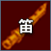
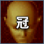

|  |  |
 |  |
 |
 |
 |
 |
【ＤＸＵ】部位選択 タブ
|
|
|
|
|
|
【Ｕ】部位選択 タブ
|
|
|
|
|
|
| 部位 | 等級 | 位置 | オプション | 数値 | 確率 | 改良確率 |
|---|---|---|---|---|---|---|
| 武器 | UMU | 1 | 力増加 | 420 | 7% | 7% |
| 武器 | UMU | 1 | 敏捷増加 | 420 | 7% | 7% |
| 武器 | UMU | 1 | 健康増加 | 420 | 7% | 7% |
| 武器 | UMU | 1 | 知恵増加 | 420 | 7% | 7% |
| 武器 | UMU | 1 | 知識増加 | 420 | 7% | 7% |
| 武器 | UMU | 1 | カリスマ増加 | 420 | 7% | 7% |
| 武器 | UMU | 1 | 運増加 | 420 | 7% | 7% |
| 武器 | UMU | 1 | 全てのステータス増加 | 210 | 2% | 2% |
| 武器 | UMU | 1 | このアイテムの着用レベル減少 | 210 | 7% | 7% |
| 武器 | UMU | 1 | 力増加 Lv2 | 504 | 5% | 5% |
| 武器 | UMU | 1 | 敏捷増加 Lv2 | 504 | 5% | 5% |
| 武器 | UMU | 1 | 健康増加 Lv2 | 504 | 5% | 5% |
| 武器 | UMU | 1 | 知恵増加 Lv2 | 504 | 5% | 5% |
| 武器 | UMU | 1 | 知識増加 Lv2 | 504 | 5% | 5% |
| 武器 | UMU | 1 | カリスマ増加 Lv2 | 504 | 5% | 5% |
| 武器 | UMU | 1 | 運増加 Lv2 | 504 | 5% | 5% |
| 武器 | UMU | 1 | 全てのステータス増加 Lv2 | 252 | 1% | 1% |
| 武器 | UMU | 1 | このアイテムの着用レベル減少 Lv2 | 252 | 6% | 6% |
| 武器 | UMU | 2 | 力比率上昇 | 1/3 | 4% | 4% |
| 武器 | UMU | 2 | 敏捷比率上昇 | 1/3 | 4% | 4% |
| 武器 | UMU | 2 | 知識比率上昇 | 1/3 | 4% | 4% |
| 武器 | UMU | 2 | 健康比率上昇 | 1/3 | 4% | 4% |
| 武器 | UMU | 2 | 知恵比率上昇 | 1/3 | 4% | 4% |
| 武器 | UMU | 2 | 威厳比率上昇 | 1/3 | 4% | 4% |
| 武器 | UMU | 2 | 運比率上昇 | 1/3 | 4% | 4% |
| 武器 | UMU | 2 | 物理ダメージ増加 | 72% | 7% | 7% |
| 武器 | UMU | 2 | 魔法致命打率増加 | 14% | 2% | 3% |
| 武器 | UMU | 2 | 物理ダブルクリティカルダメージ増加 | 14% | 2% | 3% |
| 武器 | UMU | 2 | 物理致命打発動確率増加 | 14% | 8% | 5% |
| 武器 | UMU | 2 | 力比率上昇 Lv2 | 1/2 | 2% | 2% |
| 武器 | UMU | 2 | 敏捷比率上昇 Lv2 | 1/2 | 2% | 2% |
| 武器 | UMU | 2 | 知識比率上昇 Lv2 | 1/2 | 2% | 2% |
| 武器 | UMU | 2 | 健康比率上昇 Lv2 | 1/2 | 2% | 2% |
| 武器 | UMU | 2 | 知恵比率上昇 Lv2 | 1/2 | 2% | 2% |
| 武器 | UMU | 2 | 威厳比率上昇 Lv2 | 1/2 | 2% | 2% |
| 武器 | UMU | 2 | 運比率上昇 Lv2 | 1/2 | 2% | 2% |
| 武器 | UMU | 2 | 物理ダメージ増加 Lv2 | 86% | 4% | 4% |
| 武器 | UMU | 2 | 敵の致命打抵抗率減少 | 10% | 2% | 3% |
| 武器 | UMU | 2 | 魔法ダメージ強化 | 30% | 7% | 7% |
| 武器 | UMU | 2 | 魔法ダメージ強化 Lv2 | 40% | 4% | 4% |
| 武器 | UMU | 2 | 全てのスキルレベル増加 | 5 | 5% | 5% |
| 武器 | UMU | 2 | 全てのスキルレベル増加 Lv2 | 6 | 3% | 3% |
| 武器 | UMU | 2 | 攻撃速度増加 | 14% | 7% | 7% |
| 武器 | UMU | 2 | 攻撃対象の属性吸収値を無視する | - | 3% | 3% |
| 武器 | UMU | 2 | 命中率増加 | 6 | 4% | 4% |
| 武器 | UMU | 3 | 最終ダメージ増加 | 14% | 2% | 3% |
| 武器 | UMU | 3 | 魔法致命打率増加 | 22% | 2% | 3% |
| 武器 | UMU | 3 | 物理ダブルクリティカルダメージ増加 | 10% | 2% | 3% |
| 武器 | UMU | 3 | 物理ダメージ増加 | 66% | 12% | 10% |
| 武器 | UMU | 3 | 最終ダメージ増加 Lv2 | 15% | 1% | 1.50% |
| 武器 | UMU | 3 | 魔法致命打率増加 Lv2 | 23% | 1% | 1.50% |
| 武器 | UMU | 3 | 物理ダブルクリティカルダメージ増加 Lv2 | 12% | 1% | 1.50% |
| 武器 | UMU | 3 | 物理ダメージ増加 Lv2 | 80% | 6% | 5.25% |
| 武器 | UMU | 3 | 最終ダメージ増加 Lv3 | 16% | 0.50% | 0.75% |
| 武器 | UMU | 3 | 魔法致命打率増加 Lv3 | 24% | 0.50% | 0.75% |
| 武器 | UMU | 3 | 物理ダメージ増加 Lv3 | 96% | 3% | 3% |
| 武器 | UMU | 3 | 魔法ダメージ強化 | 30% | 12% | 10% |
| 武器 | UMU | 3 | 魔法ダメージ強化 Lv2 | 40% | 6% | 5.25% |
| 武器 | UMU | 3 | 魔法ダメージ強化 Lv3 | 50% | 3% | 3% |
| 武器 | UMU | 3 | 魔法致命打ダメージ増加 | 7% | 2% | 3% |
| 武器 | UMU | 3 | 攻撃速度増加 | 22% | 7% | 7% |
| 武器 | UMU | 3 | 攻撃速度増加 Lv 2 | 26% | 5% | 4% |
| 武器 | UMU | 3 | 全てのスキルレベル増加 | 6 | 10% | 9% |
| 武器 | UMU | 3 | 全てのスキルレベル増加 Lv2 | 7 | 5% | 4.50% |
| 武器 | UMU | 3 | 敵の致命打抵抗率減少 | 15% | 2% | 3% |
| 武器 | UMU | 3 | ターゲットの魔法の抵抗を弱化 | 30% | 4% | 4% |
| 武器 | UMU | 3 | 物理致命打ダメージ増加 | 12% | 9% | 8% |
| 武器 | UMU | 3 | vs 人間型キャラクター物理ダメージ増加 | 36% | 2% | 3% |
| 武器 | UMU | 3 | vs 人間型キャラクター魔法ダメージ強化 | 12% | 2% | 3% |
| 武器 | UMU | 4 | 魔法致命打率増加 | 14% | 2% | 3% |
| 武器 | UMU | 4 | 物理ダブルクリティカルダメージ増加 | 14% | 2% | 3% |
| 武器 | UMU | 4 | 物理ダメージ増加 | 66% | 15% | 13% |
| 武器 | UMU | 4 | 魔法致命打率増加 Lv2 | 15% | 1% | 1.50% |
| 武器 | UMU | 4 | 物理ダブルクリティカルダメージ増加 Lv2 | 15% | 1% | 1.50% |
| 武器 | UMU | 4 | 物理ダメージ増加 Lv2 | 80% | 7% | 6.70% |
| 武器 | UMU | 4 | 最終ダメージ増加 | 16% | 2% | 3% |
| 武器 | UMU | 4 | 魔法致命打率増加 Lv3 | 16% | 0.50% | 0.75% |
| 武器 | UMU | 4 | 物理ダブルクリティカルダメージ増加 Lv3 | 16% | 0.50% | 0.75% |
| 武器 | UMU | 4 | 物理ダメージ増加 Lv3 | 96% | 4% | 4% |
| 武器 | UMU | 4 | 魔法ダメージ強化 | 30% | 15% | 13% |
| 武器 | UMU | 4 | 魔法ダメージ強化 Lv2 | 40% | 7% | 6.70% |
| 武器 | UMU | 4 | 魔法ダメージ強化 Lv3 | 50% | 3% | 3% |
| 武器 | UMU | 4 | 魔法致命打ダメージ増加 | 7% | 2% | 3% |
| 武器 | UMU | 4 | 敵の致命打抵抗率減少 | 22% | 2% | 3% |
| 武器 | UMU | 4 | 敵の致命打抵抗率減少 Lv2 | 25% | 1% | 1.50% |
| 武器 | UMU | 4 | PVP時、攻撃力増加 | 36% | 2% | 3% |
| 武器 | UMU | 4 | 全てのスキルレベル増加 | 7 | 15% | 13% |
| 武器 | UMU | 4 | 全てのスキルレベル増加 Lv2 | 8 | 8% | 6.60% |
| 武器 | UMU | 4 | 攻撃速度増加 | 14% | 10% | 10% |
武器(笛)
| 部位 | 等級 | 位置 | オプション | 数値 | 確率 | 改良確率 |
|---|---|---|---|---|---|---|
| 武器(笛) | UMU | 1 | 力増加 | 420 | 7% | 7% |
| 武器(笛) | UMU | 1 | 敏捷増加 | 420 | 7% | 7% |
| 武器(笛) | UMU | 1 | 健康増加 | 420 | 7% | 7% |
| 武器(笛) | UMU | 1 | 知恵増加 | 420 | 7% | 7% |
| 武器(笛) | UMU | 1 | 知識増加 | 420 | 7% | 7% |
| 武器(笛) | UMU | 1 | カリスマ増加 | 420 | 7% | 7% |
| 武器(笛) | UMU | 1 | 運増加 | 420 | 7% | 7% |
| 武器(笛) | UMU | 1 | 全てのステータス増加 | 210 | 2% | 2% |
| 武器(笛) | UMU | 1 | このアイテムの着用レベル減少 | 210 | 7% | 7% |
| 武器(笛) | UMU | 1 | 力増加 Lv2 | 504 | 5% | 5% |
| 武器(笛) | UMU | 1 | 敏捷増加 Lv2 | 504 | 5% | 5% |
| 武器(笛) | UMU | 1 | 健康増加 Lv2 | 504 | 5% | 5% |
| 武器(笛) | UMU | 1 | 知恵増加 Lv2 | 504 | 5% | 5% |
| 武器(笛) | UMU | 1 | 知識増加 Lv2 | 504 | 5% | 5% |
| 武器(笛) | UMU | 1 | カリスマ増加 Lv2 | 504 | 5% | 5% |
| 武器(笛) | UMU | 1 | 運増加 Lv2 | 504 | 5% | 5% |
| 武器(笛) | UMU | 1 | 全てのステータス増加 Lv2 | 252 | 1% | 1% |
| 武器(笛) | UMU | 1 | このアイテムの着用レベル減少 Lv2 | 252 | 6% | 6% |
| 武器(笛) | UMU | 2 | 力比率上昇 | 1/3 | 3% | 3% |
| 武器(笛) | UMU | 2 | 敏捷比率上昇 | 1/3 | 3% | 3% |
| 武器(笛) | UMU | 2 | 知識比率上昇 | 1/3 | 3% | 3% |
| 武器(笛) | UMU | 2 | 健康比率上昇 | 1/3 | 3% | 3% |
| 武器(笛) | UMU | 2 | 知恵比率上昇 | 1/3 | 3% | 3% |
| 武器(笛) | UMU | 2 | 威厳比率上昇 | 1/3 | 3% | 3% |
| 武器(笛) | UMU | 2 | 運比率上昇 | 1/3 | 3% | 3% |
| 武器(笛) | UMU | 2 | (召喚獣) 魔法ダメージ強化 | 36% | 7% | 7% |
| 武器(笛) | UMU | 2 | (ペット) 魔法ダメージ強化 | 36% | 7% | 7% |
| 武器(笛) | UMU | 2 | 力比率上昇 Lv2 | 1/2 | 2% | 2% |
| 武器(笛) | UMU | 2 | 敏捷比率上昇 Lv2 | 1/2 | 2% | 2% |
| 武器(笛) | UMU | 2 | 知識比率上昇 Lv2 | 1/2 | 2% | 2% |
| 武器(笛) | UMU | 2 | 健康比率上昇 Lv2 | 1/2 | 2% | 2% |
| 武器(笛) | UMU | 2 | 知恵比率上昇 Lv2 | 1/2 | 2% | 2% |
| 武器(笛) | UMU | 2 | 威厳比率上昇 Lv2 | 1/2 | 2% | 2% |
| 武器(笛) | UMU | 2 | 運比率上昇 Lv2 | 1/2 | 2% | 2% |
| 武器(笛) | UMU | 2 | (召喚獣、ペット) 攻撃速度増加 | 43% | 5% | 5% |
| 武器(笛) | UMU | 2 | (召喚獣、ペット) 攻撃速度増加 Lv2 | 51% | 2% | 2% |
| 武器(笛) | UMU | 2 | 全てのスキルレベル増加 | 5 | 3% | 3% |
| 武器(笛) | UMU | 2 | 全てのスキルレベル増加 Lv2 | 6 | 1% | 1% |
| 武器(笛) | UMU | 2 | (召喚獣、ペット) 物理ダメージ増加 | 72% | 6% | 6% |
| 武器(笛) | UMU | 2 | (召喚獣、ペット) 物理ダメージ増加 Lv2 | 86% | 3% | 3% |
| 武器(笛) | UMU | 2 | (召喚獣、ペット) 魔法ダメージ強化 | 28% | 6% | 6% |
| 武器(笛) | UMU | 2 | (召喚獣、ペット) 魔法ダメージ強化 Lv2 | 33% | 3% | 3% |
| 武器(笛) | UMU | 2 | (召喚獣) 全てのステータス増加 | 300 | 7% | 7% |
| 武器(笛) | UMU | 2 | (召喚獣) 全ての属性攻撃力増加 | 36% | 5% | 5% |
| 武器(笛) | UMU | 2 | (召喚獣) 全ての属性攻撃力増加 Lv2 | 43% | 3% | 3% |
| 武器(笛) | UMU | 2 | (召喚獣、ペット) 防御している者の属性吸収値を無視する | - | 2% | 2% |
| 武器(笛) | UMU | 2 | (ペット) 全てのステータス増加 | 300 | 5% | 5% |
| 武器(笛) | UMU | 3 | (召喚獣) 攻撃速度増加 | 35% | 7% | 7% |
| 武器(笛) | UMU | 3 | (ペット) 移動速度増加 | 35 | 7% | 7% |
| 武器(笛) | UMU | 3 | (召喚獣) 攻撃速度増加 Lv2 | 42% | 4% | 4% |
| 武器(笛) | UMU | 3 | (ペット) 移動速度増加 Lv2 | 42 | 4% | 4% |
| 武器(笛) | UMU | 3 | (召喚獣) 攻撃速度増加 Lv3 | 50% | 2% | 2% |
| 武器(笛) | UMU | 3 | (ペット) 移動速度増加 Lv3 | 50 | 2% | 2% |
| 武器(笛) | UMU | 3 | (召喚獣、ペット) 最終ダメージ増加 | 5% | 2% | 3% |
| 武器(笛) | UMU | 3 | (召喚獣、ペット) 攻撃速度増加 | 31% | 7% | 6% |
| 武器(笛) | UMU | 3 | (召喚獣、ペット) 攻撃速度増加 Lv2 | 37% | 4% | 3% |
| 武器(笛) | UMU | 3 | (召喚獣、ペット) 攻撃速度増加 Lv3 | 44% | 2% | 1% |
| 武器(笛) | UMU | 3 | 全てのスキルレベル増加 | 6 | 7% | 6% |
| 武器(笛) | UMU | 3 | 全てのスキルレベル増加 Lv2 | 8 | 4% | 3% |
| 武器(笛) | UMU | 3 | 全てのスキルレベル増加 Lv3 | 10 | 2% | 1% |
| 武器(笛) | UMU | 3 | vs 人間型キャラクター魔法ダメージ強化 | 12% | 3% | 4.50% |
| 武器(笛) | UMU | 3 | vs 人間型キャラクター魔法ダメージ強化 Lv2 | 14% | 2% | 3% |
| 武器(笛) | UMU | 3 | vs 人間型キャラクター魔法ダメージ強化 Lv3 | 19% | 1% | 1.50% |
| 武器(笛) | UMU | 3 | vs 人間型キャラクター物理ダメージ増加 | 36% | 3% | 4.50% |
| 武器(笛) | UMU | 3 | vs 人間型キャラクター物理ダメージ増加 Lv2 | 43% | 2% | 3% |
| 武器(笛) | UMU | 3 | vs 人間型キャラクター物理ダメージ増加 Lv3 | 51% | 1% | 1.50% |
| 武器(笛) | UMU | 3 | (ペット) 全てのステータス増加 | 300 | 6% | 6% |
| 武器(笛) | UMU | 3 | (ペット) 全てのステータス増加 Lv2 | 360 | 3% | 3% |
| 武器(笛) | UMU | 3 | (ペット) 全てのステータス増加 Lv3 | 432 | 1% | 1% |
| 武器(笛) | UMU | 3 | (召喚獣) 全てのステータス増加 | 300 | 6% | 6% |
| 武器(笛) | UMU | 3 | (召喚獣) 全てのステータス増加 Lv2 | 360 | 3% | 3% |
| 武器(笛) | UMU | 3 | (召喚獣) 全てのステータス増加 Lv3 | 432 | 1% | 1% |
| 武器(笛) | UMU | 3 | (召喚獣、ペット) 物理ダメージ増加 | 100% | 5% | 3.50% |
| 武器(笛) | UMU | 3 | (召喚獣、ペット) 魔法ダメージ強化 | 70% | 5% | 3.50% |
| 武器(笛) | UMU | 3 | (召喚獣、ペット) ダブルクリティカルダメージ増加 | 10% | 2% | 3% |
| 武器(笛) | UMU | 3 | (召喚獣、ペット) 敵の致命打抵抗率減少 | 10% | 3% | |
| 武器(笛) | UMU | 4 | (召喚獣) 最大体力増加 | 144% | 6% | 6% |
| 武器(笛) | UMU | 4 | (ペット) 攻撃速度増加 | 40 | 6% | 6% |
| 武器(笛) | UMU | 4 | (召喚獣) 最大体力増加 Lv2 | 172% | 4% | 4% |
| 武器(笛) | UMU | 4 | (ペット) 攻撃速度増加 Lv2 | 50 | 4% | 4% |
| 武器(笛) | UMU | 4 | (召喚獣) 最大体力増加 Lv3 | 206% | 2% | 2% |
| 武器(笛) | UMU | 4 | (ペット) 攻撃速度増加 Lv3 | 60 | 2% | 2% |
| 武器(笛) | UMU | 4 | (召喚獣、ペット) 最終ダメージ増加 | 5% | 2% | 3% |
| 武器(笛) | UMU | 4 | (召喚獣、ペット) 攻撃速度増加 | 28% | 6% | 6% |
| 武器(笛) | UMU | 4 | (召喚獣、ペット) 攻撃速度増加 Lv2 | 33% | 4% | 3% |
| 武器(笛) | UMU | 4 | (召喚獣、ペット) 攻撃速度増加 Lv3 | 40% | 2% | 1% |
| 武器(笛) | UMU | 4 | 全てのスキルレベル増加 | 12 | 6% | 6% |
| 武器(笛) | UMU | 4 | 全てのスキルレベル増加 Lv2 | 14 | 4% | 3% |
| 武器(笛) | UMU | 4 | 全てのスキルレベル増加 Lv3 | 16 | 2% | 1% |
| 武器(笛) | UMU | 4 | (召喚獣、ペット) 最大体力増加 | 80% | 6% | 6% |
| 武器(笛) | UMU | 4 | (召喚獣、ペット) 最大体力増加 Lv2 | 90% | 3% | 3% |
| 武器(笛) | UMU | 4 | (召喚獣、ペット) 最大体力増加 Lv3 | 100% | 1% | 1% |
| 武器(笛) | UMU | 4 | (召喚獣、ペット) 状態異常抵抗増加 | 36% | 6% | 6% |
| 武器(笛) | UMU | 4 | (召喚獣、ペット) 状態異常抵抗増加 Lv2 | 43% | 3% | 3% |
| 武器(笛) | UMU | 4 | (召喚獣、ペット) 状態異常抵抗増加 Lv3 | 51% | 1% | 1% |
| 武器(笛) | UMU | 4 | PVP時、攻撃力増加 | 36% | 3% | 4.50% |
| 武器(笛) | UMU | 4 | PVP時、攻撃力増加 Lv2 | 43% | 2% | 3% |
| 武器(笛) | UMU | 4 | PVP時、攻撃力増加 Lv3 | 51% | 1% | 1.50% |
| 武器(笛) | UMU | 4 | 回避率増加 | 9 | 6% | 6% |
| 武器(笛) | UMU | 4 | 回避率増加 Lv2 | 10 | 3% | 3% |
| 武器(笛) | UMU | 4 | 回避率増加 Lv3 | 12 | 1% | 1% |
| 武器(笛) | UMU | 4 | (召喚獣、ペット) 物理ダメージ増加 | 100% | 5% | 4% |
| 武器(笛) | UMU | 4 | (召喚獣、ペット) 魔法ダメージ強化 | 70% | 5% | 4% |
| 武器(笛) | UMU | 4 | (召喚獣、ペット) ダブルクリティカルダメージ増加 | 10% | 2% | 3% |
| 武器(笛) | UMU | 4 | (召喚獣、ペット) 敵の致命打抵抗率減少 | 10% | 3% |
共用鎧
| 部位 | 等級 | 位置 | オプション | 数値 | 確率 | 改良確率 |
|---|---|---|---|---|---|---|
| 共用鎧 | UMU | 1 | 力増加 | 240 | 7% | 7% |
| 共用鎧 | UMU | 1 | 敏捷増加 | 240 | 7% | 7% |
| 共用鎧 | UMU | 1 | 健康増加 | 240 | 7% | 7% |
| 共用鎧 | UMU | 1 | 知恵増加 | 240 | 7% | 7% |
| 共用鎧 | UMU | 1 | 知識増加 | 240 | 7% | 7% |
| 共用鎧 | UMU | 1 | カリスマ増加 | 240 | 7% | 7% |
| 共用鎧 | UMU | 1 | 運増加 | 240 | 7% | 7% |
| 共用鎧 | UMU | 1 | 全てのステータス増加 | 120 | 2% | 2% |
| 共用鎧 | UMU | 1 | このアイテムの着用レベル減少 | 144 | 7% | 7% |
| 共用鎧 | UMU | 1 | 力増加 Lv2 | 288 | 5% | 5% |
| 共用鎧 | UMU | 1 | 敏捷増加 Lv2 | 288 | 5% | 5% |
| 共用鎧 | UMU | 1 | 健康増加 Lv2 | 288 | 5% | 5% |
| 共用鎧 | UMU | 1 | 知恵増加 Lv2 | 288 | 5% | 5% |
| 共用鎧 | UMU | 1 | 知識増加 Lv2 | 288 | 5% | 5% |
| 共用鎧 | UMU | 1 | カリスマ増加 Lv2 | 288 | 5% | 5% |
| 共用鎧 | UMU | 1 | 運増加 Lv2 | 288 | 5% | 5% |
| 共用鎧 | UMU | 1 | 全てのステータス増加 Lv2 | 144 | 1% | 1% |
| 共用鎧 | UMU | 1 | このアイテムの着用レベル減少 Lv2 | 172 | 6% | 6% |
| 共用鎧 | UMU | 2 | 力比率上昇 | 1/3 | 6% | 6% |
| 共用鎧 | UMU | 2 | 敏捷比率上昇 | 1/3 | 6% | 6% |
| 共用鎧 | UMU | 2 | 知識比率上昇 | 1/3 | 6% | 6% |
| 共用鎧 | UMU | 2 | 健康比率上昇 | 1/3 | 6% | 6% |
| 共用鎧 | UMU | 2 | 知恵比率上昇 | 1/3 | 6% | 6% |
| 共用鎧 | UMU | 2 | 威厳比率上昇 | 1/3 | 6% | 6% |
| 共用鎧 | UMU | 2 | 運比率上昇 | 1/3 | 6% | 6% |
| 共用鎧 | UMU | 2 | 防御力%増加 | 180% | 12% | 12% |
| 共用鎧 | UMU | 2 | 防御力%増加 Lv2 | 216% | 6% | 6% |
| 共用鎧 | UMU | 2 | 力比率上昇 Lv2 | 1/2 | 3% | 3% |
| 共用鎧 | UMU | 2 | 敏捷比率上昇 Lv2 | 1/2 | 3% | 3% |
| 共用鎧 | UMU | 2 | 知識比率上昇 Lv2 | 1/2 | 3% | 3% |
| 共用鎧 | UMU | 2 | 健康比率上昇 Lv2 | 1/2 | 3% | 3% |
| 共用鎧 | UMU | 2 | 知恵比率上昇 Lv2 | 1/2 | 3% | 3% |
| 共用鎧 | UMU | 2 | 威厳比率上昇 Lv2 | 1/2 | 3% | 3% |
| 共用鎧 | UMU | 2 | 運比率上昇 Lv2 | 1/2 | 3% | 3% |
| 共用鎧 | UMU | 2 | 移動速度増加 | 28% | 13% | 13% |
| 共用鎧 | UMU | 2 | 移動速度増加 Lv2 | 33% | 6% | 6% |
| 共用鎧 | UMU | 3 | 防御力+増加 | 72 | 7% | 7% |
| 共用鎧 | UMU | 3 | 防御力+増加 Lv2 | 86 | 3% | 3% |
| 共用鎧 | UMU | 3 | 防御力+増加 Lv3 | 103 | 1% | 1% |
| 共用鎧 | UMU | 3 | 火属性抵抗増加 | 51% | 7% | 7% |
| 共用鎧 | UMU | 3 | 火属性抵抗増加 Lv2 | 61% | 3% | 3% |
| 共用鎧 | UMU | 3 | 火属性抵抗増加 Lv3 | 73% | 1% | 1% |
| 共用鎧 | UMU | 3 | 水属性抵抗増加 | 51% | 7% | 7% |
| 共用鎧 | UMU | 3 | 水属性抵抗増加 Lv2 | 61% | 3% | 3% |
| 共用鎧 | UMU | 3 | 水属性抵抗増加 Lv3 | 73% | 1% | 1% |
| 共用鎧 | UMU | 3 | 風属性抵抗増加 | 51% | 7% | 7% |
| 共用鎧 | UMU | 3 | 風属性抵抗増加 Lv2 | 61% | 3% | 3% |
| 共用鎧 | UMU | 3 | 風属性抵抗増加 Lv3 | 73% | 1% | 1% |
| 共用鎧 | UMU | 3 | 大地属性抵抗増加 | 51% | 7% | 7% |
| 共用鎧 | UMU | 3 | 大地属性抵抗増加 Lv2 | 61% | 3% | 3% |
| 共用鎧 | UMU | 3 | 大地属性抵抗増加 Lv3 | 73% | 1% | 1% |
| 共用鎧 | UMU | 3 | 光属性抵抗増加 | 51% | 7% | 7% |
| 共用鎧 | UMU | 3 | 光属性抵抗増加 Lv2 | 61% | 3% | 3% |
| 共用鎧 | UMU | 3 | 光属性抵抗増加 Lv3 | 73% | 1% | 1% |
| 共用鎧 | UMU | 3 | 闇属性抵抗増加 | 51% | 7% | 7% |
| 共用鎧 | UMU | 3 | 闇属性抵抗増加 Lv2 | 61% | 3% | 3% |
| 共用鎧 | UMU | 3 | 闇属性抵抗増加 Lv3 | 73% | 1% | 1% |
| 共用鎧 | UMU | 3 | (召喚獣、ペット) 状態異常抵抗増加 | 28% | 9.50% | 8.50% |
| 共用鎧 | UMU | 3 | PVP時、攻撃力増加 | 7% | 2% | 3% |
| 共用鎧 | UMU | 3 | 物理ダメージ増加 | 36% | 9.50% | 8.50% |
| 共用鎧 | UMU | 3 | 魔法致命打率増加 | 5% | 2% | 3% |
| 共用鎧 | UMU | 4 | 防御力+増加 | 66 | 10% | 10% |
| 共用鎧 | UMU | 4 | 防御力+増加 Lv2 | 79 | 5% | 5% |
| 共用鎧 | UMU | 4 | 防御力+増加 Lv3 | 94 | 3% | 3% |
| 共用鎧 | UMU | 4 | 全属性抵抗増加 | 34% | 6% | 6% |
| 共用鎧 | UMU | 4 | 被ダメージ時、物理致命打ダメージ減少 | 18% | 10% | 10% |
| 共用鎧 | UMU | 4 | 被ダメージ時、物理致命打ダメージ減少 Lv2 | 21% | 5% | 5% |
| 共用鎧 | UMU | 4 | 被ダメージ時、物理致命打ダメージ減少 Lv3 | 25% | 3% | 3% |
| 共用鎧 | UMU | 4 | 最大CP増加 | 864 | 10% | 10% |
| 共用鎧 | UMU | 4 | 最大CP増加 Lv2 | 1036 | 5% | 4% |
| 共用鎧 | UMU | 4 | 最大CP増加 Lv3 | 1243 | 2% | 2% |
| 共用鎧 | UMU | 4 | 最大体力増加 | 864 | 8% | 7% |
| 共用鎧 | UMU | 4 | 最大体力増加 Lv2 | 1036 | 4% | 4% |
| 共用鎧 | UMU | 4 | 最大体力増加 Lv3 | 1243 | 2% | 2% |
| 共用鎧 | UMU | 4 | PVP時、防御力増加 | 7% | 2% | 3% |
| 共用鎧 | UMU | 4 | 被ダメージ減少 | 7% | 2% | 3% |
| 共用鎧 | UMU | 4 | 物理ダブルクリティカルダメージ増加 | 14% | 2% | 3% |
| 共用鎧 | UMU | 4 | 魔法致命打率増加 | 8% | 2% | 3% |
| 共用鎧 | UMU | 4 | (召喚獣、ペット) 最大体力増加 | 28% | 7% | 7% |
| 共用鎧 | UMU | 4 | 最大体力%増加 | 125% | 8% | 7% |
| 共用鎧 | UMU | 4 | 最大体力%増加 Lv2 | 150% | 4% | 3% |
専用鎧
| 部位 | 等級 | 位置 | オプション | 数値 | 確率 | 改良確率 |
|---|---|---|---|---|---|---|
| 専用鎧 | UMU | 1 | 力増加 | 240 | 7% | 7% |
| 専用鎧 | UMU | 1 | 敏捷増加 | 240 | 7% | 7% |
| 専用鎧 | UMU | 1 | 健康増加 | 240 | 7% | 7% |
| 専用鎧 | UMU | 1 | 知恵増加 | 240 | 7% | 7% |
| 専用鎧 | UMU | 1 | 知識増加 | 240 | 7% | 7% |
| 専用鎧 | UMU | 1 | カリスマ増加 | 240 | 7% | 7% |
| 専用鎧 | UMU | 1 | 運増加 | 240 | 7% | 7% |
| 専用鎧 | UMU | 1 | 全てのステータス増加 | 120 | 2% | 2% |
| 専用鎧 | UMU | 1 | このアイテムの着用レベル減少 | 180 | 7% | 7% |
| 専用鎧 | UMU | 1 | 力増加 Lv2 | 288 | 5% | 5% |
| 専用鎧 | UMU | 1 | 敏捷増加 Lv2 | 288 | 5% | 5% |
| 専用鎧 | UMU | 1 | 健康増加 Lv2 | 288 | 5% | 5% |
| 専用鎧 | UMU | 1 | 知恵増加 Lv2 | 288 | 5% | 5% |
| 専用鎧 | UMU | 1 | 知識増加 Lv2 | 288 | 5% | 5% |
| 専用鎧 | UMU | 1 | カリスマ増加 Lv2 | 288 | 5% | 5% |
| 専用鎧 | UMU | 1 | 運増加 Lv2 | 288 | 5% | 5% |
| 専用鎧 | UMU | 1 | 全てのステータス増加 Lv2 | 144 | 1% | 1% |
| 専用鎧 | UMU | 1 | このアイテムの着用レベル減少 Lv2 | 216 | 6% | 6% |
| 専用鎧 | UMU | 2 | 力比率上昇 | 1/3 | 3% | 3% |
| 専用鎧 | UMU | 2 | 敏捷比率上昇 | 1/3 | 3% | 3% |
| 専用鎧 | UMU | 2 | 知識比率上昇 | 1/3 | 3% | 3% |
| 専用鎧 | UMU | 2 | 健康比率上昇 | 1/3 | 3% | 3% |
| 専用鎧 | UMU | 2 | 知恵比率上昇 | 1/3 | 3% | 3% |
| 専用鎧 | UMU | 2 | 威厳比率上昇 | 1/3 | 3% | 3% |
| 専用鎧 | UMU | 2 | 運比率上昇 | 1/3 | 3% | 3% |
| 専用鎧 | UMU | 2 | 防御力%増加 | 192% | 5% | 5% |
| 専用鎧 | UMU | 2 | 力比率上昇 Lv2 | 1/2 | 2% | 2% |
| 専用鎧 | UMU | 2 | 敏捷比率上昇 Lv2 | 1/2 | 2% | 2% |
| 専用鎧 | UMU | 2 | 知識比率上昇 Lv2 | 1/2 | 2% | 2% |
| 専用鎧 | UMU | 2 | 健康比率上昇 Lv2 | 1/2 | 2% | 2% |
| 専用鎧 | UMU | 2 | 知恵比率上昇 Lv2 | 1/2 | 2% | 2% |
| 専用鎧 | UMU | 2 | 威厳比率上昇 Lv2 | 1/2 | 2% | 2% |
| 専用鎧 | UMU | 2 | 運比率上昇 Lv2 | 1/2 | 2% | 2% |
| 専用鎧 | UMU | 2 | 防御力%増加 Lv2 | 230% | 2% | 2% |
| 専用鎧 | UMU | 2 | (召喚獣) 魔法ダメージ強化 | 22% | 5% | 5% |
| 専用鎧 | UMU | 2 | (召喚獣) 魔法ダメージ強化 Lv2 | 26% | 3% | 3% |
| 専用鎧 | UMU | 2 | 移動速度増加 | 36% | 5% | 4.50% |
| 専用鎧 | UMU | 2 | 移動速度増加 Lv2 | 43% | 3% | 2.50% |
| 専用鎧 | UMU | 2 | 物理ダブルクリティカルダメージ増加 | 15% | 2% | 3% |
| 専用鎧 | UMU | 2 | (召喚獣) 全てのステータス増加 | 120 | 5% | 5% |
| 専用鎧 | UMU | 2 | (召喚獣) 全てのステータス増加 Lv2 | 144 | 3% | 3% |
| 専用鎧 | UMU | 2 | CP獲得ボーナス増加 | 12% | 5% | 5% |
| 専用鎧 | UMU | 2 | CP獲得ボーナス増加 Lv2 | 14% | 3% | 3% |
| 専用鎧 | UMU | 2 | 最大体力増加 | 36% | 5% | 5% |
| 専用鎧 | UMU | 2 | 最大体力増加 Lv2 | 43% | 3% | 3% |
| 専用鎧 | UMU | 2 | (召喚獣、ペット) 最大体力増加 | 60% | 5% | 5% |
| 専用鎧 | UMU | 2 | (召喚獣、ペット) 最大体力増加 Lv2 | 72% | 3% | 3% |
| 専用鎧 | UMU | 2 | 防御力+増加 | 54 | 5% | 5% |
| 専用鎧 | UMU | 2 | 防御力+増加 Lv2 | 64 | 3% | 3% |
| 専用鎧 | UMU | 3 | 防御力+増加 | 96 | 10% | 9% |
| 専用鎧 | UMU | 3 | 防御力+増加 Lv2 | 115 | 5% | 5% |
| 専用鎧 | UMU | 3 | 防御力+増加 Lv3 | 138 | 2.50% | 2% |
| 専用鎧 | UMU | 3 | (ペット) 全てのステータス増加 | 240 | 10% | 9% |
| 専用鎧 | UMU | 3 | (ペット) 全てのステータス増加 Lv2 | 288 | 5% | 5% |
| 専用鎧 | UMU | 3 | (ペット) 全てのステータス増加 Lv3 | 345 | 2.50% | 2% |
| 専用鎧 | UMU | 3 | 物理ダブルクリティカルダメージ増加 | 12% | 2% | 3% |
| 専用鎧 | UMU | 3 | 物理ダブルクリティカルダメージ増加 Lv2 | 13% | 1% | 1.50% |
| 専用鎧 | UMU | 3 | 物理ダブルクリティカルダメージ増加 Lv3 | 14% | 0.50% | 0.75% |
| 専用鎧 | UMU | 3 | 移動速度増加 | 36% | 10% | 9% |
| 専用鎧 | UMU | 3 | 移動速度増加 Lv2 | 43% | 5% | 5% |
| 専用鎧 | UMU | 3 | 移動速度増加 Lv3 | 51% | 2.50% | 2% |
| 専用鎧 | UMU | 3 | 回避率増加 | 9 | 10% | 9% |
| 専用鎧 | UMU | 3 | 回避率増加 Lv2 | 10 | 5% | 5% |
| 専用鎧 | UMU | 3 | 回避率増加 Lv3 | 12 | 2.50% | 2% |
| 専用鎧 | UMU | 3 | 敵の致命打抵抗率減少 | 6% | 2% | 3% |
| 専用鎧 | UMU | 3 | 魔法致命打率増加 | 6% | 2% | 3% |
| 専用鎧 | UMU | 3 | 魔法致命打率増加 Lv2 | 7% | 1% | 1.50% |
| 専用鎧 | UMU | 3 | 魔法致命打率増加 Lv3 | 8% | 0.50% | 0.75% |
| 専用鎧 | UMU | 3 | (召喚獣、ペット) 敵の致命打抵抗率減少 | 5% | 2% | 3% |
| 専用鎧 | UMU | 3 | (召喚獣、ペット) 最終ダメージ増加 | 6% | 2% | 3% |
| 専用鎧 | UMU | 3 | 攻撃速度増加 | 12% | 10% | 9% |
| 専用鎧 | UMU | 3 | 攻撃速度増加 Lv2 | 14% | 5% | 5% |
| 専用鎧 | UMU | 3 | 攻撃速度増加 Lv3 | 19% | 2% | 2.50% |
| 専用鎧 | UMU | 4 | 被ダメージ時、物理ダブル クリティカルダメージ減少 | 14% | 12% | 11.25% |
| 専用鎧 | UMU | 4 | 被ダメージ時、物理ダブル クリティカルダメージ減少 Lv2 | 19% | 6% | 5% |
| 専用鎧 | UMU | 4 | 被ダメージ時、物理ダブル クリティカルダメージ減少 Lv3 | 22% | 2.50% | 2% |
| 専用鎧 | UMU | 4 | 物理ダブルクリティカルダメージ増加 | 14% | 2% | 3% |
| 専用鎧 | UMU | 4 | 物理ダブルクリティカルダメージ増加 Lv2 | 15% | 1% | 1.50% |
| 専用鎧 | UMU | 4 | 物理ダブルクリティカルダメージ増加 Lv3 | 16% | 0.50% | 0.75% |
| 専用鎧 | UMU | 4 | 魔法致命打率増加 | 15% | 2% | 3% |
| 専用鎧 | UMU | 4 | 魔法致命打率増加 Lv2 | 16% | 1% | 1.50% |
| 専用鎧 | UMU | 4 | 魔法致命打率増加 Lv3 | 17% | 0.50% | 0.75% |
| 専用鎧 | UMU | 4 | (召喚獣、ペット) 魔法ダメージ強化 | 18% | 12% | 11% |
| 専用鎧 | UMU | 4 | (召喚獣、ペット) 魔法ダメージ強化 Lv2 | 21% | 6% | 5% |
| 専用鎧 | UMU | 4 | (召喚獣、ペット) 魔法ダメージ強化 Lv3 | 25% | 2.50% | 2% |
| 専用鎧 | UMU | 4 | 敵の致命打抵抗率減少 | 20% | 2% | 3% |
| 専用鎧 | UMU | 4 | 攻撃速度増加 | 18% | 12% | 11% |
| 専用鎧 | UMU | 4 | 攻撃速度増加 Lv2 | 21% | 6% | 5% |
| 専用鎧 | UMU | 4 | 攻撃速度増加 Lv3 | 25% | 2.25% | 2% |
| 専用鎧 | UMU | 4 | CP獲得ボーナス増加 | 12% | 12% | 11% |
| 専用鎧 | UMU | 4 | CP獲得ボーナス増加 Lv2 | 14% | 6% | 5% |
| 専用鎧 | UMU | 4 | CP獲得ボーナス増加 Lv3 | 19% | 2.25% | 2% |
| 専用鎧 | UMU | 4 | (召喚獣、ペット) 敵の致命打抵抗率減少 | 10% | 2% | 3% |
| 専用鎧 | UMU | 4 | (召喚獣、ペット) 敵の致命打抵抗率減少 Lv2 | 15% | 1% | 1.50% |
| 専用鎧 | UMU | 4 | (召喚獣、ペット) 敵の致命打抵抗率減少 Lv3 | 20% | 0.50% | 0.75% |
| 専用鎧 | UMU | 4 | (召喚獣、ペット) 最終ダメージ増加 | 6% | 2% | 3% |
| 専用鎧 | UMU | 4 | 魔法致命打ダメージ増加 | 4% | 2% | 3% |
| 専用鎧 | UMU | 4 | 限界ダメージ増加(物理、魔法) | 1200/3% | 2% | 3% |
イヤリング、マント
| 部位 | 等級 | 位置 | オプション | 数値 | 確率 | 改良確率 |
|---|---|---|---|---|---|---|
| イヤリング、マント | UMU | 1 | 力増加 | 172 | 7% | 7% |
| イヤリング、マント | UMU | 1 | 敏捷増加 | 172 | 7% | 7% |
| イヤリング、マント | UMU | 1 | 健康増加 | 172 | 7% | 7% |
| イヤリング、マント | UMU | 1 | 知恵増加 | 172 | 7% | 7% |
| イヤリング、マント | UMU | 1 | 知識増加 | 172 | 7% | 7% |
| イヤリング、マント | UMU | 1 | カリスマ増加 | 172 | 7% | 7% |
| イヤリング、マント | UMU | 1 | 運増加 | 172 | 7% | 7% |
| イヤリング、マント | UMU | 1 | 全てのステータス増加 | 86 | 2% | 2% |
| イヤリング、マント | UMU | 1 | このアイテムの着用レベル減少 | 216 | 7% | 7% |
| イヤリング、マント | UMU | 1 | 力増加 Lv2 | 206 | 5% | 5% |
| イヤリング、マント | UMU | 1 | 敏捷増加 Lv2 | 206 | 5% | 5% |
| イヤリング、マント | UMU | 1 | 健康増加 Lv2 | 206 | 5% | 5% |
| イヤリング、マント | UMU | 1 | 知恵増加 Lv2 | 206 | 5% | 5% |
| イヤリング、マント | UMU | 1 | 知識増加 Lv2 | 206 | 5% | 5% |
| イヤリング、マント | UMU | 1 | カリスマ増加 Lv2 | 206 | 5% | 5% |
| イヤリング、マント | UMU | 1 | 運増加 Lv2 | 206 | 5% | 5% |
| イヤリング、マント | UMU | 1 | 全てのステータス増加 Lv2 | 103 | 1% | 1% |
| イヤリング、マント | UMU | 1 | このアイテムの着用レベル減少 Lv2 | 259 | 6% | 6% |
| イヤリング、マント | UMU | 2 | 力比率上昇 | 1/3 | 4% | 4% |
| イヤリング、マント | UMU | 2 | 敏捷比率上昇 | 1/3 | 4% | 4% |
| イヤリング、マント | UMU | 2 | 知識比率上昇 | 1/3 | 4% | 4% |
| イヤリング、マント | UMU | 2 | 健康比率上昇 | 1/3 | 4% | 4% |
| イヤリング、マント | UMU | 2 | 知恵比率上昇 | 1/3 | 4% | 4% |
| イヤリング、マント | UMU | 2 | 威厳比率上昇 | 1/3 | 4% | 4% |
| イヤリング、マント | UMU | 2 | 運比率上昇 | 1/3 | 4% | 4% |
| イヤリング、マント | UMU | 2 | 力比率上昇 Lv2 | 1/2 | 2% | 2% |
| イヤリング、マント | UMU | 2 | 敏捷比率上昇 Lv2 | 1/2 | 2% | 2% |
| イヤリング、マント | UMU | 2 | 知識比率上昇 Lv2 | 1/2 | 2% | 2% |
| イヤリング、マント | UMU | 2 | 健康比率上昇 Lv2 | 1/2 | 2% | 2% |
| イヤリング、マント | UMU | 2 | 知恵比率上昇 Lv2 | 1/2 | 2% | 2% |
| イヤリング、マント | UMU | 2 | 威厳比率上昇 Lv2 | 1/2 | 2% | 2% |
| イヤリング、マント | UMU | 2 | 運比率上昇 Lv2 | 1/2 | 2% | 2% |
| イヤリング、マント | UMU | 2 | 最大CP増加 | 70% | 10% | 10% |
| イヤリング、マント | UMU | 2 | 最大CP増加 Lv2 | 84% | 4.50% | 4.50% |
| イヤリング、マント | UMU | 2 | 最大体力%増加 | 66% | 10% | 10% |
| イヤリング、マント | UMU | 2 | 最大体力%増加 Lv2 | 79% | 4.50% | 4.50% |
| イヤリング、マント | UMU | 2 | 攻撃速度増加 | 12% | 10% | 10% |
| イヤリング、マント | UMU | 2 | 攻撃速度増加 Lv2 | 14% | 4.50% | 4.50% |
| イヤリング、マント | UMU | 2 | 防御力%増加 | 72% | 10% | 10% |
| イヤリング、マント | UMU | 2 | 防御力%増加 Lv2 | 86% | 4.50% | 4.50% |
| イヤリング、マント | UMU | 3 | CP獲得ボーナス増加 | 24% | 7% | 7% |
| イヤリング、マント | UMU | 3 | CP獲得ボーナス増加 Lv2 | 28% | 3% | 3% |
| イヤリング、マント | UMU | 3 | CP獲得ボーナス増加 Lv3 | 33% | 1% | 1% |
| イヤリング、マント | UMU | 3 | 武器最小ダメージ増加 | 14 | 7% | 7% |
| イヤリング、マント | UMU | 3 | 武器最小ダメージ増加 Lv2 | 19 | 3% | 3% |
| イヤリング、マント | UMU | 3 | 武器最小ダメージ増加 Lv3 | 22 | 1% | 1% |
| イヤリング、マント | UMU | 3 | 攻撃速度増加 | 14% | 7% | 7% |
| イヤリング、マント | UMU | 3 | 攻撃速度増加 Lv2 | 19% | 3% | 3% |
| イヤリング、マント | UMU | 3 | 攻撃速度増加 Lv3 | 22% | 1% | 1% |
| イヤリング、マント | UMU | 3 | 物理ダメージ増加 | 40% | 7% | 7% |
| イヤリング、マント | UMU | 3 | 物理ダメージ増加 Lv2 | 50% | 3% | 3% |
| イヤリング、マント | UMU | 3 | 魔法ダメージ強化 | 28% | 7% | 7% |
| イヤリング、マント | UMU | 3 | 魔法ダメージ強化 Lv2 | 33% | 3% | 3% |
| イヤリング、マント | UMU | 3 | 全てのスキルレベル増加 | 5 | 7% | 7% |
| イヤリング、マント | UMU | 3 | 全てのスキルレベル増加 Lv2 | 7 | 3% | 3% |
| イヤリング、マント | UMU | 3 | 最大CP増加 | 19% | 7% | 7% |
| イヤリング、マント | UMU | 3 | 最大CP増加 Lv2 | 22% | 3% | 3% |
| イヤリング、マント | UMU | 3 | 最大CP増加 Lv3 | 30% | 1% | 1% |
| イヤリング、マント | UMU | 3 | 移動速度増加 | 24% | 7% | 7% |
| イヤリング、マント | UMU | 3 | 移動速度増加 Lv2 | 28% | 3% | 3% |
| イヤリング、マント | UMU | 3 | 移動速度増加 Lv3 | 33% | 1% | 1% |
| イヤリング、マント | UMU | 3 | 最大体力%増加 | 20% | 6% | 6% |
| イヤリング、マント | UMU | 3 | 防御力%増加 Lv2 | 30% | 6% | 6% |
| イヤリング、マント | UMU | 3 | 防御力%増加 Lv3 | 40% | 3% | 3% |
| イヤリング、マント | UMU | 4 | 物理致命打ダメージ増加 | 36% | 12% | 10.63% |
| イヤリング、マント | UMU | 4 | 物理致命打ダメージ増加 Lv2 | 43% | 6% | 5% |
| イヤリング、マント | UMU | 4 | 物理致命打ダメージ増加 Lv3 | 51% | 3% | 3% |
| イヤリング、マント | UMU | 4 | 最大体力%増加 | 100% | 11.50% | 10.63% |
| イヤリング、マント | UMU | 4 | 最大体力%増加 Lv2 | 120% | 5.50% | 5% |
| イヤリング、マント | UMU | 4 | 最大体力%増加 Lv3 | 144% | 3% | 3% |
| イヤリング、マント | UMU | 4 | 魔法致命打発動確率増加 | 10% | 2% | 3% |
| イヤリング、マント | UMU | 4 | 魔法致命打発動確率増加 Lv2 | 11% | 1% | 1.50% |
| イヤリング、マント | UMU | 4 | 魔法致命打発動確率増加 Lv3 | 12% | 0.50% | 0.75% |
| イヤリング、マント | UMU | 4 | 物理ダブルクリティカルダメージ増加 | 12% | 2% | 3% |
| イヤリング、マント | UMU | 4 | 物理ダブルクリティカルダメージ増加 Lv2 | 13% | 1% | 1.50% |
| イヤリング、マント | UMU | 4 | 武器最大ダメージ増加 | 14 | 12% | 10.63% |
| イヤリング、マント | UMU | 4 | 武器最大ダメージ増加 Lv2 | 19 | 6% | 5% |
| イヤリング、マント | UMU | 4 | 武器最大ダメージ増加 Lv3 | 22 | 3% | 3% |
| イヤリング、マント | UMU | 4 | 魔法ダメージ強化 | 28% | 12% | 10.63% |
| イヤリング、マント | UMU | 4 | 魔法ダメージ強化 Lv2 | 33% | 6% | 5% |
| イヤリング、マント | UMU | 4 | 魔法ダメージ強化 Lv3 | 39% | 3% | 3% |
| イヤリング、マント | UMU | 4 | フィールドのステータス低下に対する抵抗 [0]％ 増加 | 4% | 2% | 3% |
| イヤリング、マント | UMU | 4 | フィールドのステータス低下に対する抵抗 [0]％ 増加 Lv2 | 5% | 1% | 1.50% |
| イヤリング、マント | UMU | 4 | フィールドのステータス低下に対する抵抗 [0]％ 増加 Lv3 | 6% | 0.50% | 0.75% |
| イヤリング、マント | UMU | 4 | 魔法致命打ダメージ増加 | 7% | 2% | 3% |
| イヤリング、マント | UMU | 4 | 魔法致命打ダメージ増加 Lv2 | 8% | 1% | 1.50% |
| イヤリング、マント | UMU | 4 | 魔法致命打ダメージ増加 Lv3 | 9% | 0.50% | 0.75% |
| イヤリング、マント | UMU | 4 | 最終ダメージ増加 | 4% | 2% | 3% |
| イヤリング、マント | UMU | 4 | 最終ダメージ増加 Lv2 | 5% | 1% | 1.50% |
| イヤリング、マント | UMU | 4 | 最終ダメージ増加 Lv3 | 6% | 0.50% | 0.75% |
ヘルメット
| 部位 | 等級 | 位置 | オプション | 数値 | 確率 | 改良確率 |
|---|---|---|---|---|---|---|
| ヘルメット | UMU | 1 | 力増加 | 276 | 7% | 7% |
| ヘルメット | UMU | 1 | 敏捷増加 | 276 | 7% | 7% |
| ヘルメット | UMU | 1 | 健康増加 | 276 | 7% | 7% |
| ヘルメット | UMU | 1 | 知恵増加 | 276 | 7% | 7% |
| ヘルメット | UMU | 1 | 知識増加 | 276 | 7% | 7% |
| ヘルメット | UMU | 1 | カリスマ増加 | 276 | 7% | 7% |
| ヘルメット | UMU | 1 | 運増加 | 276 | 7% | 7% |
| ヘルメット | UMU | 1 | 全てのステータス増加 | 138 | 2% | 2% |
| ヘルメット | UMU | 1 | このアイテムの着用レベル減少 | 259 | 7% | 7% |
| ヘルメット | UMU | 1 | 力増加 Lv2 | 331 | 5% | 5% |
| ヘルメット | UMU | 1 | 敏捷増加 Lv2 | 331 | 5% | 5% |
| ヘルメット | UMU | 1 | 健康増加 Lv2 | 331 | 5% | 5% |
| ヘルメット | UMU | 1 | 知恵増加 Lv2 | 331 | 5% | 5% |
| ヘルメット | UMU | 1 | 知識増加 Lv2 | 331 | 5% | 5% |
| ヘルメット | UMU | 1 | カリスマ増加 Lv2 | 331 | 5% | 5% |
| ヘルメット | UMU | 1 | 運増加 Lv2 | 331 | 5% | 5% |
| ヘルメット | UMU | 1 | 全てのステータス増加 Lv2 | 165 | 1% | 1% |
| ヘルメット | UMU | 1 | このアイテムの着用レベル減少 Lv2 | 310 | 6% | 6% |
| ヘルメット | UMU | 2 | 力比率上昇 | 1/3 | 7% | 7% |
| ヘルメット | UMU | 2 | 敏捷比率上昇 | 1/3 | 7% | 7% |
| ヘルメット | UMU | 2 | 知識比率上昇 | 1/3 | 7% | 7% |
| ヘルメット | UMU | 2 | 健康比率上昇 | 1/3 | 7% | 7% |
| ヘルメット | UMU | 2 | 知恵比率上昇 | 1/3 | 7% | 7% |
| ヘルメット | UMU | 2 | 威厳比率上昇 | 1/3 | 7% | 7% |
| ヘルメット | UMU | 2 | 運比率上昇 | 1/3 | 7% | 7% |
| ヘルメット | UMU | 2 | 力比率上昇 Lv2 | 1/2 | 4% | 4% |
| ヘルメット | UMU | 2 | 敏捷比率上昇 Lv2 | 1/2 | 4% | 4% |
| ヘルメット | UMU | 2 | 知識比率上昇 Lv2 | 1/2 | 4% | 4% |
| ヘルメット | UMU | 2 | 健康比率上昇 Lv2 | 1/2 | 4% | 4% |
| ヘルメット | UMU | 2 | 知恵比率上昇 Lv2 | 1/2 | 4% | 4% |
| ヘルメット | UMU | 2 | 威厳比率上昇 Lv2 | 1/2 | 4% | 4% |
| ヘルメット | UMU | 2 | 運比率上昇 Lv2 | 1/2 | 4% | 4% |
| ヘルメット | UMU | 2 | 防御力+増加 | 36 | 15% | 15% |
| ヘルメット | UMU | 2 | 防御力+増加 Lv2 | 43 | 8% | 8% |
| ヘルメット | UMU | 3 | vs 動物型キャラクター物理ダメージ増加 | 72% | 9% | 9% |
| ヘルメット | UMU | 3 | vs 動物型キャラクター物理ダメージ増加 Lv2 | 86% | 5% | 5% |
| ヘルメット | UMU | 3 | vs 動物型キャラクター物理ダメージ増加 Lv3 | 103% | 2% | 2% |
| ヘルメット | UMU | 3 | (召喚獣、ペット) 状態異常抵抗増加 | 12% | 9% | 9% |
| ヘルメット | UMU | 3 | (召喚獣、ペット) 状態異常抵抗増加 Lv2 | 14% | 5% | 5% |
| ヘルメット | UMU | 3 | (召喚獣、ペット) 状態異常抵抗増加 Lv3 | 16% | 2% | 2% |
| ヘルメット | UMU | 3 | 最大体力%増加 | 60% | 9% | 9% |
| ヘルメット | UMU | 3 | 最大体力%増加 Lv2 | 72% | 5% | 5% |
| ヘルメット | UMU | 3 | 最大体力%増加 Lv3 | 86% | 3% | 3% |
| ヘルメット | UMU | 3 | 物理致命打ダメージ増加 | 12% | 9% | 9% |
| ヘルメット | UMU | 3 | 物理致命打ダメージ増加 Lv2 | 14% | 5% | 5% |
| ヘルメット | UMU | 3 | 物理致命打ダメージ増加 Lv3 | 16% | 3% | 3% |
| ヘルメット | UMU | 3 | 防御力%増加 | 43% | 9% | 9% |
| ヘルメット | UMU | 3 | 防御力%増加 Lv2 | 51% | 5% | 5% |
| ヘルメット | UMU | 3 | 防御力%増加 Lv3 | 61% | 3% | 3% |
| ヘルメット | UMU | 3 | (召喚獣、ペット) 最大体力%増加 | 30% | 9% | 9% |
| ヘルメット | UMU | 3 | (召喚獣、ペット) 最大体力%増加 Lv2 | 40% | 5% | 5% |
| ヘルメット | UMU | 3 | (召喚獣、ペット) 最大体力%増加 Lv3 | 50% | 3% | 3% |
| ヘルメット | UMU | 4 | 物理致命打抵抗増加 | 26% | 9% | 9% |
| ヘルメット | UMU | 4 | 物理致命打抵抗増加 Lv2 | 31% | 4% | 3% |
| ヘルメット | UMU | 4 | 物理致命打抵抗増加 Lv3 | 37% | 1% | 1.19% |
| ヘルメット | UMU | 4 | 防御力%増加 | 43% | 9% | 9% |
| ヘルメット | UMU | 4 | 防御力%増加 Lv2 | 51% | 4% | 3% |
| ヘルメット | UMU | 4 | 防御力%増加 Lv3 | 61% | 1% | 1.19% |
| ヘルメット | UMU | 4 | 敵に与えたダメージの%をHP吸収 | 4% | 2% | 3% |
| ヘルメット | UMU | 4 | 敵に与えたダメージの%をHP吸収 Lv2 | 5% | 1% | 1.50% |
| ヘルメット | UMU | 4 | 敵に与えたダメージの%をHP吸収 Lv3 | 6% | 0.50% | 0.75% |
| ヘルメット | UMU | 4 | ターゲット即死確率増加 | 14% | 8.50% | 8.50% |
| ヘルメット | UMU | 4 | (召喚獣) 魔法ダメージ強化 | 20% | 10% | 9% |
| ヘルメット | UMU | 4 | 回避率増加 | 8 | 5% | 5% |
| ヘルメット | UMU | 4 | 回避率増加 Lv2 | 9 | 3% | 3% |
| ヘルメット | UMU | 4 | 回避率増加 Lv3 | 10 | 1% | 1.19% |
| ヘルメット | UMU | 4 | 被ダメージ時、物理ダブル クリティカルダメージ減少 | 36% | 10% | 9% |
| ヘルメット | UMU | 4 | 全てのスキルレベル増加 | 5 | 9% | 9% |
| ヘルメット | UMU | 4 | 全てのスキルレベル増加 Lv2 | 6 | 4% | 3% |
| ヘルメット | UMU | 4 | 全てのスキルレベル増加 Lv3 | 7 | 1% | 1.19% |
| ヘルメット | UMU | 4 | ペット経験値ボーナス増加 | 36 | 10% | 9% |
| ヘルメット | UMU | 4 | フィールドのステータス低下に対する抵抗増加 | 7% | 2% | 3% |
| ヘルメット | UMU | 4 | フィールドのステータス低下に対する抵抗増加 Lv2 | 8% | 1% | 1.50% |
| ヘルメット | UMU | 4 | フィールドのステータス低下に対する抵抗増加 Lv3 | 9% | 0.50% | 0.75% |
| ヘルメット | UMU | 4 | 物理ダブルクリティカルダメージ増加 | 12% | 2% | 3% |
| ヘルメット | UMU | 4 | 物理ダブルクリティカルダメージ増加 Lv2 | 13% | 1% | 1.50% |
| ヘルメット | UMU | 4 | 物理ダブルクリティカルダメージ増加 Lv3 | 14% | 0.50% | 0.75% |
冠
| 部位 | 等級 | 位置 | オプション | 数値 | 確率 | 改良確率 |
|---|---|---|---|---|---|---|
| 冠 | UMU | 1 | 力増加 | 276 | 7% | 7% |
| 冠 | UMU | 1 | 敏捷増加 | 276 | 7% | 7% |
| 冠 | UMU | 1 | 健康増加 | 276 | 7% | 7% |
| 冠 | UMU | 1 | 知恵増加 | 276 | 7% | 7% |
| 冠 | UMU | 1 | 知識増加 | 276 | 7% | 7% |
| 冠 | UMU | 1 | カリスマ増加 | 276 | 7% | 7% |
| 冠 | UMU | 1 | 運増加 | 276 | 7% | 7% |
| 冠 | UMU | 1 | 全てのステータス増加 | 138 | 2% | 2% |
| 冠 | UMU | 1 | このアイテムの着用レベル減少 | 138 | 7% | 7% |
| 冠 | UMU | 1 | 力増加 Lv2 | 331 | 5% | 5% |
| 冠 | UMU | 1 | 敏捷増加 Lv2 | 331 | 5% | 5% |
| 冠 | UMU | 1 | 健康増加 Lv2 | 331 | 5% | 5% |
| 冠 | UMU | 1 | 知恵増加 Lv2 | 331 | 5% | 5% |
| 冠 | UMU | 1 | 知識増加 Lv2 | 331 | 5% | 5% |
| 冠 | UMU | 1 | カリスマ増加 Lv2 | 331 | 5% | 5% |
| 冠 | UMU | 1 | 運増加 Lv2 | 331 | 5% | 5% |
| 冠 | UMU | 1 | 全てのステータス増加 Lv2 | 165 | 1% | 1% |
| 冠 | UMU | 1 | このアイテムの着用レベル減少 Lv2 | 165 | 6% | 6% |
| 冠 | UMU | 2 | 力比率上昇 | 1/3 | 9.30% | 9.30% |
| 冠 | UMU | 2 | 敏捷比率上昇 | 1/3 | 9.30% | 9.30% |
| 冠 | UMU | 2 | 知識比率上昇 | 1/3 | 9.30% | 9.30% |
| 冠 | UMU | 2 | 健康比率上昇 | 1/3 | 9.20% | 9.20% |
| 冠 | UMU | 2 | 知恵比率上昇 | 1/3 | 9.30% | 9.30% |
| 冠 | UMU | 2 | 威厳比率上昇 | 1/3 | 9.30% | 9.30% |
| 冠 | UMU | 2 | 運比率上昇 | 1/3 | 9.30% | 9.30% |
| 冠 | UMU | 2 | 力比率上昇 Lv2 | 1/2 | 5% | 5% |
| 冠 | UMU | 2 | 敏捷比率上昇 Lv2 | 1/2 | 5% | 5% |
| 冠 | UMU | 2 | 知識比率上昇 Lv2 | 1/2 | 5% | 5% |
| 冠 | UMU | 2 | 健康比率上昇 Lv2 | 1/2 | 5% | 5% |
| 冠 | UMU | 2 | 知恵比率上昇 Lv2 | 1/2 | 5% | 5% |
| 冠 | UMU | 2 | 威厳比率上昇 Lv2 | 1/2 | 5% | 5% |
| 冠 | UMU | 2 | 運比率上昇 Lv2 | 1/2 | 5% | 5% |
| 冠 | UMU | 3 | フィールドの属性最大値制限に対する抵抗増加 | 7% | 2% | 3% |
| 冠 | UMU | 3 | フィールドの属性最大値制限に対する抵抗増加 Lv2 | 8% | 1% | 1.50% |
| 冠 | UMU | 3 | フィールドの属性最大値制限に対する抵抗増加 Lv3 | 9% | 0.50% | 0.75% |
| 冠 | UMU | 3 | 全てのスキルレベル増加 | 6 | 12% | 11.30% |
| 冠 | UMU | 3 | 全てのスキルレベル増加 Lv2 | 7 | 6% | 6% |
| 冠 | UMU | 3 | 全てのスキルレベル増加 Lv3 | 8 | 3% | 3% |
| 冠 | UMU | 3 | 魔法致命打発動確率増加 | 5% | 2% | 3% |
| 冠 | UMU | 3 | 魔法致命打発動確率増加 Lv2 | 6% | 1% | 1.50% |
| 冠 | UMU | 3 | 魔法致命打発動確率増加 Lv3 | 7% | 0.50% | 0.75% |
| 冠 | UMU | 3 | (召喚獣、ペット) 状態異常抵抗増加 | 6% | 12% | 11.30% |
| 冠 | UMU | 3 | (召喚獣、ペット) 状態異常抵抗増加 Lv2 | 7% | 6% | 6% |
| 冠 | UMU | 3 | (召喚獣、ペット) 状態異常抵抗増加 Lv3 | 8% | 3% | 3% |
| 冠 | UMU | 3 | (召喚獣) 魔法ダメージ強化 | 20% | 12% | 11.30% |
| 冠 | UMU | 3 | (召喚獣) 魔法ダメージ強化 Lv2 | 30% | 6% | 6% |
| 冠 | UMU | 3 | ペット経験値ボーナス増加 | 36 | 12% | 11.30% |
| 冠 | UMU | 3 | (召喚獣、ペット) 最大体力%増加 | 20% | 12% | 11.30% |
| 冠 | UMU | 3 | (召喚獣、ペット) 最大体力%増加 Lv2 | 30% | 6% | 6% |
| 冠 | UMU | 3 | (召喚獣、ペット) 最大体力%増加 Lv3 | 40% | 3% | 3% |
| 冠 | UMU | 4 | 全てのスキルレベル増加 | 9 | 18% | 16% |
| 冠 | UMU | 4 | 全てのスキルレベル増加 Lv2 | 10 | 12% | 10% |
| 冠 | UMU | 4 | 全てのスキルレベル増加 Lv3 | 11 | 6% | 6% |
| 冠 | UMU | 4 | [0]％ の確率で魔法ダメージの [1]％ をHP吸収 | 6%/6% | 2% | 3% |
| 冠 | UMU | 4 | [0]％ の確率で魔法ダメージの [1]％ をHP吸収 Lv2 | 7%/7% | 1% | 1.50% |
| 冠 | UMU | 4 | [0]％ の確率で魔法ダメージの [1]％ をHP吸収 Lv3 | 8%/8% | 0.50% | 0.75% |
| 冠 | UMU | 4 | 魔法致命打発動確率増加 | 12% | 2% | 3% |
| 冠 | UMU | 4 | 魔法致命打発動確率増加 Lv2 | 14% | 1% | 1.50% |
| 冠 | UMU | 4 | 魔法致命打発動確率増加 Lv3 | 16% | 0.50% | 0.75% |
| 冠 | UMU | 4 | 物理ダブルクリティカルダメージ増加 | 6% | 2% | 3% |
| 冠 | UMU | 4 | 物理ダブルクリティカルダメージ増加 Lv2 | 7% | 1% | 1.50% |
| 冠 | UMU | 4 | 物理ダブルクリティカルダメージ増加 Lv3 | 8% | 0.50% | 0.75% |
| 冠 | UMU | 4 | 魔法致命打ダメージ増加 | 5% | 2% | 3% |
| 冠 | UMU | 4 | 魔法強打発動確率増加 | 10% | 2% | 3% |
| 冠 | UMU | 4 | (召喚獣、ペット) 魔法致命打率増加 | 12% | 2% | 3% |
| 冠 | UMU | 4 | (召喚獣) 魔法ダメージ強化 | 20% | 18% | 16% |
| 冠 | UMU | 4 | (召喚獣) 魔法ダメージ強化Lv2 | 30% | 12% | 10% |
| 冠 | UMU | 4 | ペット経験値ボーナス増加 | 36 | 17.50% | 17.25% |
ベルト
| 部位 | 等級 | 位置 | オプション | 数値 | 確率 | 改良確率 |
|---|---|---|---|---|---|---|
| ベルト | UMU | 1 | 力増加 | 360 | 7% | 7% |
| ベルト | UMU | 1 | 敏捷増加 | 360 | 7% | 7% |
| ベルト | UMU | 1 | 健康増加 | 360 | 7% | 7% |
| ベルト | UMU | 1 | 知恵増加 | 360 | 7% | 7% |
| ベルト | UMU | 1 | 知識増加 | 360 | 7% | 7% |
| ベルト | UMU | 1 | カリスマ増加 | 360 | 7% | 7% |
| ベルト | UMU | 1 | 運増加 | 360 | 7% | 7% |
| ベルト | UMU | 1 | 全てのステータス増加 | 180 | 2% | 2% |
| ベルト | UMU | 1 | このアイテムの着用レベル減少 | 216 | 7% | 7% |
| ベルト | UMU | 1 | 力増加 Lv2 | 432 | 5% | 5% |
| ベルト | UMU | 1 | 敏捷増加 Lv2 | 432 | 5% | 5% |
| ベルト | UMU | 1 | 健康増加 Lv2 | 432 | 5% | 5% |
| ベルト | UMU | 1 | 知恵増加 Lv2 | 432 | 5% | 5% |
| ベルト | UMU | 1 | 知識増加 Lv2 | 432 | 5% | 5% |
| ベルト | UMU | 1 | カリスマ増加 Lv2 | 432 | 5% | 5% |
| ベルト | UMU | 1 | 運増加 Lv2 | 432 | 5% | 5% |
| ベルト | UMU | 1 | 全てのステータス増加 Lv2 | 216 | 1% | 1% |
| ベルト | UMU | 1 | このアイテムの着用レベル減少 Lv2 | 259 | 6% | 6% |
| ベルト | UMU | 2 | 力比率上昇 | 1/3 | 5% | 5% |
| ベルト | UMU | 2 | 敏捷比率上昇 | 1/3 | 5% | 5% |
| ベルト | UMU | 2 | 知識比率上昇 | 1/3 | 5% | 5% |
| ベルト | UMU | 2 | 健康比率上昇 | 1/3 | 5% | 5% |
| ベルト | UMU | 2 | 知恵比率上昇 | 1/3 | 5% | 5% |
| ベルト | UMU | 2 | 威厳比率上昇 | 1/3 | 5% | 5% |
| ベルト | UMU | 2 | 運比率上昇 | 1/3 | 5% | 5% |
| ベルト | UMU | 2 | 力比率上昇 Lv2 | 1/2 | 2% | 2% |
| ベルト | UMU | 2 | 敏捷比率上昇 Lv2 | 1/2 | 2% | 2% |
| ベルト | UMU | 2 | 知識比率上昇 Lv2 | 1/2 | 2% | 2% |
| ベルト | UMU | 2 | 健康比率上昇 Lv2 | 1/2 | 2% | 2% |
| ベルト | UMU | 2 | 知恵比率上昇 Lv2 | 1/2 | 2% | 2% |
| ベルト | UMU | 2 | 威厳比率上昇 Lv2 | 1/2 | 2% | 2% |
| ベルト | UMU | 2 | 運比率上昇 Lv2 | 1/2 | 2% | 2% |
| ベルト | UMU | 2 | 防御力%増加 | 43% | 16% | 15.50% |
| ベルト | UMU | 2 | 防御力%増加 Lv2 | 51% | 8.50% | 8.50% |
| ベルト | UMU | 2 | (召喚獣、ペット) 全てのステータス増加 | 144 | 16% | 15.50% |
| ベルト | UMU | 2 | (召喚獣、ペット) 全てのステータス増加 Lv2 | 172 | 8.50% | 8.50% |
| ベルト | UMU | 2 | 物理ダブルクリティカルダメージ増加 | 5% | 2% | 3% |
| ベルト | UMU | 3 | 被ダメージ時、物理ダブル クリティカルダメージ減少 | 36% | 8% | 7% |
| ベルト | UMU | 3 | 被ダメージ時、物理ダブル クリティカルダメージ減少 Lv2 | 43% | 4% | 4% |
| ベルト | UMU | 3 | 被ダメージ時、物理ダブル クリティカルダメージ減少 Lv3 | 51% | 2% | 2% |
| ベルト | UMU | 3 | (召喚獣、ペット) 物理ダメージ増加 | 43% | 8% | 8% |
| ベルト | UMU | 3 | (召喚獣、ペット) 物理ダメージ増加 Lv2 | 51% | 4% | 4% |
| ベルト | UMU | 3 | (召喚獣、ペット) 物理ダメージ増加 Lv3 | 61% | 2% | 2% |
| ベルト | UMU | 3 | 最大体力増加 | 576 | 8% | 8% |
| ベルト | UMU | 3 | 最大体力増加 Lv2 | 691 | 4% | 4% |
| ベルト | UMU | 3 | 最大体力増加 Lv3 | 829 | 2% | 2% |
| ベルト | UMU | 3 | 攻撃速度増加 | 20% | 8% | 8% |
| ベルト | UMU | 3 | 攻撃速度増加 Lv2 | 25% | 4% | 4% |
| ベルト | UMU | 3 | 攻撃速度増加 Lv3 | 30% | 2% | 2% |
| ベルト | UMU | 3 | (召喚獣、ペット) 物理致命打発動確率増加 | 12% | 8% | 8% |
| ベルト | UMU | 3 | (召喚獣、ペット) 物理致命打発動確率増加 Lv2 | 14% | 4% | 4% |
| ベルト | UMU | 3 | (召喚獣、ペット) 物理致命打発動確率増加 Lv3 | 16% | 2% | 2% |
| ベルト | UMU | 3 | 最大体力%増加 | 48% | 8% | 8% |
| ベルト | UMU | 3 | 最大体力%増加 Lv2 | 57% | 4% | 4% |
| ベルト | UMU | 3 | 最大体力%増加 Lv3 | 68% | 2% | 2% |
| ベルト | UMU | 3 | (召喚獣、ペット) 攻撃速度増加 | 14% | 8% | 8% |
| ベルト | UMU | 3 | (召喚獣、ペット) 攻撃速度増加 Lv2 | 16% | 4% | 4% |
| ベルト | UMU | 3 | (召喚獣、ペット) 攻撃速度増加 Lv3 | 19% | 2% | 2% |
| ベルト | UMU | 3 | 物理ダブルクリティカルダメージ増加 | 10% | 2% | 3% |
| ベルト | UMU | 4 | 最大体力増加 | 691 | 8.50% | 8% |
| ベルト | UMU | 4 | 最大体力増加 Lv2 | 829 | 4% | 3.75% |
| ベルト | UMU | 4 | 最大体力増加 Lv3 | 994 | 2% | 2% |
| ベルト | UMU | 4 | 最大体力増加 % | 64% | 7% | 7% |
| ベルト | UMU | 4 | 最大体力増加 % Lv2 | 76% | 4% | 3.75% |
| ベルト | UMU | 4 | 最大体力増加 % Lv3 | 91% | 2% | 2% |
| ベルト | UMU | 4 | (召喚獣) 全てのステータス増加 | 60 | 8% | 8% |
| ベルト | UMU | 4 | (召喚獣) 全てのステータス増加 Lv2 | 72 | 4% | 3.75% |
| ベルト | UMU | 4 | (召喚獣) 全てのステータス増加 Lv3 | 86 | 2% | 2% |
| ベルト | UMU | 4 | 移動速度増加 | 60% | 8% | 8% |
| ベルト | UMU | 4 | 移動速度増加 Lv2 | 72% | 4% | 3.75% |
| ベルト | UMU | 4 | 移動速度増加 Lv3 | 86% | 2% | 2% |
| ベルト | UMU | 4 | 魔法致命打発動確率増加 | 12% | 2% | 3% |
| ベルト | UMU | 4 | 魔法致命打発動確率増加 Lv2 | 13% | 1% | 1.50% |
| ベルト | UMU | 4 | 魔法致命打発動確率増加 Lv3 | 14% | 0.50% | 0.75% |
| ベルト | UMU | 4 | (召喚獣、ペット) 状態異常抵抗増加 | 36% | 8% | 8% |
| ベルト | UMU | 4 | (召喚獣、ペット) 状態異常抵抗増加 Lv2 | 43% | 4% | 3.75% |
| ベルト | UMU | 4 | (召喚獣、ペット) 状態異常抵抗増加 Lv3 | 51% | 2% | 2% |
| ベルト | UMU | 4 | (召喚獣、ペット) 攻撃速度増加 | 21% | 8% | 8% |
| ベルト | UMU | 4 | (召喚獣、ペット) 攻撃速度増加 Lv2 | 25% | 3.50% | 3% |
| ベルト | UMU | 4 | (召喚獣、ペット) 攻撃速度増加 Lv3 | 30% | 1% | 1% |
| ベルト | UMU | 4 | (召喚獣、ペット) 最大体力増加 | 55% | 8% | 8% |
| ベルト | UMU | 4 | (召喚獣、ペット) 最大体力増加 Lv2 | 66% | 3.50% | 3% |
| ベルト | UMU | 4 | (召喚獣、ペット) 最大体力増加 Lv3 | 79% | 1% | 1% |
| ベルト | UMU | 4 | 物理ダブルクリティカルダメージ増加 | 10% | 2% | 3% |
グローブ、ブレスレット
| 部位 | 等級 | 位置 | オプション | 数値 | 確率 | 改良確率 |
|---|---|---|---|---|---|---|
| グローブ、ブレスレット | UMU | 1 | 力増加 | 264 | 7% | 7% |
| グローブ、ブレスレット | UMU | 1 | 敏捷増加 | 264 | 7% | 7% |
| グローブ、ブレスレット | UMU | 1 | 健康増加 | 264 | 7% | 7% |
| グローブ、ブレスレット | UMU | 1 | 知恵増加 | 264 | 7% | 7% |
| グローブ、ブレスレット | UMU | 1 | 知識増加 | 264 | 7% | 7% |
| グローブ、ブレスレット | UMU | 1 | カリスマ増加 | 264 | 7% | 7% |
| グローブ、ブレスレット | UMU | 1 | 運増加 | 264 | 7% | 7% |
| グローブ、ブレスレット | UMU | 1 | 全てのステータス増加 | 132 | 2% | 2% |
| グローブ、ブレスレット | UMU | 1 | このアイテムの着用レベル減少 | 259 | 7% | 7% |
| グローブ、ブレスレット | UMU | 1 | 力増加 Lv2 | 316 | 5% | 5% |
| グローブ、ブレスレット | UMU | 1 | 敏捷増加 Lv2 | 316 | 5% | 5% |
| グローブ、ブレスレット | UMU | 1 | 健康増加 Lv2 | 316 | 5% | 5% |
| グローブ、ブレスレット | UMU | 1 | 知恵増加 Lv2 | 316 | 5% | 5% |
| グローブ、ブレスレット | UMU | 1 | 知識増加 Lv2 | 316 | 5% | 5% |
| グローブ、ブレスレット | UMU | 1 | カリスマ増加 Lv2 | 316 | 5% | 5% |
| グローブ、ブレスレット | UMU | 1 | 運増加 Lv2 | 316 | 5% | 5% |
| グローブ、ブレスレット | UMU | 1 | 全てのステータス増加 Lv2 | 158 | 1% | 1% |
| グローブ、ブレスレット | UMU | 1 | このアイテムの着用レベル減少 Lv2 | 310 | 6% | 6% |
| グローブ、ブレスレット | UMU | 2 | 力比率上昇 | 1/3 | 5% | 5% |
| グローブ、ブレスレット | UMU | 2 | 敏捷比率上昇 | 1/3 | 5% | 5% |
| グローブ、ブレスレット | UMU | 2 | 知識比率上昇 | 1/3 | 5% | 5% |
| グローブ、ブレスレット | UMU | 2 | 健康比率上昇 | 1/3 | 5% | 5% |
| グローブ、ブレスレット | UMU | 2 | 知恵比率上昇 | 1/3 | 5% | 5% |
| グローブ、ブレスレット | UMU | 2 | 威厳比率上昇 | 1/3 | 5% | 5% |
| グローブ、ブレスレット | UMU | 2 | 運比率上昇 | 1/3 | 5% | 5% |
| グローブ、ブレスレット | UMU | 2 | 力比率上昇 Lv2 | 1/2 | 2.50% | 2.50% |
| グローブ、ブレスレット | UMU | 2 | 敏捷比率上昇 Lv2 | 1/2 | 2.50% | 2.50% |
| グローブ、ブレスレット | UMU | 2 | 知識比率上昇 Lv2 | 1/2 | 2.50% | 2.50% |
| グローブ、ブレスレット | UMU | 2 | 健康比率上昇 Lv2 | 1/2 | 2.50% | 2.50% |
| グローブ、ブレスレット | UMU | 2 | 知恵比率上昇 Lv2 | 1/2 | 2.50% | 2.50% |
| グローブ、ブレスレット | UMU | 2 | 威厳比率上昇 Lv2 | 1/2 | 2.50% | 2.50% |
| グローブ、ブレスレット | UMU | 2 | 運比率上昇 Lv2 | 1/2 | 2.50% | 2.50% |
| グローブ、ブレスレット | UMU | 2 | 命中率増加 | 8 | 10% | 10% |
| グローブ、ブレスレット | UMU | 2 | 命中率増加 Lv2 | 9 | 4.50% | 4% |
| グローブ、ブレスレット | UMU | 2 | 物理ダメージ増加 | 72% | 11% | 11% |
| グローブ、ブレスレット | UMU | 2 | 物理ダメージ増加 Lv2 | 86% | 4.50% | 4% |
| グローブ、ブレスレット | UMU | 2 | 魔法致命打発動確率増加 | 12% | 2% | 3% |
| グローブ、ブレスレット | UMU | 2 | 魔法致命打発動確率増加 Lv2 | 14% | 1% | 1.50% |
| グローブ、ブレスレット | UMU | 2 | 全てのスキルレベル増加 | 4 | 10% | 10% |
| グローブ、ブレスレット | UMU | 2 | 全てのスキルレベル増加 Lv2 | 5 | 4.50% | 4% |
| グローブ、ブレスレット | UMU | 3 | 防御力+増加 | 51 | 7% | 6.50% |
| グローブ、ブレスレット | UMU | 3 | 防御力+増加 Lv2 | 61 | 3.63% | 3.75% |
| グローブ、ブレスレット | UMU | 3 | 防御力+増加 Lv3 | 73 | 1% | 1% |
| グローブ、ブレスレット | UMU | 3 | 武器最小ダメージ増加 | 16 | 7% | 6.50% |
| グローブ、ブレスレット | UMU | 3 | 武器最小ダメージ増加 Lv2 | 19 | 3.63% | 3.75% |
| グローブ、ブレスレット | UMU | 3 | 武器最小ダメージ増加 Lv3 | 22 | 1% | 1% |
| グローブ、ブレスレット | UMU | 3 | 武器最大ダメージ増加 | 16 | 7% | 6.50% |
| グローブ、ブレスレット | UMU | 3 | 武器最大ダメージ増加 Lv2 | 19 | 3.63% | 3.75% |
| グローブ、ブレスレット | UMU | 3 | 武器最大ダメージ増加 Lv3 | 22 | 1% | 1% |
| グローブ、ブレスレット | UMU | 3 | 魔法致命打発動確率増加 | 8% | 2% | 3% |
| グローブ、ブレスレット | UMU | 3 | 魔法致命打発動確率増加 Lv2 | 9% | 1% | 1.50% |
| グローブ、ブレスレット | UMU | 3 | 命中率増加 | 14 | 7% | 6.50% |
| グローブ、ブレスレット | UMU | 3 | 命中率増加 Lv2 | 16 | 3.63% | 3.75% |
| グローブ、ブレスレット | UMU | 3 | 命中率増加 Lv3 | 19 | 1% | 1% |
| グローブ、ブレスレット | UMU | 3 | 回避率増加 | 7 | 7% | 6.50% |
| グローブ、ブレスレット | UMU | 3 | 回避率増加 Lv2 | 8 | 3.63% | 3.75% |
| グローブ、ブレスレット | UMU | 3 | 回避率増加 Lv3 | 9 | 2% | 2% |
| グローブ、ブレスレット | UMU | 3 | 最終ダメージ増加 | 14% | 2% | 3% |
| グローブ、ブレスレット | UMU | 3 | 最終ダメージ増加 Lv2 | 15% | 1% | 1.50% |
| グローブ、ブレスレット | UMU | 3 | 攻撃速度増加 | 28% | 7% | 6.50% |
| グローブ、ブレスレット | UMU | 3 | 攻撃速度増加 Lv2 | 33% | 3.63% | 3.75% |
| グローブ、ブレスレット | UMU | 3 | 攻撃速度増加 Lv3 | 39% | 1% | 1% |
| グローブ、ブレスレット | UMU | 3 | 全てのスキルレベル増加 | 4 | 7% | 6.50% |
| グローブ、ブレスレット | UMU | 3 | 全てのスキルレベル増加 Lv2 | 5 | 3.63% | 3.75% |
| グローブ、ブレスレット | UMU | 3 | 全てのスキルレベル増加 Lv3 | 6 | 1% | 1% |
| グローブ、ブレスレット | UMU | 3 | 物理致命打ダメージ増加 | 21% | 7% | 6.50% |
| グローブ、ブレスレット | UMU | 3 | 物理致命打ダメージ増加 Lv2 | 25% | 3.63% | 3.75% |
| グローブ、ブレスレット | UMU | 3 | 物理致命打ダメージ増加 Lv3 | 30% | 1% | 1% |
| グローブ、ブレスレット | UMU | 4 | 攻撃速度増加 | 36% | 14% | 14% |
| グローブ、ブレスレット | UMU | 4 | 攻撃速度増加 Lv2 | 43% | 7% | 7% |
| グローブ、ブレスレット | UMU | 4 | 攻撃速度増加 Lv3 | 51% | 3.40% | 3% |
| グローブ、ブレスレット | UMU | 4 | 物理強打発動確率増加 | 9% | 4% | 3% |
| グローブ、ブレスレット | UMU | 4 | 物理強打発動確率増加 Lv2 | 10% | 2% | 2% |
| グローブ、ブレスレット | UMU | 4 | 物理強打発動確率増加 Lv3 | 12% | 1% | 1% |
| グローブ、ブレスレット | UMU | 4 | 物理ダブルクリティカルダメージ増加 | 12% | 2% | 3% |
| グローブ、ブレスレット | UMU | 4 | 物理ダブルクリティカルダメージ増加 Lv2 | 14% | 1% | 1.50% |
| グローブ、ブレスレット | UMU | 4 | 魔法致命打発動確率増加 | 12% | 2% | 3% |
| グローブ、ブレスレット | UMU | 4 | 魔法致命打発動確率増加 Lv2 | 14% | 1% | 1.50% |
| グローブ、ブレスレット | UMU | 4 | ターゲットの魔法の抵抗を弱化 | 10% | 4% | 4% |
| グローブ、ブレスレット | UMU | 4 | ターゲットの魔法の抵抗を弱化 Lv2 | 12% | 2% | 2% |
| グローブ、ブレスレット | UMU | 4 | ターゲットの魔法の抵抗を弱化 Lv3 | 14% | 1% | 1% |
| グローブ、ブレスレット | UMU | 4 | 魔法強打発動確率増加 | 8% | 4% | 3% |
| グローブ、ブレスレット | UMU | 4 | 魔法強打発動確率増加 Lv2 | 9% | 2% | 2% |
| グローブ、ブレスレット | UMU | 4 | 魔法強打発動確率増加 Lv3 | 10% | 1% | 1% |
| グローブ、ブレスレット | UMU | 4 | 命中率増加 | 14 | 14% | 14% |
| グローブ、ブレスレット | UMU | 4 | 命中率増加 Lv2 | 16 | 7% | 7% |
| グローブ、ブレスレット | UMU | 4 | 命中率増加 Lv3 | 19 | 3.30% | 3% |
| グローブ、ブレスレット | UMU | 4 | 回避率増加 | 7 | 14% | 14% |
| グローブ、ブレスレット | UMU | 4 | 回避率増加 Lv2 | 8 | 7% | 7% |
| グローブ、ブレスレット | UMU | 4 | 回避率増加 Lv3 | 9 | 3.30% | 3% |
ブーツ
| 部位 | 等級 | 位置 | オプション | 数値 | 確率 | 改良確率 |
|---|---|---|---|---|---|---|
| ブーツ | UMU | 1 | 力増加 | 300 | 6% | 6% |
| ブーツ | UMU | 1 | 敏捷増加 | 300 | 6% | 6% |
| ブーツ | UMU | 1 | 健康増加 | 300 | 6% | 6% |
| ブーツ | UMU | 1 | 知恵増加 | 300 | 6% | 6% |
| ブーツ | UMU | 1 | 知識増加 | 300 | 6% | 6% |
| ブーツ | UMU | 1 | カリスマ増加 | 300 | 6% | 6% |
| ブーツ | UMU | 1 | 運増加 | 300 | 6% | 6% |
| ブーツ | UMU | 1 | 全てのステータス増加 | 150 | 2% | 2% |
| ブーツ | UMU | 1 | このアイテムの着用レベル減少 | 198 | 6% | 6% |
| ブーツ | UMU | 1 | 力増加 Lv2 | 360 | 4% | 4% |
| ブーツ | UMU | 1 | 敏捷増加 Lv2 | 360 | 4% | 4% |
| ブーツ | UMU | 1 | 健康増加 Lv2 | 360 | 4% | 4% |
| ブーツ | UMU | 1 | 知恵増加 Lv2 | 360 | 4% | 4% |
| ブーツ | UMU | 1 | 知識増加 Lv2 | 360 | 4% | 4% |
| ブーツ | UMU | 1 | カリスマ増加 Lv2 | 360 | 4% | 4% |
| ブーツ | UMU | 1 | 運増加 Lv2 | 360 | 4% | 4% |
| ブーツ | UMU | 1 | 全てのステータス増加 Lv2 | 180 | 1% | 1% |
| ブーツ | UMU | 1 | このアイテムの着用レベル減少 Lv2 | 237 | 4% | 4% |
| ブーツ | UMU | 1 | 移動速度増加 | 28% | 10% | 10% |
| ブーツ | UMU | 1 | 移動速度増加 Lv2 | 33% | 7% | 7% |
| ブーツ | UMU | 2 | 力比率上昇 | 1/3 | 5% | 5% |
| ブーツ | UMU | 2 | 敏捷比率上昇 | 1/3 | 5% | 5% |
| ブーツ | UMU | 2 | 知識比率上昇 | 1/3 | 5% | 5% |
| ブーツ | UMU | 2 | 健康比率上昇 | 1/3 | 5% | 5% |
| ブーツ | UMU | 2 | 知恵比率上昇 | 1/3 | 5% | 5% |
| ブーツ | UMU | 2 | 威厳比率上昇 | 1/3 | 5% | 5% |
| ブーツ | UMU | 2 | 運比率上昇 | 1/3 | 5% | 5% |
| ブーツ | UMU | 2 | 力比率上昇 Lv2 | 1/2 | 2% | 2% |
| ブーツ | UMU | 2 | 敏捷比率上昇 Lv2 | 1/2 | 2% | 2% |
| ブーツ | UMU | 2 | 知識比率上昇 Lv2 | 1/2 | 2% | 2% |
| ブーツ | UMU | 2 | 健康比率上昇 Lv2 | 1/2 | 2% | 2% |
| ブーツ | UMU | 2 | 知恵比率上昇 Lv2 | 1/2 | 2% | 2% |
| ブーツ | UMU | 2 | 威厳比率上昇 Lv2 | 1/2 | 2% | 2% |
| ブーツ | UMU | 2 | 運比率上昇 Lv2 | 1/2 | 2% | 2% |
| ブーツ | UMU | 2 | 攻撃対象の属性吸収値を無視する | - | 3% | 3% |
| ブーツ | UMU | 2 | 移動速度増加 | 33% | 12% | 12% |
| ブーツ | UMU | 2 | 移動速度増加 Lv2 | 39% | 7% | 7% |
| ブーツ | UMU | 2 | 防御力+増加 | 36 | 11% | 11% |
| ブーツ | UMU | 2 | 防御力+増加 Lv2 | 43 | 7% | 7% |
| ブーツ | UMU | 2 | 全てのスキルレベル増加 | 2 | 8% | 8% |
| ブーツ | UMU | 2 | 全てのスキルレベル増加 Lv2 | 3 | 3% | 3% |
| ブーツ | UMU | 3 | 移動速度増加 | 43% | 8% | 8% |
| ブーツ | UMU | 3 | 移動速度増加 Lv2 | 51% | 4% | 4% |
| ブーツ | UMU | 3 | 移動速度増加 Lv3 | 61% | 2% | 2% |
| ブーツ | UMU | 3 | (召喚獣、ペット) 魔法ダメージ強化 | 28% | 8% | 8% |
| ブーツ | UMU | 3 | (召喚獣、ペット) 魔法ダメージ強化 Lv2 | 33% | 4% | 4% |
| ブーツ | UMU | 3 | (召喚獣、ペット) 魔法ダメージ強化 Lv3 | 39% | 2% | 2% |
| ブーツ | UMU | 3 | 全てのスキルレベル増加 | 3 | 8% | 8% |
| ブーツ | UMU | 3 | 全てのスキルレベル増加 Lv2 | 4 | 4% | 4% |
| ブーツ | UMU | 3 | 全てのスキルレベル増加 Lv3 | 5 | 2% | 2% |
| ブーツ | UMU | 3 | 物理ダメージ増加 | 60% | 8% | 8% |
| ブーツ | UMU | 3 | 物理ダメージ増加 Lv2 | 72% | 4% | 4% |
| ブーツ | UMU | 3 | 物理ダメージ増加 Lv3 | 86% | 2% | 2% |
| ブーツ | UMU | 3 | 魔法ダメージ強化 | 43% | 8% | 8% |
| ブーツ | UMU | 3 | 魔法ダメージ強化 Lv2 | 51% | 4% | 4% |
| ブーツ | UMU | 3 | 魔法ダメージ強化 Lv3 | 61% | 2% | 2% |
| ブーツ | UMU | 3 | 全てのステータス増加 (Lv3) | 142 | 2% | 2% |
| ブーツ | UMU | 3 | 力増加 | 284 | 4% | 4% |
| ブーツ | UMU | 3 | 敏捷増加 | 284 | 4% | 4% |
| ブーツ | UMU | 3 | 健康増加 | 284 | 4% | 4% |
| ブーツ | UMU | 3 | 知恵増加 | 284 | 4% | 4% |
| ブーツ | UMU | 3 | 知識増加 | 284 | 4% | 4% |
| ブーツ | UMU | 3 | カリスマ増加 | 284 | 4% | 4% |
| ブーツ | UMU | 3 | 運増加 | 284 | 4% | 4% |
| ブーツ | UMU | 4 | 攻撃速度増加 | 14% | 8.50% | 8% |
| ブーツ | UMU | 4 | 攻撃速度増加 Lv2 | 16% | 5% | 5% |
| ブーツ | UMU | 4 | 攻撃速度増加 Lv3 | 19% | 2% | 2% |
| ブーツ | UMU | 4 | (召喚獣、ペット) 最大体力増加 | 36% | 8.50% | 8% |
| ブーツ | UMU | 4 | (召喚獣、ペット) 最大体力増加 Lv2 | 43% | 5% | 5% |
| ブーツ | UMU | 4 | (召喚獣、ペット) 最大体力増加 Lv3 | 51% | 2% | 2% |
| ブーツ | UMU | 4 | 全てのスキルレベル増加 | 8 | 8.50% | 8% |
| ブーツ | UMU | 4 | 全てのスキルレベル増加 Lv2 | 9 | 5% | 5% |
| ブーツ | UMU | 4 | 全てのスキルレベル増加 Lv3 | 10 | 2% | 2% |
| ブーツ | UMU | 4 | 物理ダブルクリティカルダメージ増加 | 13% | 2% | 3% |
| ブーツ | UMU | 4 | 物理ダブルクリティカルダメージ増加 Lv2 | 14% | 1% | 1.50% |
| ブーツ | UMU | 4 | 物理ダブルクリティカルダメージ増加 Lv3 | 15% | 0.50% | 0.75% |
| ブーツ | UMU | 4 | 移動速度増加 | 50% | 8% | 8% |
| ブーツ | UMU | 4 | (召喚獣、ペット) 攻撃速度増加 | 30% | 12% | 11.75% |
| ブーツ | UMU | 4 | 全てのステータス増加 (Lv3) | 170 | 2% | 2% |
| ブーツ | UMU | 4 | 力増加 | 340 | 4% | 4% |
| ブーツ | UMU | 4 | 敏捷増加 | 340 | 4% | 4% |
| ブーツ | UMU | 4 | 健康増加 | 340 | 4% | 4% |
| ブーツ | UMU | 4 | 知恵増加 | 340 | 4% | 4% |
| ブーツ | UMU | 4 | 知識増加 | 340 | 4% | 4% |
| ブーツ | UMU | 4 | カリスマ増加 | 340 | 4% | 4% |
| ブーツ | UMU | 4 | 運増加 | 340 | 4% | 4% |
ネックレス
| 部位 | 等級 | 位置 | オプション | 数値 | 確率 | 改良確率 |
|---|---|---|---|---|---|---|
| ネックレス | UMU | 1 | 力増加 | 240 | 7% | 7% |
| ネックレス | UMU | 1 | 敏捷増加 | 240 | 7% | 7% |
| ネックレス | UMU | 1 | 健康増加 | 240 | 7% | 7% |
| ネックレス | UMU | 1 | 知恵増加 | 240 | 7% | 7% |
| ネックレス | UMU | 1 | 知識増加 | 240 | 7% | 7% |
| ネックレス | UMU | 1 | カリスマ増加 | 240 | 7% | 7% |
| ネックレス | UMU | 1 | 運増加 | 240 | 7% | 7% |
| ネックレス | UMU | 1 | 全てのステータス増加 | 120 | 2% | 2% |
| ネックレス | UMU | 1 | このアイテムの着用レベル減少 | 216 | 7% | 7% |
| ネックレス | UMU | 1 | 力増加 Lv2 | 288 | 5% | 5% |
| ネックレス | UMU | 1 | 敏捷増加 Lv2 | 288 | 5% | 5% |
| ネックレス | UMU | 1 | 健康増加 Lv2 | 288 | 5% | 5% |
| ネックレス | UMU | 1 | 知恵増加 Lv2 | 288 | 5% | 5% |
| ネックレス | UMU | 1 | 知識増加 Lv2 | 288 | 5% | 5% |
| ネックレス | UMU | 1 | カリスマ増加 Lv2 | 288 | 5% | 5% |
| ネックレス | UMU | 1 | 運増加 Lv2 | 288 | 5% | 5% |
| ネックレス | UMU | 1 | 全てのステータス増加 Lv2 | 144 | 1% | 1% |
| ネックレス | UMU | 1 | このアイテムの着用レベル減少 Lv2 | 259 | 6% | 6% |
| ネックレス | UMU | 2 | 力比率上昇 | 1/3 | 6% | 6% |
| ネックレス | UMU | 2 | 敏捷比率上昇 | 1/3 | 6% | 6% |
| ネックレス | UMU | 2 | 知識比率上昇 | 1/3 | 6% | 6% |
| ネックレス | UMU | 2 | 健康比率上昇 | 1/3 | 6% | 6% |
| ネックレス | UMU | 2 | 知恵比率上昇 | 1/3 | 6% | 6% |
| ネックレス | UMU | 2 | 威厳比率上昇 | 1/3 | 6% | 6% |
| ネックレス | UMU | 2 | 運比率上昇 | 1/3 | 6% | 6% |
| ネックレス | UMU | 2 | 力比率上昇 Lv2 | 1/2 | 3% | 3% |
| ネックレス | UMU | 2 | 敏捷比率上昇 Lv2 | 1/2 | 3% | 3% |
| ネックレス | UMU | 2 | 知識比率上昇 Lv2 | 1/2 | 3% | 3% |
| ネックレス | UMU | 2 | 健康比率上昇 Lv2 | 1/2 | 3% | 3% |
| ネックレス | UMU | 2 | 知恵比率上昇 Lv2 | 1/2 | 3% | 3% |
| ネックレス | UMU | 2 | 威厳比率上昇 Lv2 | 1/2 | 3% | 3% |
| ネックレス | UMU | 2 | 運比率上昇 Lv2 | 1/2 | 3% | 3% |
| ネックレス | UMU | 2 | 回避率増加 | 12 | 12% | 12% |
| ネックレス | UMU | 2 | 回避率増加 Lv2 | 14 | 6% | 6% |
| ネックレス | UMU | 2 | 命中率増加 | 7 | 13% | 13% |
| ネックレス | UMU | 2 | 命中率増加 Lv2 | 8 | 6% | 6% |
| ネックレス | UMU | 3 | 全ての状態異常抵抗増加 | 57% | 12% | 11.31% |
| ネックレス | UMU | 3 | 全ての状態異常抵抗増加 Lv2 | 68% | 6% | 6% |
| ネックレス | UMU | 3 | 全ての状態異常抵抗増加 Lv3 | 81% | 4% | 3% |
| ネックレス | UMU | 3 | 回避率増加 | 14 | 12% | 11.31% |
| ネックレス | UMU | 3 | 回避率増加 Lv2 | 16 | 6% | 6% |
| ネックレス | UMU | 3 | 回避率増加 Lv3 | 19 | 3.75% | 3% |
| ネックレス | UMU | 3 | (召喚獣、ペット) 全てのステータス増加 | 432 | 12% | 11.31% |
| ネックレス | UMU | 3 | (召喚獣、ペット) 全てのステータス増加 Lv2 | 518 | 6% | 6% |
| ネックレス | UMU | 3 | (召喚獣、ペット) 全てのステータス増加 Lv3 | 621 | 4% | 3% |
| ネックレス | UMU | 3 | (召喚獣、ペット) 最終ダメージ増加 | 8% | 2% | 3% |
| ネックレス | UMU | 3 | (召喚獣、ペット) 最終ダメージ増加 Lv2 | 9% | 1% | 1.50% |
| ネックレス | UMU | 3 | (召喚獣、ペット) 最終ダメージ増加 Lv3 | 10% | 0.50% | 0.75% |
| ネックレス | UMU | 3 | 魔法属性ダメージ吸収 | 13% | 2% | 3% |
| ネックレス | UMU | 3 | 魔法属性ダメージ吸収 Lv2 | 14% | 1% | 1.50% |
| ネックレス | UMU | 3 | 魔法属性ダメージ吸収 Lv3 | 15% | 0.50% | 0.75% |
| ネックレス | UMU | 3 | 最終ダメージ増加 | 12% | 2% | 3% |
| ネックレス | UMU | 3 | 最終ダメージ増加 Lv2 | 13% | 1% | 1.50% |
| ネックレス | UMU | 3 | 最終ダメージ増加 Lv3 | 14% | 0.50% | 0.75% |
| ネックレス | UMU | 3 | 命中率増加 | 12 | 12% | 11.31% |
| ネックレス | UMU | 3 | 命中率増加 Lv2 | 14 | 6% | 6% |
| ネックレス | UMU | 3 | 命中率増加 Lv3 | 16 | 3.75% | 3% |
| ネックレス | UMU | 3 | 限界ダメージ増加(物理、魔法) | 1000/1% | 2% | 3% |
| ネックレス | UMU | 4 | 回避率増加 | 12 | 15% | 13.31% |
| ネックレス | UMU | 4 | 回避率増加 Lv2 | 14 | 6% | 6% |
| ネックレス | UMU | 4 | 回避率増加 Lv3 | 16 | 3% | 3% |
| ネックレス | UMU | 4 | 最終ダメージ増加 | 12% | 2% | 3% |
| ネックレス | UMU | 4 | 最終ダメージ増加 Lv2 | 13% | 1% | 1.50% |
| ネックレス | UMU | 4 | 最終ダメージ増加 Lv3 | 14% | 0.50% | 0.75% |
| ネックレス | UMU | 4 | 全てのスキルレベル増加 | 6 | 15% | 13.31% |
| ネックレス | UMU | 4 | 全てのスキルレベル増加 Lv2 | 7 | 6% | 6% |
| ネックレス | UMU | 4 | 全てのスキルレベル増加 Lv3 | 8 | 3% | 3% |
| ネックレス | UMU | 4 | フィールドのステータス低下に対する抵抗増加 | 5% | 2% | 3% |
| ネックレス | UMU | 4 | フィールドのステータス低下に対する抵抗増加 Lv2 | 6% | 1% | 1.50% |
| ネックレス | UMU | 4 | フィールドのステータス低下に対する抵抗増加 Lv3 | 7% | 0.50% | 0.75% |
| ネックレス | UMU | 4 | (召喚獣、ペット) 攻撃速度増加 | 16% | 15% | 13.31% |
| ネックレス | UMU | 4 | (召喚獣、ペット) 攻撃速度増加 Lv2 | 19% | 6% | 6% |
| ネックレス | UMU | 4 | (召喚獣、ペット) 攻撃速度増加 Lv3 | 22% | 3% | 3% |
| ネックレス | UMU | 4 | 状態異常に対する最終抵抗増加 | 25% | 15.50% | 14.31% |
| ネックレス | UMU | 4 | (召喚獣、ペット) 最終ダメージ増加 | 12% | 2% | 3% |
| ネックレス | UMU | 4 | (召喚獣、ペット) 最終ダメージ増加 Lv2 | 13% | 1% | 1.50% |
| ネックレス | UMU | 4 | (召喚獣、ペット) 最終ダメージ増加 Lv3 | 14% | 0.50% | 0.75% |
| ネックレス | UMU | 4 | 限界ダメージ増加(物理、魔法) | 1000/1% | 2% | 3% |
武器
| 部位 | 等級 | 位置 | オプション | 数値 | 確率 | 改良確率 |
|---|---|---|---|---|---|---|
| 武器 | DXU | 1 | 力増加 | 180 | 7% | 7% |
| 武器 | DXU | 1 | 敏捷増加 | 180 | 7% | 7% |
| 武器 | DXU | 1 | 健康増加 | 180 | 7% | 7% |
| 武器 | DXU | 1 | 知恵増加 | 180 | 7% | 7% |
| 武器 | DXU | 1 | 知識増加 | 180 | 7% | 7% |
| 武器 | DXU | 1 | カリスマ増加 | 180 | 7% | 7% |
| 武器 | DXU | 1 | 運増加 | 180 | 7% | 7% |
| 武器 | DXU | 1 | 全てのステータス増加 | 90 | 2% | 2% |
| 武器 | DXU | 1 | このアイテムの着用レベル減少 | 180 | 7% | 7% |
| 武器 | DXU | 1 | 力増加 Lv2 | 216 | 5% | 5% |
| 武器 | DXU | 1 | 敏捷増加 Lv2 | 216 | 5% | 5% |
| 武器 | DXU | 1 | 健康増加 Lv2 | 216 | 5% | 5% |
| 武器 | DXU | 1 | 知恵増加 Lv2 | 216 | 5% | 5% |
| 武器 | DXU | 1 | 知識増加 Lv2 | 216 | 5% | 5% |
| 武器 | DXU | 1 | カリスマ増加 Lv2 | 216 | 5% | 5% |
| 武器 | DXU | 1 | 運増加 Lv2 | 216 | 5% | 5% |
| 武器 | DXU | 1 | 全てのステータス増加 Lv2 | 108 | 1% | 1% |
| 武器 | DXU | 1 | このアイテムの着用レベル減少 Lv2 | 216 | 6% | 6% |
| 武器 | DXU | 2 | 力比率上昇 | 1/4 | 4% | 4% |
| 武器 | DXU | 2 | 敏捷比率上昇 | 1/4 | 4% | 4% |
| 武器 | DXU | 2 | 知識比率上昇 | 1/4 | 4% | 4% |
| 武器 | DXU | 2 | 健康比率上昇 | 1/4 | 4% | 4% |
| 武器 | DXU | 2 | 知恵比率上昇 | 1/4 | 4% | 4% |
| 武器 | DXU | 2 | 威厳比率上昇 | 1/4 | 4% | 4% |
| 武器 | DXU | 2 | 運比率上昇 | 1/4 | 4% | 4% |
| 武器 | DXU | 2 | 物理ダメージ増加 | 60% | 7% | 6% |
| 武器 | DXU | 2 | 魔法致命打率増加 | 13% | 2% | 3% |
| 武器 | DXU | 2 | 物理ダブルクリティカルダメージ増加 | 10% | 2% | 3% |
| 武器 | DXU | 2 | 物理致命打発動確率増加 | 13% | 6% | 6% |
| 武器 | DXU | 2 | 力比率上昇 Lv2 | 1/3 | 2% | 2% |
| 武器 | DXU | 2 | 敏捷比率上昇 Lv2 | 1/3 | 2% | 2% |
| 武器 | DXU | 2 | 知識比率上昇 Lv2 | 1/3 | 2% | 2% |
| 武器 | DXU | 2 | 健康比率上昇 Lv2 | 1/3 | 2% | 2% |
| 武器 | DXU | 2 | 知恵比率上昇 Lv2 | 1/3 | 2% | 2% |
| 武器 | DXU | 2 | 威厳比率上昇 Lv2 | 1/3 | 2% | 2% |
| 武器 | DXU | 2 | 運比率上昇 Lv2 | 1/3 | 2% | 2% |
| 武器 | DXU | 2 | 物理ダメージ増加 Lv2 | 72% | 4% | 4% |
| 武器 | DXU | 2 | 敵の致命打抵抗率減少 | 6% | 2% | 3% |
| 武器 | DXU | 2 | 魔法ダメージ強化 | 25% | 7% | 6% |
| 武器 | DXU | 2 | 魔法ダメージ強化 Lv2 | 30% | 4% | 4% |
| 武器 | DXU | 2 | 全てのスキルレベル増加 | 2 | 6% | 6% |
| 武器 | DXU | 2 | 全てのスキルレベル増加 Lv2 | 3 | 3% | 3% |
| 武器 | DXU | 2 | 攻撃速度増加 | 12% | 6% | 6% |
| 武器 | DXU | 2 | 攻撃対象の属性吸収値を無視する | - | 3% | 3% |
| 武器 | DXU | 2 | 命中率増加 | 5 | 6% | 5% |
| 武器 | DXU | 3 | 最終ダメージ増加 | 12% | 2% | 3% |
| 武器 | DXU | 3 | 魔法致命打率増加 | 12% | 2% | 3% |
| 武器 | DXU | 3 | 物理ダブルクリティカルダメージ増加 | 10% | 2% | 3% |
| 武器 | DXU | 3 | 物理ダメージ増加 | 55% | 15% | 14.25% |
| 武器 | DXU | 3 | 最終ダメージ増加 Lv2 | 13% | 1% | 1.50% |
| 武器 | DXU | 3 | 物理ダメージ増加 Lv2 | 66% | 8% | 7.25% |
| 武器 | DXU | 3 | 最終ダメージ増加 Lv3 | 14% | 0.50% | 0.75% |
| 武器 | DXU | 3 | 物理ダメージ増加 Lv3 | 80% | 4.50% | 4.50% |
| 武器 | DXU | 3 | 魔法ダメージ強化 | 25% | 15% | 14.25% |
| 武器 | DXU | 3 | 魔法ダメージ強化 Lv2 | 30% | 8% | 7.25% |
| 武器 | DXU | 3 | 魔法ダメージ強化 Lv3 | 35% | 4.50% | 4.50% |
| 武器 | DXU | 3 | 魔法致命打ダメージ増加 | 5% | 2% | 3% |
| 武器 | DXU | 3 | 攻撃速度増加 | 12% | 14.50% | 14.25% |
| 武器 | DXU | 3 | 攻撃速度増加 Lv 2 | 14% | 8% | 7.25% |
| 武器 | DXU | 3 | 全てのスキルレベル増加 | 3 | 8% | 7.25% |
| 武器 | DXU | 3 | 全てのスキルレベル増加 Lv2 | 4 | 5% | 5% |
| 武器 | DXU | 3 | 最終ダメージ増加 | 12% | 2% | 3% |
| 武器 | DXU | 3 | 魔法致命打率増加 | 12% | 2% | 3% |
| 武器 | DXU | 3 | 物理ダブルクリティカルダメージ増加 | 12% | 2% | 3% |
| 武器 | DXU | 3 | 物理ダメージ増加 | 55% | 15% | 13.13% |
| 武器 | DXU | 3 | 最終ダメージ増加 Lv2 | 13% | 1% | 1.50% |
| 武器 | DXU | 3 | 魔法致命打率増加 Lv2 | 13% | 1% | 1.50% |
| 武器 | DXU | 3 | 物理ダブルクリティカルダメージ増加 Lv2 | 13% | 1% | 1.50% |
| 武器 | DXU | 3 | 物理ダメージ増加 Lv2 | 72% | 8% | 8% |
| 武器 | DXU | 4 | 最終ダメージ増加 Lv3 | 14% | 0.50% | 0.75% |
| 武器 | DXU | 4 | 魔法致命打率増加 Lv3 | 14% | 0.50% | 0.75% |
| 武器 | DXU | 4 | 物理ダブルクリティカルダメージ増加 Lv3 | 14% | 0.50% | 0.75% |
| 武器 | DXU | 4 | 物理ダメージ増加 Lv3 | 86% | 4% | 4% |
| 武器 | DXU | 4 | 魔法ダメージ強化 | 25% | 15% | 13% |
| 武器 | DXU | 4 | 魔法ダメージ強化 Lv2 | 30% | 8% | 8% |
| 武器 | DXU | 4 | 魔法ダメージ強化 Lv3 | 35% | 4% | 4% |
| 武器 | DXU | 4 | 魔法致命打ダメージ増加 | 5% | 2% | 3% |
| 武器 | DXU | 4 | 全てのスキルレベル増加 | 4 | 15% | 13.13% |
| 武器 | DXU | 4 | 全てのスキルレベル増加 Lv2 | 5 | 8% | 8% |
| 武器 | DXU | 4 | 攻撃速度増加 | 12% | 10.50% | 10% |
武器(笛)
| 部位 | 等級 | 位置 | オプション | 数値 | 確率 | 改良確率 |
|---|---|---|---|---|---|---|
| 武器(笛) | DXU | 4 | 力増加 | 180 | 7% | 7% |
| 武器(笛) | DXU | 4 | 敏捷増加 | 180 | 7% | 7% |
| 武器(笛) | DXU | 4 | 健康増加 | 180 | 7% | 7% |
| 武器(笛) | DXU | 4 | 知恵増加 | 180 | 7% | 7% |
| 武器(笛) | DXU | 4 | 知識増加 | 180 | 7% | 7% |
| 武器(笛) | DXU | 4 | カリスマ増加 | 180 | 7% | 7% |
| 武器(笛) | DXU | 4 | 運増加 | 180 | 7% | 7% |
| 武器(笛) | DXU | 4 | 全てのステータス増加 | 90 | 2% | 2% |
| 武器(笛) | DXU | 4 | このアイテムの着用レベル減少 | 180 | 7% | 7% |
| 武器(笛) | DXU | 1 | 力増加 Lv2 | 216 | 5% | 5% |
| 武器(笛) | DXU | 1 | 敏捷増加 Lv2 | 216 | 5% | 5% |
| 武器(笛) | DXU | 1 | 健康増加 Lv2 | 216 | 5% | 5% |
| 武器(笛) | DXU | 1 | 知恵増加 Lv2 | 216 | 5% | 5% |
| 武器(笛) | DXU | 1 | 知識増加 Lv2 | 216 | 5% | 5% |
| 武器(笛) | DXU | 1 | カリスマ増加 Lv2 | 216 | 5% | 5% |
| 武器(笛) | DXU | 1 | 運増加 Lv2 | 216 | 5% | 5% |
| 武器(笛) | DXU | 1 | 全てのステータス増加 Lv2 | 108 | 1% | 1% |
| 武器(笛) | DXU | 1 | このアイテムの着用レベル減少 Lv2 | 216 | 6% | 6% |
| 武器(笛) | DXU | 1 | 力比率上昇 | 1/4 | 3% | 3% |
| 武器(笛) | DXU | 1 | 敏捷比率上昇 | 1/4 | 3% | 3% |
| 武器(笛) | DXU | 1 | 知識比率上昇 | 1/4 | 3% | 3% |
| 武器(笛) | DXU | 1 | 健康比率上昇 | 1/4 | 3% | 3% |
| 武器(笛) | DXU | 1 | 知恵比率上昇 | 1/4 | 3% | 3% |
| 武器(笛) | DXU | 1 | 威厳比率上昇 | 1/4 | 3% | 3% |
| 武器(笛) | DXU | 1 | 運比率上昇 | 1/4 | 3% | 3% |
| 武器(笛) | DXU | 1 | (召喚獣) 魔法ダメージ強化 | 24% | 10% | 10% |
| 武器(笛) | DXU | 1 | (ペット) 魔法ダメージ強化 | 24% | 10% | 10% |
| 武器(笛) | DXU | 2 | 力比率上昇 Lv2 | 1/3 | 2% | 2% |
| 武器(笛) | DXU | 2 | 敏捷比率上昇 Lv2 | 1/3 | 2% | 2% |
| 武器(笛) | DXU | 2 | 知識比率上昇 Lv2 | 1/3 | 2% | 2% |
| 武器(笛) | DXU | 2 | 健康比率上昇 Lv2 | 1/3 | 2% | 2% |
| 武器(笛) | DXU | 2 | 知恵比率上昇 Lv2 | 1/3 | 2% | 2% |
| 武器(笛) | DXU | 2 | 威厳比率上昇 Lv2 | 1/3 | 2% | 2% |
| 武器(笛) | DXU | 2 | 運比率上昇 Lv2 | 1/3 | 2% | 2% |
| 武器(笛) | DXU | 2 | (召喚獣、ペット) 攻撃速度増加 | 36% | 6% | 6% |
| 武器(笛) | DXU | 2 | (召喚獣、ペット) 攻撃速度増加 Lv2 | 43% | 3% | 3% |
| 武器(笛) | DXU | 2 | 全てのスキルレベル増加 | 2 | 8% | 8% |
| 武器(笛) | DXU | 2 | 全てのスキルレベル増加 Lv2 | 3 | 4% | 4% |
| 武器(笛) | DXU | 2 | (召喚獣、ペット) 物理ダメージ増加 | 60% | 8% | 8% |
| 武器(笛) | DXU | 2 | (召喚獣、ペット) 物理ダメージ増加 Lv2 | 72% | 4% | 4% |
| 武器(笛) | DXU | 2 | (召喚獣、ペット) 魔法ダメージ強化 | 24% | 8% | 8% |
| 武器(笛) | DXU | 2 | (召喚獣、ペット) 魔法ダメージ強化 Lv2 | 28% | 4% | 4% |
| 武器(笛) | DXU | 2 | (召喚獣) 攻撃速度増加 | 29% | 8% | 8% |
| 武器(笛) | DXU | 2 | (ペット) 移動速度増加 | 29 | 8% | 8% |
| 武器(笛) | DXU | 2 | (召喚獣) 攻撃速度増加 Lv2 | 34% | 4% | 4% |
| 武器(笛) | DXU | 2 | (ペット) 移動速度増加 Lv2 | 34 | 4% | 4% |
| 武器(笛) | DXU | 2 | (召喚獣) 攻撃速度増加 Lv3 | 40% | 2% | 2% |
| 武器(笛) | DXU | 2 | (ペット) 移動速度増加 Lv3 | 40 | 2% | 2% |
| 武器(笛) | DXU | 2 | (召喚獣、ペット) 最終ダメージ増加 | 4% | 2% | 3% |
| 武器(笛) | DXU | 2 | (召喚獣、ペット) 攻撃速度増加 | 26% | 8% | 8% |
| 武器(笛) | DXU | 2 | (召喚獣、ペット) 攻撃速度増加 Lv2 | 31% | 4% | 4% |
| 武器(笛) | DXU | 2 | (召喚獣、ペット) 攻撃速度増加 Lv3 | 37% | 2% | 2% |
| 武器(笛) | DXU | 2 | 全てのスキルレベル増加 | 4 | 8% | 8% |
| 武器(笛) | DXU | 2 | 全てのスキルレベル増加 Lv2 | 5 | 4% | 4% |
| 武器(笛) | DXU | 2 | 全てのスキルレベル増加 Lv3 | 6 | 2% | 2% |
| 武器(笛) | DXU | 2 | (ペット) 全てのステータス増加 | 250 | 8% | 8% |
| 武器(笛) | DXU | 3 | (ペット) 全てのステータス増加 Lv2 | 300 | 4% | 4% |
| 武器(笛) | DXU | 3 | (ペット) 全てのステータス増加 Lv3 | 360 | 2% | 2% |
| 武器(笛) | DXU | 3 | (召喚獣) 全てのステータス増加 | 250 | 8% | 8% |
| 武器(笛) | DXU | 3 | (召喚獣) 全てのステータス増加 Lv2 | 300 | 4% | 4% |
| 武器(笛) | DXU | 3 | (召喚獣) 全てのステータス増加 Lv3 | 360 | 2% | 2% |
| 武器(笛) | DXU | 3 | (召喚獣、ペット) 物理ダメージ増加 | 80% | 7% | 6.50% |
| 武器(笛) | DXU | 3 | (召喚獣、ペット) 魔法ダメージ強化 | 50% | 7% | 6.50% |
| 武器(笛) | DXU | 3 | (召喚獣) 最大体力増加 | 120% | 8% | 8% |
| 武器(笛) | DXU | 3 | (ペット) 攻撃速度増加 | 29 | 8% | 8% |
| 武器(笛) | DXU | 3 | (召喚獣) 最大体力増加 Lv2 | 144% | 4% | 4% |
| 武器(笛) | DXU | 3 | (ペット) 攻撃速度増加 Lv2 | 34 | 4% | 4% |
| 武器(笛) | DXU | 3 | (召喚獣) 最大体力増加 Lv3 | 172% | 2% | 2% |
| 武器(笛) | DXU | 3 | (ペット) 攻撃速度増加 Lv3 | 40 | 2% | 2% |
| 武器(笛) | DXU | 3 | (召喚獣、ペット) 最終ダメージ増加 | 4% | 2% | 3% |
| 武器(笛) | DXU | 3 | (召喚獣、ペット) 攻撃速度増加 | 24% | 8% | 8% |
| 武器(笛) | DXU | 3 | (召喚獣、ペット) 攻撃速度増加 Lv2 | 28% | 4% | 4% |
| 武器(笛) | DXU | 3 | (召喚獣、ペット) 攻撃速度増加 Lv3 | 33% | 2% | 2% |
| 武器(笛) | DXU | 3 | 全てのスキルレベル増加 | 6 | 8% | 8% |
| 武器(笛) | DXU | 3 | 全てのスキルレベル増加 Lv2 | 7 | 4% | 4% |
| 武器(笛) | DXU | 3 | 全てのスキルレベル増加 Lv3 | 8 | 2% | 2% |
| 武器(笛) | DXU | 3 | (召喚獣、ペット) 最大体力増加 | 60% | 8% | 8% |
| 武器(笛) | DXU | 3 | (召喚獣、ペット) 最大体力増加 | 70% | 4% | 4% |
| 武器(笛) | DXU | 3 | (召喚獣、ペット) 最大体力増加 | 80% | 2% | 2% |
| 武器(笛) | DXU | 3 | (召喚獣、ペット) 状態異常抵抗増加 | 30% | 8% | 8% |
| 武器(笛) | DXU | 3 | (召喚獣、ペット) 状態異常抵抗増加 | 35% | 4% | 4% |
| 武器(笛) | DXU | 3 | (召喚獣、ペット) 状態異常抵抗増加 | 40% | 2% | 2% |
| 武器(笛) | DXU | 3 | (召喚獣、ペット) 物理ダメージ増加 | 80% | 7% | 6.50% |
| 武器(笛) | DXU | 3 | (召喚獣、ペット) 魔法ダメージ強化 | 50% | 7% | 6.50% |
共用鎧
| 部位 | 等級 | 位置 | オプション | 数値 | 確率 | 改良確率 |
|---|---|---|---|---|---|---|
| 共用鎧 | DXU | 3 | 力増加 | 144 | 7% | 7% |
| 共用鎧 | DXU | 4 | 敏捷増加 | 144 | 7% | 7% |
| 共用鎧 | DXU | 4 | 健康増加 | 144 | 7% | 7% |
| 共用鎧 | DXU | 4 | 知恵増加 | 144 | 7% | 7% |
| 共用鎧 | DXU | 4 | 知識増加 | 144 | 7% | 7% |
| 共用鎧 | DXU | 4 | カリスマ増加 | 144 | 7% | 7% |
| 共用鎧 | DXU | 4 | 運増加 | 144 | 7% | 7% |
| 共用鎧 | DXU | 4 | 全てのステータス増加 | 72 | 2% | 2% |
| 共用鎧 | DXU | 4 | このアイテムの着用レベル減少 | 132 | 7% | 7% |
| 共用鎧 | DXU | 4 | 力増加 Lv2 | 172 | 5% | 5% |
| 共用鎧 | DXU | 4 | 敏捷増加 Lv2 | 172 | 5% | 5% |
| 共用鎧 | DXU | 4 | 健康増加 Lv2 | 172 | 5% | 5% |
| 共用鎧 | DXU | 4 | 知恵増加 Lv2 | 172 | 5% | 5% |
| 共用鎧 | DXU | 4 | 知識増加 Lv2 | 172 | 5% | 5% |
| 共用鎧 | DXU | 4 | カリスマ増加 Lv2 | 172 | 5% | 5% |
| 共用鎧 | DXU | 4 | 運増加 Lv2 | 172 | 5% | 5% |
| 共用鎧 | DXU | 4 | 全てのステータス増加 Lv2 | 86 | 1% | 1% |
| 共用鎧 | DXU | 4 | このアイテムの着用レベル減少 Lv2 | 158 | 6% | 6% |
| 共用鎧 | DXU | 4 | 力比率上昇 | 1/4 | 6% | 6% |
| 共用鎧 | DXU | 4 | 敏捷比率上昇 | 1/4 | 6% | 6% |
| 共用鎧 | DXU | 4 | 知識比率上昇 | 1/4 | 6% | 6% |
| 共用鎧 | DXU | 4 | 健康比率上昇 | 1/4 | 6% | 6% |
| 共用鎧 | DXU | 4 | 知恵比率上昇 | 1/4 | 6% | 6% |
| 共用鎧 | DXU | 4 | 威厳比率上昇 | 1/4 | 6% | 6% |
| 共用鎧 | DXU | 4 | 運比率上昇 | 1/4 | 6% | 6% |
| 共用鎧 | DXU | 4 | 防御力%増加 | 150% | 12% | 12% |
| 共用鎧 | DXU | 4 | 防御力%増加 Lv2 | 180% | 6% | 6% |
| 共用鎧 | DXU | 4 | 力比率上昇 Lv2 | 1/3 | 3% | 3% |
| 共用鎧 | DXU | 4 | 敏捷比率上昇 Lv2 | 1/3 | 3% | 3% |
| 共用鎧 | DXU | 4 | 知識比率上昇 Lv2 | 1/3 | 3% | 3% |
| 共用鎧 | DXU | 1 | 健康比率上昇 Lv2 | 1/3 | 3% | 3% |
| 共用鎧 | DXU | 1 | 知恵比率上昇 Lv2 | 1/3 | 3% | 3% |
| 共用鎧 | DXU | 1 | 威厳比率上昇 Lv2 | 1/3 | 3% | 3% |
| 共用鎧 | DXU | 1 | 運比率上昇 Lv2 | 1/3 | 3% | 3% |
| 共用鎧 | DXU | 1 | 移動速度増加 | 24% | 13% | 13% |
| 共用鎧 | DXU | 1 | 移動速度増加 Lv2 | 28% | 6% | 6% |
| 共用鎧 | DXU | 1 | 防御力+増加 | 55 | 13% | 12% |
| 共用鎧 | DXU | 1 | 防御力+増加 Lv2 | 66 | 6% | 6% |
| 共用鎧 | DXU | 1 | 防御力+増加 Lv3 | 79 | 3% | 3% |
| 共用鎧 | DXU | 1 | 火属性抵抗増加 | 43% | 7% | 7% |
| 共用鎧 | DXU | 1 | 火属性抵抗増加 Lv2 | 51% | 3% | 3% |
| 共用鎧 | DXU | 1 | 火属性抵抗増加 Lv3 | 61% | 1% | 1% |
| 共用鎧 | DXU | 1 | 水属性抵抗増加 | 43% | 7% | 7% |
| 共用鎧 | DXU | 1 | 水属性抵抗増加 Lv2 | 51% | 3% | 3% |
| 共用鎧 | DXU | 1 | 水属性抵抗増加 Lv3 | 61% | 1% | 1% |
| 共用鎧 | DXU | 1 | 風属性抵抗増加 | 43% | 7% | 7% |
| 共用鎧 | DXU | 1 | 風属性抵抗増加 Lv2 | 51% | 3% | 3% |
| 共用鎧 | DXU | 1 | 風属性抵抗増加 Lv3 | 61% | 1% | 1% |
| 共用鎧 | DXU | 2 | 大地属性抵抗増加 | 43% | 7% | 7% |
| 共用鎧 | DXU | 2 | 大地属性抵抗増加 Lv2 | 51% | 3% | 3% |
| 共用鎧 | DXU | 2 | 大地属性抵抗増加 Lv3 | 61% | 1% | 1% |
| 共用鎧 | DXU | 2 | 光属性抵抗増加 | 43% | 7% | 7% |
| 共用鎧 | DXU | 2 | 光属性抵抗増加 Lv2 | 51% | 3% | 3% |
| 共用鎧 | DXU | 2 | 光属性抵抗増加 Lv3 | 61% | 1% | 1% |
| 共用鎧 | DXU | 2 | 闇属性抵抗増加 | 43% | 7% | 7% |
| 共用鎧 | DXU | 2 | 闇属性抵抗増加 Lv2 | 51% | 3% | 3% |
| 共用鎧 | DXU | 2 | 闇属性抵抗増加 Lv3 | 61% | 1% | 1% |
| 共用鎧 | DXU | 2 | (召喚獣、ペット) 状態異常抵抗増加 | 24% | 10% | 10% |
| 共用鎧 | DXU | 2 | PVP時、攻撃力増加 | 6% | 2% | 3% |
| 共用鎧 | DXU | 2 | 防御力+増加 | 55 | 11% | 10% |
| 共用鎧 | DXU | 2 | 防御力+増加 Lv2 | 66 | 5% | 5% |
| 共用鎧 | DXU | 2 | 防御力+増加 Lv3 | 79 | 3% | 3% |
| 共用鎧 | DXU | 2 | 全属性抵抗増加 | 21% | 6% | 6% |
| 共用鎧 | DXU | 2 | 被ダメージ時、物理致命打ダメージ減少 | 12% | 10% | 10% |
| 共用鎧 | DXU | 2 | 被ダメージ時、物理致命打ダメージ減少 Lv2 | 14% | 5% | 5% |
| 共用鎧 | DXU | 2 | 被ダメージ時、物理致命打ダメージ減少 Lv3 | 19% | 3% | 3% |
| 共用鎧 | DXU | 3 | 最大CP増加 | 720 | 11% | 10% |
| 共用鎧 | DXU | 3 | 最大CP増加 Lv2 | 864 | 4% | 4% |
| 共用鎧 | DXU | 3 | 最大CP増加 Lv3 | 1036 | 2% | 2% |
| 共用鎧 | DXU | 3 | 最大体力増加 | 720 | 7% | 7% |
| 共用鎧 | DXU | 3 | 最大体力増加 Lv2 | 864 | 4% | 4% |
| 共用鎧 | DXU | 3 | 最大体力増加 Lv3 | 1036 | 2% | 2% |
| 共用鎧 | DXU | 3 | PVP時、防御力増加 | 6% | 2% | 3% |
| 共用鎧 | DXU | 3 | 被ダメージ減少 | 6% | 2% | 3% |
| 共用鎧 | DXU | 3 | 物理ダブルクリティカルダメージ増加 | 12% | 2% | 3% |
| 共用鎧 | DXU | 3 | 魔法致命打率増加 | 6% | 2% | 3% |
| 共用鎧 | DXU | 3 | (召喚獣、ペット) 最大体力増加 | 24% | 8% | 7% |
| 共用鎧 | DXU | 3 | 最大体力%増加 | 100% | 8% | 7% |
| 共用鎧 | DXU | 3 | 最大体力%増加 Lv2 | 125% | 3% | 3% |
専用鎧
| 部位 | 等級 | 位置 | オプション | 数値 | 確率 | 改良確率 |
|---|---|---|---|---|---|---|
| 専用鎧 | DXU | 3 | 力増加 | 200 | 7% | 7% |
| 専用鎧 | DXU | 3 | 敏捷増加 | 200 | 7% | 7% |
| 専用鎧 | DXU | 3 | 健康増加 | 200 | 7% | 7% |
| 専用鎧 | DXU | 3 | 知恵増加 | 200 | 7% | 7% |
| 専用鎧 | DXU | 3 | 知識増加 | 200 | 7% | 7% |
| 専用鎧 | DXU | 3 | カリスマ増加 | 200 | 7% | 7% |
| 専用鎧 | DXU | 3 | 運増加 | 200 | 7% | 7% |
| 専用鎧 | DXU | 3 | 全てのステータス増加 | 100 | 2% | 2% |
| 専用鎧 | DXU | 3 | このアイテムの着用レベル減少 | 126 | 7% | 7% |
| 専用鎧 | DXU | 3 | 力増加 Lv2 | 240 | 5% | 5% |
| 専用鎧 | DXU | 3 | 敏捷増加 Lv2 | 240 | 5% | 5% |
| 専用鎧 | DXU | 3 | 健康増加 Lv2 | 240 | 5% | 5% |
| 専用鎧 | DXU | 4 | 知恵増加 Lv2 | 240 | 5% | 5% |
| 専用鎧 | DXU | 4 | 知識増加 Lv2 | 240 | 5% | 5% |
| 専用鎧 | DXU | 4 | カリスマ増加 Lv2 | 240 | 5% | 5% |
| 専用鎧 | DXU | 4 | 運増加 Lv2 | 240 | 5% | 5% |
| 専用鎧 | DXU | 4 | 全てのステータス増加 Lv2 | 120 | 1% | 1% |
| 専用鎧 | DXU | 4 | このアイテムの着用レベル減少 Lv2 | 151 | 6% | 6% |
| 専用鎧 | DXU | 4 | 力比率上昇 | 1/4 | 6% | 6% |
| 専用鎧 | DXU | 4 | 敏捷比率上昇 | 1/4 | 6% | 6% |
| 専用鎧 | DXU | 4 | 知識比率上昇 | 1/4 | 6% | 6% |
| 専用鎧 | DXU | 4 | 健康比率上昇 | 1/4 | 6% | 6% |
| 専用鎧 | DXU | 4 | 知恵比率上昇 | 1/4 | 6% | 6% |
| 専用鎧 | DXU | 4 | 威厳比率上昇 | 1/4 | 6% | 6% |
| 専用鎧 | DXU | 4 | 運比率上昇 | 1/4 | 6% | 6% |
| 専用鎧 | DXU | 4 | 防御力%増加 | 160% | 10% | 10% |
| 専用鎧 | DXU | 4 | 力比率上昇 Lv2 | 1/3 | 4% | 4% |
| 専用鎧 | DXU | 4 | 敏捷比率上昇 Lv2 | 1/3 | 4% | 4% |
| 専用鎧 | DXU | 4 | 知識比率上昇 Lv2 | 1/3 | 4% | 4% |
| 専用鎧 | DXU | 4 | 健康比率上昇 Lv2 | 1/3 | 4% | 4% |
| 専用鎧 | DXU | 4 | 知恵比率上昇 Lv2 | 1/3 | 4% | 4% |
| 専用鎧 | DXU | 4 | 威厳比率上昇 Lv2 | 1/3 | 4% | 4% |
| 専用鎧 | DXU | 1 | 運比率上昇 Lv2 | 1/3 | 4% | 4% |
| 専用鎧 | DXU | 1 | 防御力%増加 Lv2 | 192% | 5% | 5% |
| 専用鎧 | DXU | 1 | (召喚獣) 魔法ダメージ強化 | 14% | 10% | 10% |
| 専用鎧 | DXU | 1 | (召喚獣) 魔法ダメージ強化 Lv2 | 19% | 5% | 5% |
| 専用鎧 | DXU | 1 | 防御力+増加 | 80 | 15% | 14.69% |
| 専用鎧 | DXU | 1 | 防御力+増加 Lv2 | 96 | 6% | 6% |
| 専用鎧 | DXU | 1 | 防御力+増加 Lv3 | 115 | 3% | 3% |
| 専用鎧 | DXU | 1 | (ペット) 全てのステータス増加 | 200 | 15% | 14.69% |
| 専用鎧 | DXU | 1 | (ペット) 全てのステータス増加 Lv2 | 240 | 6% | 6% |
| 専用鎧 | DXU | 1 | (ペット) 全てのステータス増加 Lv3 | 288 | 3% | 3% |
| 専用鎧 | DXU | 1 | 物理ダブルクリティカルダメージ増加 | 5% | 2% | 3% |
| 専用鎧 | DXU | 1 | 物理ダブルクリティカルダメージ増加 Lv2 | 6% | 1% | 1.50% |
| 専用鎧 | DXU | 1 | 物理ダブルクリティカルダメージ増加 Lv3 | 7% | 0.50% | 0.75% |
| 専用鎧 | DXU | 1 | 移動速度増加 | 25% | 15% | 14.69% |
| 専用鎧 | DXU | 1 | 移動速度増加 Lv2 | 30% | 6% | 6% |
| 専用鎧 | DXU | 1 | 移動速度増加 Lv3 | 36% | 3.50% | 3% |
| 専用鎧 | DXU | 1 | 回避率増加 | 7 | 15% | 14.69% |
| 専用鎧 | DXU | 1 | 回避率増加 Lv2 | 9 | 6% | 6% |
| 専用鎧 | DXU | 2 | 回避率増加 Lv3 | 10 | 3% | 3% |
| 専用鎧 | DXU | 2 | 被ダメージ時、物理ダブル クリティカルダメージ減少 | 14% | 16% | 15% |
| 専用鎧 | DXU | 2 | 被ダメージ時、物理ダブル クリティカルダメージ減少 Lv2 | 19% | 10% | 10% |
| 専用鎧 | DXU | 2 | 被ダメージ時、物理ダブル クリティカルダメージ減少 Lv3 | 22% | 5% | 4% |
| 専用鎧 | DXU | 2 | 物理ダブルクリティカルダメージ増加 | 12% | 2% | 3% |
| 専用鎧 | DXU | 2 | 物理ダブルクリティカルダメージ増加 Lv2 | 13% | 1% | 1.50% |
| 専用鎧 | DXU | 2 | 魔法致命打率増加 | 13% | 2% | 3% |
| 専用鎧 | DXU | 2 | 魔法致命打率増加 Lv2 | 14% | 1% | 1.50% |
| 専用鎧 | DXU | 2 | 最大CP増加 | 720 | 16% | 15% |
| 専用鎧 | DXU | 2 | 最大CP増加 Lv2 | 864 | 10% | 10% |
| 専用鎧 | DXU | 2 | 最大CP増加 Lv3 | 1036 | 5% | 4% |
| 専用鎧 | DXU | 2 | 最大体力増加 | 720 | 15% | 15% |
| 専用鎧 | DXU | 2 | 最大体力増加 Lv2 | 864 | 10% | 10% |
| 専用鎧 | DXU | 2 | 最大体力増加 Lv3 | 1036 | 5% | 5% |
| 専用鎧 | DXU | 2 | 敵の致命打抵抗率減少 | 5% | 2% | 3% |
イヤリング、マント
| 部位 | 等級 | 位置 | オプション | 数値 | 確率 | 改良確率 |
|---|---|---|---|---|---|---|
| イヤリング、マント | DXU | 1 | 最大体力%増加 Lv2 | 100% | 5.63% | 5% |
| イヤリング、マント | DXU | 1 | 最大体力%増加 Lv3 | 120% | 3% | 3% |
| イヤリング、マント | DXU | 1 | 魔法致命打発動確率増加 | 9% | 2% | 3% |
| イヤリング、マント | DXU | 1 | 魔法致命打発動確率増加 Lv2 | 10% | 1% | 1.50% |
| イヤリング、マント | DXU | 1 | 魔法致命打発動確率増加 Lv3 | 11% | 0.50% | 0.75% |
| イヤリング、マント | DXU | 1 | 物理ダブルクリティカルダメージ増加 | 10% | 2% | 3% |
| イヤリング、マント | DXU | 1 | 物理ダブルクリティカルダメージ増加 Lv2 | 11% | 1% | 1.50% |
| イヤリング、マント | DXU | 1 | 物理ダブルクリティカルダメージ増加 Lv3 | 12% | 0.50% | 0.75% |
| イヤリング、マント | DXU | 1 | 武器最大ダメージ増加 | 12 | 12% | 10.44% |
| イヤリング、マント | DXU | 1 | 武器最大ダメージ増加 Lv2 | 14 | 5.63% | 5% |
| イヤリング、マント | DXU | 1 | 武器最大ダメージ増加 Lv3 | 19 | 3% | 3% |
| イヤリング、マント | DXU | 1 | 魔法ダメージ強化 | 24% | 12% | 10.44% |
| イヤリング、マント | DXU | 1 | 魔法ダメージ強化 Lv2 | 28% | 5.63% | 5% |
| イヤリング、マント | DXU | 1 | 魔法ダメージ強化 Lv3 | 33% | 3% | 3% |
| イヤリング、マント | DXU | 1 | フィールドのステータス低下に対する抵抗 [0]％ 増加 | 3% | 2% | 3% |
| イヤリング、マント | DXU | 1 | フィールドのステータス低下に対する抵抗 [0]％ 増加 Lv2 | 4% | 1% | 1.50% |
| イヤリング、マント | DXU | 1 | フィールドのステータス低下に対する抵抗 [0]％ 増加 Lv3 | 5% | 0.50% | 0.75% |
| イヤリング、マント | DXU | 1 | 魔法致命打ダメージ増加 | 6% | 2% | 3% |
| イヤリング、マント | DXU | 2 | 魔法致命打ダメージ増加 Lv2 | 7% | 1% | 1.50% |
| イヤリング、マント | DXU | 2 | 魔法致命打ダメージ増加 Lv3 | 8% | 0.50% | 0.75% |
| イヤリング、マント | DXU | 2 | 最終ダメージ増加 | 3% | 2% | 3% |
| イヤリング、マント | DXU | 2 | 最終ダメージ増加 Lv2 | 4% | 1% | 1.50% |
| イヤリング、マント | DXU | 2 | 最終ダメージ増加 Lv3 | 5% | 0.50% | 0.75% |
| イヤリング、マント | DXU | 2 | 力増加 | 144 | 7% | 7% |
| イヤリング、マント | DXU | 2 | 敏捷増加 | 144 | 7% | 7% |
| イヤリング、マント | DXU | 2 | 健康増加 | 144 | 7% | 7% |
| イヤリング、マント | DXU | 2 | 知恵増加 | 144 | 7% | 7% |
| イヤリング、マント | DXU | 2 | 知識増加 | 144 | 7% | 7% |
| イヤリング、マント | DXU | 2 | カリスマ増加 | 144 | 7% | 7% |
| イヤリング、マント | DXU | 2 | 運増加 | 144 | 7% | 7% |
| イヤリング、マント | DXU | 2 | 全てのステータス増加 | 72 | 2% | 2% |
| イヤリング、マント | DXU | 2 | このアイテムの着用レベル減少 | 216 | 7% | 7% |
| イヤリング、マント | DXU | 2 | 力増加 Lv2 | 172 | 5% | 5% |
| イヤリング、マント | DXU | 2 | 敏捷増加 Lv2 | 172 | 5% | 5% |
| イヤリング、マント | DXU | 2 | 健康増加 Lv2 | 172 | 5% | 5% |
| イヤリング、マント | DXU | 2 | 知恵増加 Lv2 | 172 | 5% | 5% |
| イヤリング、マント | DXU | 2 | 知識増加 Lv2 | 172 | 5% | 5% |
| イヤリング、マント | DXU | 2 | カリスマ増加 Lv2 | 172 | 5% | 5% |
| イヤリング、マント | DXU | 2 | 運増加 Lv2 | 172 | 5% | 5% |
| イヤリング、マント | DXU | 3 | 全てのステータス増加 Lv2 | 86 | 1% | 1% |
| イヤリング、マント | DXU | 3 | このアイテムの着用レベル減少 Lv2 | 259 | 6% | 6% |
| イヤリング、マント | DXU | 3 | 力比率上昇 | 1/4 | 4% | 4% |
| イヤリング、マント | DXU | 3 | 敏捷比率上昇 | 1/4 | 4% | 4% |
| イヤリング、マント | DXU | 3 | 知識比率上昇 | 1/4 | 4% | 4% |
| イヤリング、マント | DXU | 3 | 健康比率上昇 | 1/4 | 4% | 4% |
| イヤリング、マント | DXU | 3 | 知恵比率上昇 | 1/4 | 4% | 4% |
| イヤリング、マント | DXU | 3 | 威厳比率上昇 | 1/4 | 4% | 4% |
| イヤリング、マント | DXU | 3 | 運比率上昇 | 1/4 | 4% | 4% |
| イヤリング、マント | DXU | 3 | 力比率上昇 Lv2 | 1/3 | 2% | 2% |
| イヤリング、マント | DXU | 3 | 敏捷比率上昇 Lv2 | 1/3 | 2% | 2% |
| イヤリング、マント | DXU | 3 | 知識比率上昇 Lv2 | 1/3 | 2% | 2% |
| イヤリング、マント | DXU | 3 | 健康比率上昇 Lv2 | 1/3 | 2% | 2% |
| イヤリング、マント | DXU | 3 | 知恵比率上昇 Lv2 | 1/3 | 2% | 2% |
| イヤリング、マント | DXU | 3 | 威厳比率上昇 Lv2 | 1/3 | 2% | 2% |
| イヤリング、マント | DXU | 3 | 運比率上昇 Lv2 | 1/3 | 2% | 2% |
| イヤリング、マント | DXU | 3 | 最大CP増加 | 70% | 10% | 10% |
| イヤリング、マント | DXU | 3 | 最大CP増加 Lv2 | 84% | 4.50% | 4.50% |
| イヤリング、マント | DXU | 3 | 最大体力%増加 | 55% | 10% | 10% |
| イヤリング、マント | DXU | 3 | 最大体力%増加 Lv2 | 66% | 4.50% | 4.50% |
| イヤリング、マント | DXU | 3 | 攻撃速度増加 | 8% | 10% | 10% |
| イヤリング、マント | DXU | 3 | 攻撃速度増加 Lv2 | 9% | 4.50% | 4.50% |
| イヤリング、マント | DXU | 3 | 防御力%増加 | 60% | 10% | 10% |
| イヤリング、マント | DXU | 3 | 防御力%増加 Lv2 | 72% | 4.50% | 4.50% |
| イヤリング、マント | DXU | 4 | CP獲得ボーナス増加 | 14% | 9% | 9% |
| イヤリング、マント | DXU | 4 | CP獲得ボーナス増加 Lv2 | 16% | 4% | 4% |
| イヤリング、マント | DXU | 4 | CP獲得ボーナス増加 Lv3 | 19% | 2% | 2% |
| イヤリング、マント | DXU | 4 | 武器最小ダメージ増加 | 12 | 9% | 9% |
| イヤリング、マント | DXU | 4 | 武器最小ダメージ増加 Lv2 | 14 | 4% | 4% |
| イヤリング、マント | DXU | 4 | 武器最小ダメージ増加 Lv3 | 19 | 2% | 2% |
| イヤリング、マント | DXU | 4 | 攻撃速度増加 | 12% | 8% | 8% |
| イヤリング、マント | DXU | 4 | 攻撃速度増加 Lv2 | 14% | 4% | 4% |
| イヤリング、マント | DXU | 4 | 攻撃速度増加 Lv3 | 19% | 2% | 2% |
| イヤリング、マント | DXU | 4 | 武器最大ダメージ増加 | 6 | 8% | 8% |
| イヤリング、マント | DXU | 4 | 武器最大ダメージ増加 Lv2 | 7 | 4% | 4% |
| イヤリング、マント | DXU | 4 | 武器最大ダメージ増加 Lv3 | 8 | 2% | 2% |
| イヤリング、マント | DXU | 4 | 最大CP増加 | 19% | 8% | 8% |
| イヤリング、マント | DXU | 4 | 最大CP増加 Lv2 | 22% | 4% | 4% |
| イヤリング、マント | DXU | 4 | 最大CP増加 Lv3 | 30% | 2% | 2% |
| イヤリング、マント | DXU | 4 | 移動速度増加 | 24% | 8% | 8% |
| イヤリング、マント | DXU | 4 | 移動速度増加 Lv2 | 28% | 4% | 4% |
| イヤリング、マント | DXU | 4 | 移動速度増加 Lv3 | 33% | 2% | 2% |
| イヤリング、マント | DXU | 4 | 防御力%増加 | 20% | 8% | 8% |
| イヤリング、マント | DXU | 4 | 防御力%増加 Lv2 | 30% | 4% | 4% |
| イヤリング、マント | DXU | 4 | 防御力%増加 Lv3 | 40% | 2% | 2% |
| イヤリング、マント | DXU | 4 | 物理致命打ダメージ増加 | 30% | 12% | 10.44% |
| イヤリング、マント | DXU | 4 | 物理致命打ダメージ増加 Lv2 | 36% | 5.63% | 5% |
| イヤリング、マント | DXU | 4 | 物理致命打ダメージ増加 Lv3 | 43% | 3% | 3% |
| イヤリング、マント | DXU | 4 | 最大体力%増加 | 84% | 12% | 10.44% |
ヘルメット
| 部位 | 等級 | 位置 | オプション | 数値 | 確率 | 改良確率 |
|---|---|---|---|---|---|---|
| ヘルメット | DXU | 1 | 全てのスキルレベル増加 | 4 | 5% | 5% |
| ヘルメット | DXU | 1 | 全てのスキルレベル増加 Lv2 | 5 | 3% | 3% |
| ヘルメット | DXU | 1 | 全てのスキルレベル増加 Lv3 | 6 | 1% | 1% |
| ヘルメット | DXU | 1 | ペット経験値ボーナス増加 | 30 | 9% | 9% |
| ヘルメット | DXU | 1 | フィールドのステータス低下に対する抵抗増加 | 4% | 2% | 3% |
| ヘルメット | DXU | 1 | フィールドのステータス低下に対する抵抗増加 Lv2 | 5% | 1% | 1.50% |
| ヘルメット | DXU | 1 | フィールドのステータス低下に対する抵抗増加 Lv3 | 6% | 0.50% | 0.75% |
| ヘルメット | DXU | 2 | 力増加 | 189 | 7% | 7% |
| ヘルメット | DXU | 2 | 敏捷増加 | 189 | 7% | 7% |
| ヘルメット | DXU | 2 | 健康増加 | 189 | 7% | 7% |
| ヘルメット | DXU | 2 | 知恵増加 | 189 | 7% | 7% |
| ヘルメット | DXU | 2 | 知識増加 | 189 | 7% | 7% |
| ヘルメット | DXU | 2 | カリスマ増加 | 189 | 7% | 7% |
| ヘルメット | DXU | 2 | 運増加 | 189 | 7% | 7% |
| ヘルメット | DXU | 2 | 全てのステータス増加 | 94 | 2% | 2% |
| ヘルメット | DXU | 2 | このアイテムの着用レベル減少 | 216 | 7% | 7% |
| ヘルメット | DXU | 2 | 力増加 Lv2 | 226 | 5% | 5% |
| ヘルメット | DXU | 2 | 敏捷増加 Lv2 | 226 | 5% | 5% |
| ヘルメット | DXU | 2 | 健康増加 Lv2 | 226 | 5% | 5% |
| ヘルメット | DXU | 2 | 知恵増加 Lv2 | 226 | 5% | 5% |
| ヘルメット | DXU | 2 | 知識増加 Lv2 | 226 | 5% | 5% |
| ヘルメット | DXU | 2 | カリスマ増加 Lv2 | 226 | 5% | 5% |
| ヘルメット | DXU | 2 | 運増加 Lv2 | 226 | 5% | 5% |
| ヘルメット | DXU | 2 | 全てのステータス増加 Lv2 | 113 | 1% | 1% |
| ヘルメット | DXU | 3 | このアイテムの着用レベル減少 Lv2 | 259 | 6% | 6% |
| ヘルメット | DXU | 3 | 力比率上昇 | 1/4 | 7% | 7% |
| ヘルメット | DXU | 3 | 敏捷比率上昇 | 1/4 | 7% | 7% |
| ヘルメット | DXU | 3 | 知識比率上昇 | 1/4 | 7% | 7% |
| ヘルメット | DXU | 3 | 健康比率上昇 | 1/4 | 7% | 7% |
| ヘルメット | DXU | 3 | 知恵比率上昇 | 1/4 | 7% | 7% |
| ヘルメット | DXU | 3 | 威厳比率上昇 | 1/4 | 7% | 7% |
| ヘルメット | DXU | 3 | 運比率上昇 | 1/4 | 7% | 7% |
| ヘルメット | DXU | 3 | 力比率上昇 Lv2 | 1/3 | 4% | 4% |
| ヘルメット | DXU | 3 | 敏捷比率上昇 Lv2 | 1/3 | 4% | 4% |
| ヘルメット | DXU | 3 | 知識比率上昇 Lv2 | 1/3 | 4% | 4% |
| ヘルメット | DXU | 3 | 健康比率上昇 Lv2 | 1/3 | 4% | 4% |
| ヘルメット | DXU | 3 | 知恵比率上昇 Lv2 | 1/3 | 4% | 4% |
| ヘルメット | DXU | 3 | 威厳比率上昇 Lv2 | 1/3 | 4% | 4% |
| ヘルメット | DXU | 3 | 威厳比率上昇 Lv2 | 1/3 | 4% | 4% |
| ヘルメット | DXU | 3 | 防御力+増加 | 30 | 15% | 15% |
| ヘルメット | DXU | 3 | 防御力+増加 Lv2 | 36 | 8% | 8% |
| ヘルメット | DXU | 3 | vs 動物型キャラクター物理ダメージ増加 | 60% | 9% | 9% |
| ヘルメット | DXU | 3 | vs 動物型キャラクター物理ダメージ増加 Lv2 | 72% | 5% | 5% |
| ヘルメット | DXU | 3 | vs 動物型キャラクター物理ダメージ増加 Lv3 | 86% | 2% | 2% |
| ヘルメット | DXU | 3 | (召喚獣、ペット) 状態異常抵抗増加 | 6% | 9% | 9% |
| ヘルメット | DXU | 3 | (召喚獣、ペット) 状態異常抵抗増加 Lv2 | 7% | 5% | 5% |
| ヘルメット | DXU | 3 | (召喚獣、ペット) 状態異常抵抗増加 Lv3 | 8% | 2% | 2% |
| ヘルメット | DXU | 3 | 最大体力%増加 | 34% | 9% | 9% |
| ヘルメット | DXU | 4 | 最大体力%増加 Lv2 | 41% | 5% | 5% |
| ヘルメット | DXU | 4 | 最大体力%増加 Lv3 | 50% | 3% | 3% |
| ヘルメット | DXU | 4 | 物理致命打ダメージ増加 | 10% | 9% | 9% |
| ヘルメット | DXU | 4 | 物理致命打ダメージ増加 Lv2 | 12% | 5% | 5% |
| ヘルメット | DXU | 4 | 物理致命打ダメージ増加 Lv3 | 14% | 3% | 3% |
| ヘルメット | DXU | 4 | 防御力%増加 | 20% | 9% | 9% |
| ヘルメット | DXU | 4 | 防御力%増加 Lv2 | 30% | 5% | 5% |
| ヘルメット | DXU | 4 | 防御力%増加 Lv3 | 40% | 3% | 3% |
| ヘルメット | DXU | 4 | (召喚獣、ペット) 最大体力%増加 | 20% | 9% | 9% |
| ヘルメット | DXU | 4 | (召喚獣、ペット) 最大体力%増加 Lv2 | 30% | 5% | 5% |
| ヘルメット | DXU | 4 | (召喚獣、ペット) 最大体力%増加 Lv3 | 40% | 3% | 3% |
| ヘルメット | DXU | 4 | 物理致命打抵抗増加 | 22% | 10% | 9.30% |
| ヘルメット | DXU | 4 | 物理致命打抵抗増加 Lv2 | 26% | 5% | 4% |
| ヘルメット | DXU | 4 | 物理致命打抵抗増加 Lv3 | 31% | 2% | 2% |
| ヘルメット | DXU | 4 | 防御力%増加 | 36% | 10% | 9.30% |
| ヘルメット | DXU | 4 | 防御力%増加 Lv2 | 43% | 5% | 4% |
| ヘルメット | DXU | 4 | 防御力%増加 Lv3 | 51% | 2% | 2% |
| ヘルメット | DXU | 4 | 敵に与えたダメージの%をHP吸収 | 3% | 2% | 3% |
| ヘルメット | DXU | 4 | 敵に与えたダメージの%をHP吸収 Lv2 | 4% | 1% | 1.50% |
| ヘルメット | DXU | 4 | 敵に与えたダメージの%をHP吸収 Lv3 | 5% | 0.50% | 0.75% |
| ヘルメット | DXU | 4 | ターゲット即死確率増加 | 12% | 9% | 9.30% |
| ヘルメット | DXU | 4 | (召喚獣) 魔法ダメージ強化 | 15% | 10% | 9.30% |
| ヘルメット | DXU | 4 | 回避率増加 | 7 | 9% | 9.30% |
| ヘルメット | DXU | 4 | 回避率増加 Lv2 | 8 | 4% | 4% |
| ヘルメット | DXU | 4 | 回避率増加 Lv3 | 9 | 2% | 2% |
| ヘルメット | DXU | 4 | 被ダメージ時、物理ダブル クリティカルダメージ減少 | 30% | 7% | 7% |
冠
| 部位 | 等級 | 位置 | オプション | 数値 | 確率 | 改良確率 |
|---|---|---|---|---|---|---|
| 冠 | DXU | 1 | 力増加 | 192 | 7% | 7% |
| 冠 | DXU | 1 | 敏捷増加 | 192 | 7% | 7% |
| 冠 | DXU | 1 | 健康増加 | 192 | 7% | 7% |
| 冠 | DXU | 1 | 知恵増加 | 192 | 7% | 7% |
| 冠 | DXU | 1 | 知識増加 | 192 | 7% | 7% |
| 冠 | DXU | 1 | カリスマ増加 | 192 | 7% | 7% |
| 冠 | DXU | 1 | 運増加 | 192 | 7% | 7% |
| 冠 | DXU | 1 | 全てのステータス増加 | 96 | 2% | 2% |
| 冠 | DXU | 1 | このアイテムの着用レベル減少 | 115 | 7% | 7% |
| 冠 | DXU | 1 | 力増加 Lv2 | 230 | 5% | 5% |
| 冠 | DXU | 1 | 敏捷増加 Lv2 | 230 | 5% | 5% |
| 冠 | DXU | 2 | 健康増加 Lv2 | 230 | 5% | 5% |
| 冠 | DXU | 2 | 知恵増加 Lv2 | 230 | 5% | 5% |
| 冠 | DXU | 2 | 知識増加 Lv2 | 230 | 5% | 5% |
| 冠 | DXU | 2 | カリスマ増加 Lv2 | 230 | 5% | 5% |
| 冠 | DXU | 2 | 運増加 Lv2 | 230 | 5% | 5% |
| 冠 | DXU | 2 | 全てのステータス増加 Lv2 | 115 | 1% | 1% |
| 冠 | DXU | 2 | このアイテムの着用レベル減少 Lv2 | 138 | 6% | 6% |
| 冠 | DXU | 2 | 力比率上昇 | 1/4 | 9.30% | 9.30% |
| 冠 | DXU | 2 | 敏捷比率上昇 | 1/4 | 9.30% | 9.30% |
| 冠 | DXU | 2 | 知識比率上昇 | 1/4 | 9.30% | 9.30% |
| 冠 | DXU | 2 | 健康比率上昇 | 1/4 | 9.20% | 9.20% |
| 冠 | DXU | 2 | 知恵比率上昇 | 1/4 | 9.30% | 9.30% |
| 冠 | DXU | 2 | 威厳比率上昇 | 1/4 | 9.30% | 9.30% |
| 冠 | DXU | 2 | 運比率上昇 | 1/4 | 9.30% | 9.30% |
| 冠 | DXU | 2 | 力比率上昇 Lv2 | 1/3 | 5% | 5% |
| 冠 | DXU | 2 | 敏捷比率上昇 Lv2 | 1/3 | 5% | 5% |
| 冠 | DXU | 3 | 知識比率上昇 Lv2 | 1/3 | 5% | 5% |
| 冠 | DXU | 3 | 健康比率上昇 Lv2 | 1/3 | 5% | 5% |
| 冠 | DXU | 3 | 知恵比率上昇 Lv2 | 1/3 | 5% | 5% |
| 冠 | DXU | 3 | 威厳比率上昇 Lv2 | 1/3 | 5% | 5% |
| 冠 | DXU | 3 | 運比率上昇 Lv2 | 1/3 | 5% | 5% |
| 冠 | DXU | 3 | フィールドの属性最大値制限に対する抵抗増加 | 6% | 3% | 4.50% |
| 冠 | DXU | 3 | フィールドの属性最大値制限に対する抵抗増加 Lv2 | 7% | 2% | 3% |
| 冠 | DXU | 3 | フィールドの属性最大値制限に対する抵抗増加 Lv3 | 8% | 1% | 1.50% |
| 冠 | DXU | 3 | 全てのスキルレベル増加 | 3 | 16% | 15% |
| 冠 | DXU | 3 | 全てのスキルレベル増加 Lv2 | 4 | 10% | 9% |
| 冠 | DXU | 3 | 全てのスキルレベル増加 Lv3 | 5 | 5% | 5% |
| 冠 | DXU | 3 | 魔法致命打発動確率増加 | 5% | 3% | 4.50% |
| 冠 | DXU | 3 | 魔法致命打発動確率増加 Lv2 | 6% | 2% | 3% |
| 冠 | DXU | 3 | 魔法致命打発動確率増加 Lv3 | 7% | 1% | 1.50% |
| 冠 | DXU | 3 | (召喚獣、ペット) 状態異常抵抗増加 | 6% | 16% | 15% |
| 冠 | DXU | 3 | (召喚獣、ペット) 状態異常抵抗増加 Lv2 | 7% | 10% | 9% |
| 冠 | DXU | 3 | (召喚獣、ペット) 状態異常抵抗増加 Lv3 | 8% | 5% | 5% |
| 冠 | DXU | 3 | (召喚獣) 魔法ダメージ強化 | 20% | 16% | 15% |
| 冠 | DXU | 4 | (召喚獣) 魔法ダメージ強化 Lv2 | 30% | 10% | 9% |
| 冠 | DXU | 4 | 全てのスキルレベル増加 | 6 | 23.50% | 20% |
| 冠 | DXU | 4 | 全てのスキルレベル増加 Lv2 | 7 | 15% | 14% |
| 冠 | DXU | 4 | 全てのスキルレベル増加 Lv3 | 8 | 5% | 5% |
| 冠 | DXU | 4 | [0]％ の確率で魔法ダメージの [1]％ をHP吸収 | 6%/6% | 3% | 4.50% |
| 冠 | DXU | 4 | [0]％ の確率で魔法ダメージの [1]％ をHP吸収 Lv2 | 7%/7% | 2% | 3% |
| 冠 | DXU | 4 | [0]％ の確率で魔法ダメージの [1]％ をHP吸収 Lv3 | 8%/8% | 1% | 1.50% |
| 冠 | DXU | 4 | 魔法致命打発動確率増加 | 4% | 3% | 4.50% |
| 冠 | DXU | 4 | 魔法致命打発動確率増加 Lv2 | 5% | 2% | 3% |
| 冠 | DXU | 4 | 魔法致命打発動確率増加 Lv3 | 6% | 1% | 1.50% |
| 冠 | DXU | 4 | 物理ダブルクリティカルダメージ増加 | 3% | 3% | 4.50% |
| 冠 | DXU | 4 | 物理ダブルクリティカルダメージ増加 Lv2 | 4% | 2% | 3% |
| 冠 | DXU | 4 | 物理ダブルクリティカルダメージ増加 Lv3 | 5% | 1% | 1.50% |
| 冠 | DXU | 4 | (召喚獣) 魔法ダメージ強化 | 20% | 23.50% | 20% |
| 冠 | DXU | 4 | (召喚獣) 魔法ダメージ強化Lv2 | 30% | 15% | 14% |
ベルト
| 部位 | 等級 | 位置 | オプション | 数値 | 確率 | 改良確率 |
|---|---|---|---|---|---|---|
| ベルト | DXU | 1 | 敏捷増加 Lv2 | 218 | 5% | 5% |
| ベルト | DXU | 1 | 健康増加 Lv2 | 218 | 5% | 5% |
| ベルト | DXU | 1 | 知恵増加 Lv2 | 218 | 5% | 5% |
| ベルト | DXU | 1 | 知識増加 Lv2 | 218 | 5% | 5% |
| ベルト | DXU | 1 | カリスマ増加 Lv2 | 218 | 5% | 5% |
| ベルト | DXU | 1 | 運増加 Lv2 | 218 | 5% | 5% |
| ベルト | DXU | 1 | 全てのステータス増加 Lv2 | 109 | 1% | 1% |
| ベルト | DXU | 1 | このアイテムの着用レベル減少 Lv2 | 259 | 6% | 6% |
| ベルト | DXU | 1 | 力比率上昇 | 1/4 | 8% | 8% |
| ベルト | DXU | 1 | 敏捷比率上昇 | 1/4 | 8% | 8% |
| ベルト | DXU | 1 | 知識比率上昇 | 1/4 | 8% | 8% |
| ベルト | DXU | 1 | 健康比率上昇 | 1/4 | 8% | 8% |
| ベルト | DXU | 1 | 知恵比率上昇 | 1/4 | 8% | 8% |
| ベルト | DXU | 1 | 威厳比率上昇 | 1/4 | 8% | 8% |
| ベルト | DXU | 1 | 運比率上昇 | 1/4 | 8% | 8% |
| ベルト | DXU | 1 | 力比率上昇 Lv2 | 1/3 | 5% | 5% |
| ベルト | DXU | 1 | 敏捷比率上昇 Lv2 | 1/3 | 5% | 5% |
| ベルト | DXU | 1 | 知識比率上昇 Lv2 | 1/3 | 5% | 5% |
| ベルト | DXU | 2 | 健康比率上昇 Lv2 | 1/3 | 5% | 5% |
| ベルト | DXU | 2 | 知恵比率上昇 Lv2 | 1/3 | 5% | 5% |
| ベルト | DXU | 2 | 威厳比率上昇 Lv2 | 1/3 | 5% | 5% |
| ベルト | DXU | 2 | 運比率上昇 Lv2 | 1/3 | 5% | 5% |
| ベルト | DXU | 2 | (召喚獣、ペット) 全てのステータス増加 | 120 | 6% | 6% |
| ベルト | DXU | 2 | (召喚獣、ペット) 全てのステータス増加 Lv2 | 144 | 3% | 3% |
| ベルト | DXU | 2 | 被ダメージ時、物理ダブル クリティカルダメージ減少 | 22% | 10% | 10% |
| ベルト | DXU | 2 | 被ダメージ時、物理ダブル クリティカルダメージ減少 Lv2 | 26% | 6% | 6% |
| ベルト | DXU | 2 | 被ダメージ時、物理ダブル クリティカルダメージ減少 Lv3 | 31% | 4% | 4% |
| ベルト | DXU | 2 | (召喚獣、ペット) 物理ダメージ増加 | 36% | 10% | 10% |
| ベルト | DXU | 2 | (召喚獣、ペット) 物理ダメージ増加 Lv2 | 43% | 6% | 6% |
| ベルト | DXU | 2 | (召喚獣、ペット) 物理ダメージ増加 Lv3 | 51% | 4% | 4% |
| ベルト | DXU | 2 | 最大体力増加 | 480 | 10% | 10% |
| ベルト | DXU | 2 | 最大体力増加 Lv2 | 576 | 6% | 6% |
| ベルト | DXU | 3 | 最大体力増加 Lv3 | 691 | 4% | 4% |
| ベルト | DXU | 3 | 攻撃速度増加 | 5% | 10% | 10% |
| ベルト | DXU | 3 | 攻撃速度増加 Lv2 | 10% | 6% | 6% |
| ベルト | DXU | 3 | 攻撃速度増加 Lv3 | 15% | 4% | 4% |
| ベルト | DXU | 3 | (召喚獣、ペット) 攻撃速度増加 | 12% | 10% | 10% |
| ベルト | DXU | 3 | (召喚獣、ペット) 攻撃速度増加 Lv2 | 14% | 6% | 6% |
| ベルト | DXU | 3 | (召喚獣、ペット) 攻撃速度増加 Lv3 | 16% | 4% | 4% |
| ベルト | DXU | 3 | 最大体力増加 | 576 | 11% | 11% |
| ベルト | DXU | 3 | 最大体力増加 Lv2 | 691 | 6% | 6% |
| ベルト | DXU | 3 | 最大体力増加 Lv3 | 829 | 3% | 3% |
| ベルト | DXU | 3 | 最大体力増加 % | 54% | 11% | 11% |
| ベルト | DXU | 3 | 最大体力増加 % Lv2 | 64% | 6% | 6% |
| ベルト | DXU | 3 | 最大体力増加 % Lv3 | 76% | 3% | 3% |
| ベルト | DXU | 3 | (召喚獣) 全てのステータス増加 | 60 | 11% | 11% |
| ベルト | DXU | 3 | (召喚獣) 全てのステータス増加 Lv2 | 72 | 6% | 6% |
| ベルト | DXU | 3 | (召喚獣) 全てのステータス増加 Lv3 | 86 | 3% | 3% |
| ベルト | DXU | 3 | (召喚獣、ペット) 攻撃速度増加 | 18% | 11% | 11% |
| ベルト | DXU | 3 | (召喚獣、ペット) 攻撃速度増加 Lv2 | 21% | 6% | 6% |
| ベルト | DXU | 4 | (召喚獣、ペット) 攻撃速度増加 Lv3 | 25% | 3% | 3% |
| ベルト | DXU | 4 | (召喚獣、ペット) 最大体力増加 | 46% | 11% | 11% |
| ベルト | DXU | 4 | (召喚獣、ペット) 最大体力増加 Lv2 | 55% | 6% | 6% |
| ベルト | DXU | 4 | (召喚獣、ペット) 最大体力増加 Lv3 | 66% | 3% | 3% |
| ベルト | DXU | 4 | 力増加 | 182 | 7% | 7% |
| ベルト | DXU | 4 | 敏捷増加 | 182 | 7% | 7% |
| ベルト | DXU | 4 | 健康増加 | 182 | 7% | 7% |
| ベルト | DXU | 4 | 知恵増加 | 182 | 7% | 7% |
| ベルト | DXU | 4 | 知識増加 | 182 | 7% | 7% |
| ベルト | DXU | 4 | カリスマ増加 | 182 | 7% | 7% |
| ベルト | DXU | 4 | 運増加 | 182 | 7% | 7% |
| ベルト | DXU | 4 | 全てのステータス増加 | 91 | 2% | 2% |
| ベルト | DXU | 4 | このアイテムの着用レベル減少 | 216 | 7% | 7% |
| ベルト | DXU | 4 | 力増加 Lv2 | 218 | 5% | 5% |
グローブ、ブレスレット
| 部位 | 等級 | 位置 | オプション | 数値 | 確率 | 改良確率 |
|---|---|---|---|---|---|---|
| グローブ、ブレスレット | DXU | 1 | 知識比率上昇 | 1/4 | 5% | 5% |
| グローブ、ブレスレット | DXU | 1 | 健康比率上昇 | 1/4 | 5% | 5% |
| グローブ、ブレスレット | DXU | 1 | 知恵比率上昇 | 1/4 | 5% | 5% |
| グローブ、ブレスレット | DXU | 1 | 威厳比率上昇 | 1/4 | 5% | 5% |
| グローブ、ブレスレット | DXU | 1 | 運比率上昇 | 1/4 | 5% | 5% |
| グローブ、ブレスレット | DXU | 1 | 力比率上昇 Lv2 | 1/3 | 2.50% | 2.50% |
| グローブ、ブレスレット | DXU | 1 | 敏捷比率上昇 Lv2 | 1/3 | 2.50% | 2.50% |
| グローブ、ブレスレット | DXU | 1 | 知識比率上昇 Lv2 | 1/3 | 2.50% | 2.50% |
| グローブ、ブレスレット | DXU | 1 | 健康比率上昇 Lv2 | 1/3 | 2.50% | 2.50% |
| グローブ、ブレスレット | DXU | 1 | 知恵比率上昇 Lv2 | 1/3 | 2.50% | 2.50% |
| グローブ、ブレスレット | DXU | 1 | 威厳比率上昇 Lv2 | 1/3 | 2.50% | 2.50% |
| グローブ、ブレスレット | DXU | 1 | 運比率上昇 Lv2 | 1/3 | 2.50% | 2.50% |
| グローブ、ブレスレット | DXU | 2 | 命中率増加 | 7 | 10% | 10% |
| グローブ、ブレスレット | DXU | 2 | 命中率増加 Lv2 | 8 | 4.50% | 4% |
| グローブ、ブレスレット | DXU | 2 | 物理ダメージ増加 | 60% | 11% | 11% |
| グローブ、ブレスレット | DXU | 2 | 物理ダメージ増加 Lv2 | 72% | 4.50% | 4% |
| グローブ、ブレスレット | DXU | 2 | 魔法致命打発動確率増加 | 11% | 2% | 3% |
| グローブ、ブレスレット | DXU | 2 | 魔法致命打発動確率増加 Lv2 | 12% | 1% | 1.50% |
| グローブ、ブレスレット | DXU | 2 | 全てのスキルレベル増加 | 3 | 10% | 10% |
| グローブ、ブレスレット | DXU | 2 | 全てのスキルレベル増加 Lv2 | 4 | 4.50% | 4% |
| グローブ、ブレスレット | DXU | 2 | 防御力+増加 | 43 | 7% | 6.50% |
| グローブ、ブレスレット | DXU | 2 | 防御力+増加 Lv2 | 51 | 3.63% | 3.75% |
| グローブ、ブレスレット | DXU | 2 | 防御力+増加 Lv3 | 61 | 1% | 1% |
| グローブ、ブレスレット | DXU | 2 | 武器最小ダメージ増加 | 14 | 7% | 6.50% |
| グローブ、ブレスレット | DXU | 2 | 武器最小ダメージ増加 Lv2 | 16 | 3.63% | 3.75% |
| グローブ、ブレスレット | DXU | 2 | 武器最小ダメージ増加 Lv3 | 19 | 1% | 1% |
| グローブ、ブレスレット | DXU | 2 | 武器最大ダメージ増加 | 14 | 7% | 6.50% |
| グローブ、ブレスレット | DXU | 2 | 武器最大ダメージ増加 Lv2 | 16 | 3.63% | 3.75% |
| グローブ、ブレスレット | DXU | 2 | 武器最大ダメージ増加 Lv3 | 19 | 1% | 1% |
| グローブ、ブレスレット | DXU | 2 | 魔法致命打発動確率増加 | 6% | 2% | 3% |
| グローブ、ブレスレット | DXU | 2 | 魔法致命打発動確率増加 Lv2 | 7% | 1% | 1.50% |
| グローブ、ブレスレット | DXU | 3 | 命中率増加 | 12 | 7% | 6.50% |
| グローブ、ブレスレット | DXU | 3 | 命中率増加 Lv2 | 14 | 3.63% | 3.75% |
| グローブ、ブレスレット | DXU | 3 | 命中率増加 Lv3 | 16 | 1% | 1% |
| グローブ、ブレスレット | DXU | 3 | 回避率増加 | 6 | 7% | 6.50% |
| グローブ、ブレスレット | DXU | 3 | 回避率増加 Lv2 | 7 | 3.63% | 3.75% |
| グローブ、ブレスレット | DXU | 3 | 回避率増加 Lv3 | 8 | 2% | 2% |
| グローブ、ブレスレット | DXU | 3 | 最終ダメージ増加 | 12% | 2% | 3% |
| グローブ、ブレスレット | DXU | 3 | 最終ダメージ増加 Lv2 | 13% | 1% | 1.50% |
| グローブ、ブレスレット | DXU | 3 | 攻撃速度増加 | 24% | 7% | 6.50% |
| グローブ、ブレスレット | DXU | 3 | 攻撃速度増加 Lv2 | 28% | 3.63% | 3.75% |
| グローブ、ブレスレット | DXU | 3 | 攻撃速度増加 Lv3 | 33% | 1% | 1% |
| グローブ、ブレスレット | DXU | 3 | 全てのスキルレベル増加 | 3 | 7% | 6.50% |
| グローブ、ブレスレット | DXU | 3 | 全てのスキルレベル増加 Lv2 | 4 | 3.63% | 3.75% |
| グローブ、ブレスレット | DXU | 3 | 全てのスキルレベル増加 Lv3 | 5 | 1% | 1% |
| グローブ、ブレスレット | DXU | 3 | 物理致命打ダメージ増加 | 18% | 7% | 6.50% |
| グローブ、ブレスレット | DXU | 3 | 物理致命打ダメージ増加 Lv2 | 21% | 3.63% | 3.75% |
| グローブ、ブレスレット | DXU | 3 | 物理致命打ダメージ増加 Lv3 | 25% | 1% | 1% |
| グローブ、ブレスレット | DXU | 3 | 攻撃速度増加 | 30% | 14% | 14% |
| グローブ、ブレスレット | DXU | 3 | 攻撃速度増加 Lv2 | 36% | 7% | 7% |
| グローブ、ブレスレット | DXU | 3 | 攻撃速度増加 Lv3 | 43% | 3.40% | 3% |
| グローブ、ブレスレット | DXU | 3 | 物理強打発動確率増加 | 8% | 4% | 3% |
| グローブ、ブレスレット | DXU | 3 | 物理強打発動確率増加 Lv2 | 9% | 2% | 2% |
| グローブ、ブレスレット | DXU | 4 | 物理強打発動確率増加 Lv3 | 10% | 1% | 1% |
| グローブ、ブレスレット | DXU | 4 | 物理ダブルクリティカルダメージ増加 | 11% | 2% | 3% |
| グローブ、ブレスレット | DXU | 4 | 物理ダブルクリティカルダメージ増加 Lv2 | 12% | 1% | 1.50% |
| グローブ、ブレスレット | DXU | 4 | 魔法致命打発動確率増加 | 11% | 2% | 3% |
| グローブ、ブレスレット | DXU | 4 | 魔法致命打発動確率増加 Lv2 | 12% | 1% | 1.50% |
| グローブ、ブレスレット | DXU | 4 | ターゲットの魔法の抵抗を弱化 | 9% | 4% | 4% |
| グローブ、ブレスレット | DXU | 4 | ターゲットの魔法の抵抗を弱化 Lv2 | 10% | 2% | 2% |
| グローブ、ブレスレット | DXU | 4 | ターゲットの魔法の抵抗を弱化 Lv3 | 12% | 1% | 1% |
| グローブ、ブレスレット | DXU | 4 | 魔法強打発動確率増加 | 6% | 4% | 3% |
| グローブ、ブレスレット | DXU | 4 | 魔法強打発動確率増加 Lv2 | 7% | 2% | 2% |
| グローブ、ブレスレット | DXU | 4 | 魔法強打発動確率増加 Lv3 | 8% | 1% | 1% |
| グローブ、ブレスレット | DXU | 4 | 命中率増加 | 12 | 14% | 14% |
| グローブ、ブレスレット | DXU | 4 | 命中率増加 Lv2 | 14 | 7% | 7% |
| グローブ、ブレスレット | DXU | 4 | 命中率増加 Lv3 | 16 | 3.30% | 3% |
| グローブ、ブレスレット | DXU | 4 | 回避率増加 | 5 | 14% | 14% |
| グローブ、ブレスレット | DXU | 4 | 回避率増加 Lv2 | 6 | 7% | 7% |
| グローブ、ブレスレット | DXU | 4 | 回避率増加 Lv3 | 7 | 3.30% | 3% |
| グローブ、ブレスレット | DXU | 4 | 力増加 | 180 | 7% | 7% |
| グローブ、ブレスレット | DXU | 4 | 敏捷増加 | 180 | 7% | 7% |
| グローブ、ブレスレット | DXU | 4 | 健康増加 | 180 | 7% | 7% |
| グローブ、ブレスレット | DXU | 4 | 知恵増加 | 180 | 7% | 7% |
| グローブ、ブレスレット | DXU | 4 | 知識増加 | 180 | 7% | 7% |
| グローブ、ブレスレット | DXU | 4 | カリスマ増加 | 180 | 7% | 7% |
| グローブ、ブレスレット | DXU | 4 | 運増加 | 180 | 7% | 7% |
| グローブ、ブレスレット | DXU | 4 | 全てのステータス増加 | 90 | 2% | 2% |
| グローブ、ブレスレット | DXU | 4 | このアイテムの着用レベル減少 | 216 | 7% | 7% |
| グローブ、ブレスレット | DXU | 4 | 力増加 Lv2 | 216 | 5% | 5% |
| グローブ、ブレスレット | DXU | 4 | 敏捷増加 Lv2 | 216 | 5% | 5% |
| グローブ、ブレスレット | DXU | 4 | 健康増加 Lv2 | 216 | 5% | 5% |
| グローブ、ブレスレット | DXU | 4 | 知恵増加 Lv2 | 216 | 5% | 5% |
| グローブ、ブレスレット | DXU | 4 | 知識増加 Lv2 | 216 | 5% | 5% |
| グローブ、ブレスレット | DXU | 1 | カリスマ増加 Lv2 | 216 | 5% | 5% |
| グローブ、ブレスレット | DXU | 1 | 運増加 Lv2 | 216 | 5% | 5% |
| グローブ、ブレスレット | DXU | 1 | 全てのステータス増加 Lv2 | 108 | 1% | 1% |
| グローブ、ブレスレット | DXU | 1 | このアイテムの着用レベル減少 Lv2 | 259 | 6% | 6% |
| グローブ、ブレスレット | DXU | 1 | 力比率上昇 | 1/4 | 5% | 5% |
| グローブ、ブレスレット | DXU | 1 | 敏捷比率上昇 | 1/4 | 5% | 5% |
ブーツ
| 部位 | 等級 | 位置 | オプション | 数値 | 確率 | 改良確率 |
|---|---|---|---|---|---|---|
| ブーツ | DXU | 1 | このアイテムの着用レベル減少 | 198 | 6% | 6% |
| ブーツ | DXU | 1 | 力増加 Lv2 | 237 | 4% | 4% |
| ブーツ | DXU | 1 | 敏捷増加 Lv2 | 237 | 4% | 4% |
| ブーツ | DXU | 1 | 健康増加 Lv2 | 237 | 4% | 4% |
| ブーツ | DXU | 1 | 知恵増加 Lv2 | 237 | 4% | 4% |
| ブーツ | DXU | 1 | 知識増加 Lv2 | 237 | 4% | 4% |
| ブーツ | DXU | 1 | カリスマ増加 Lv2 | 237 | 4% | 4% |
| ブーツ | DXU | 1 | 運増加 Lv2 | 237 | 4% | 4% |
| ブーツ | DXU | 1 | 全てのステータス増加 Lv2 | 118 | 1% | 1% |
| ブーツ | DXU | 1 | このアイテムの着用レベル減少 Lv2 | 237 | 4% | 4% |
| ブーツ | DXU | 1 | 移動速度増加 | 24% | 10% | 10% |
| ブーツ | DXU | 1 | 移動速度増加 Lv2 | 28% | 7% | 7% |
| ブーツ | DXU | 1 | 力比率上昇 | 1/4 | 8% | 8% |
| ブーツ | DXU | 1 | 敏捷比率上昇 | 1/4 | 8% | 8% |
| ブーツ | DXU | 1 | 知識比率上昇 | 1/4 | 8% | 8% |
| ブーツ | DXU | 1 | 健康比率上昇 | 1/4 | 8% | 8% |
| ブーツ | DXU | 1 | 知恵比率上昇 | 1/4 | 8% | 8% |
| ブーツ | DXU | 1 | 威厳比率上昇 | 1/4 | 8% | 8% |
| ブーツ | DXU | 2 | 運比率上昇 | 1/4 | 8% | 8% |
| ブーツ | DXU | 2 | 力比率上昇 Lv2 | 1/3 | 4% | 4% |
| ブーツ | DXU | 2 | 敏捷比率上昇 Lv2 | 1/3 | 4% | 4% |
| ブーツ | DXU | 2 | 知識比率上昇 Lv2 | 1/3 | 4% | 4% |
| ブーツ | DXU | 2 | 健康比率上昇 Lv2 | 1/3 | 4% | 4% |
| ブーツ | DXU | 2 | 知恵比率上昇 Lv2 | 1/3 | 4% | 4% |
| ブーツ | DXU | 2 | 威厳比率上昇 Lv2 | 1/3 | 4% | 4% |
| ブーツ | DXU | 2 | 運比率上昇 Lv2 | 1/3 | 4% | 4% |
| ブーツ | DXU | 2 | 攻撃対象の属性吸収値を無視する | - | 3% | 3% |
| ブーツ | DXU | 2 | 移動速度増加 | 28% | 9% | 9% |
| ブーツ | DXU | 2 | 移動速度増加 Lv2 | 33% | 4% | 4% |
| ブーツ | DXU | 2 | 移動速度増加 | 36% | 10% | 10% |
| ブーツ | DXU | 2 | 移動速度増加 Lv2 | 43% | 7% | 7% |
| ブーツ | DXU | 2 | 移動速度増加 Lv3 | 51% | 3% | 3% |
| ブーツ | DXU | 2 | (召喚獣、ペット) 魔法ダメージ強化 | 24% | 10% | 10% |
| ブーツ | DXU | 2 | (召喚獣、ペット) 魔法ダメージ強化 Lv2 | 28% | 7% | 7% |
| ブーツ | DXU | 2 | (召喚獣、ペット) 魔法ダメージ強化 Lv3 | 33% | 3% | 3% |
| ブーツ | DXU | 2 | 全てのスキルレベル増加 | 2 | 10% | 10% |
| ブーツ | DXU | 2 | 全てのスキルレベル増加 Lv2 | 3 | 7% | 7% |
| ブーツ | DXU | 2 | 全てのスキルレベル増加 Lv3 | 4 | 3% | 3% |
| ブーツ | DXU | 2 | 物理ダメージ増加 | 41% | 10% | 10% |
| ブーツ | DXU | 2 | 物理ダメージ増加 Lv2 | 50% | 7% | 7% |
| ブーツ | DXU | 3 | 物理ダメージ増加 Lv3 | 60% | 3% | 3% |
| ブーツ | DXU | 3 | 魔法ダメージ強化 | 36% | 10% | 10% |
| ブーツ | DXU | 3 | 魔法ダメージ強化 Lv2 | 43% | 7% | 7% |
| ブーツ | DXU | 3 | 魔法ダメージ強化 Lv3 | 51% | 3% | 3% |
| ブーツ | DXU | 3 | 攻撃速度増加 | 12% | 15% | 14.50% |
| ブーツ | DXU | 3 | 攻撃速度増加 Lv2 | 14% | 7% | 7% |
| ブーツ | DXU | 3 | 攻撃速度増加 Lv3 | 16% | 4% | 4% |
| ブーツ | DXU | 3 | (召喚獣、ペット) 最大体力増加 | 30% | 15% | 14.50% |
| ブーツ | DXU | 3 | (召喚獣、ペット) 最大体力増加 Lv2 | 36% | 7% | 7% |
| ブーツ | DXU | 3 | (召喚獣、ペット) 最大体力増加 Lv3 | 43% | 4% | 4% |
| ブーツ | DXU | 3 | 全てのスキルレベル増加 | 2 | 15% | 14.50% |
| ブーツ | DXU | 3 | 全てのスキルレベル増加 Lv2 | 3 | 7% | 7% |
| ブーツ | DXU | 3 | 全てのスキルレベル増加 Lv3 | 4 | 4% | 4% |
| ブーツ | DXU | 3 | 物理ダブルクリティカルダメージ増加 | 11% | 3% | 4.50% |
| ブーツ | DXU | 3 | 物理ダブルクリティカルダメージ増加 | 12% | 2% | 3% |
| ブーツ | DXU | 3 | 物理ダブルクリティカルダメージ増加 | 13% | 1% | 1.50% |
| ブーツ | DXU | 3 | (召喚獣、ペット) 攻撃速度増加 | 20% | 16% | 14.50% |
| ブーツ | DXU | 4 | 力増加 | 198 | 6% | 6% |
| ブーツ | DXU | 4 | 敏捷増加 | 198 | 6% | 6% |
| ブーツ | DXU | 4 | 健康増加 | 198 | 6% | 6% |
| ブーツ | DXU | 4 | 知恵増加 | 198 | 6% | 6% |
| ブーツ | DXU | 4 | 知識増加 | 198 | 6% | 6% |
| ブーツ | DXU | 4 | カリスマ増加 | 198 | 6% | 6% |
| ブーツ | DXU | 4 | 運増加 | 198 | 6% | 6% |
| ブーツ | DXU | 4 | 全てのステータス増加 | 99 | 2% | 2% |
ネックレス
| 部位 | 等級 | 位置 | オプション | 数値 | 確率 | 改良確率 |
|---|---|---|---|---|---|---|
| ネックレス | DXU | 3 | 力増加 | 240 | 7% | 7% |
| ネックレス | DXU | 3 | 敏捷増加 | 240 | 7% | 7% |
| ネックレス | DXU | 3 | 健康増加 | 240 | 7% | 7% |
| ネックレス | DXU | 3 | 知恵増加 | 240 | 7% | 7% |
| ネックレス | DXU | 3 | 知識増加 | 240 | 7% | 7% |
| ネックレス | DXU | 3 | カリスマ増加 | 240 | 7% | 7% |
| ネックレス | DXU | 3 | 運増加 | 240 | 7% | 7% |
| ネックレス | DXU | 3 | 全てのステータス増加 | 120 | 2% | 2% |
| ネックレス | DXU | 3 | このアイテムの着用レベル減少 | 216 | 7% | 7% |
| ネックレス | DXU | 3 | 力増加 Lv2 | 288 | 5% | 5% |
| ネックレス | DXU | 3 | 敏捷増加 Lv2 | 288 | 5% | 5% |
| ネックレス | DXU | 4 | 健康増加 Lv2 | 288 | 5% | 5% |
| ネックレス | DXU | 4 | 知恵増加 Lv2 | 288 | 5% | 5% |
| ネックレス | DXU | 4 | 知識増加 Lv2 | 288 | 5% | 5% |
| ネックレス | DXU | 4 | カリスマ増加 Lv2 | 288 | 5% | 5% |
| ネックレス | DXU | 4 | 運増加 Lv2 | 288 | 5% | 5% |
| ネックレス | DXU | 4 | 全てのステータス増加 Lv2 | 144 | 1% | 1% |
| ネックレス | DXU | 4 | このアイテムの着用レベル減少 Lv2 | 259 | 6% | 6% |
| ネックレス | DXU | 4 | 力比率上昇 | 1/4 | 7% | 7% |
| ネックレス | DXU | 4 | 敏捷比率上昇 | 1/4 | 7% | 7% |
| ネックレス | DXU | 4 | 知識比率上昇 | 1/4 | 7% | 7% |
| ネックレス | DXU | 4 | 健康比率上昇 | 1/4 | 7% | 7% |
| ネックレス | DXU | 4 | 知恵比率上昇 | 1/4 | 7% | 7% |
| ネックレス | DXU | 4 | 威厳比率上昇 | 1/4 | 7% | 7% |
| ネックレス | DXU | 4 | 運比率上昇 | 1/4 | 7% | 7% |
| ネックレス | DXU | 4 | 力比率上昇 Lv2 | 1/3 | 4% | 4% |
| ネックレス | DXU | 4 | 敏捷比率上昇 Lv2 | 1/3 | 4% | 4% |
| ネックレス | DXU | 4 | 知識比率上昇 Lv2 | 1/3 | 4% | 4% |
| ネックレス | DXU | 4 | 健康比率上昇 Lv2 | 1/3 | 4% | 4% |
| ネックレス | DXU | 4 | 知恵比率上昇 Lv2 | 1/3 | 4% | 4% |
| ネックレス | DXU | 4 | 威厳比率上昇 Lv2 | 1/3 | 4% | 4% |
| ネックレス | DXU | 4 | 運比率上昇 Lv2 | 1/3 | 4% | 4% |
| ネックレス | DXU | 4 | 回避率増加 | 12 | 15% | 15% |
| ネックレス | DXU | 1 | 回避率増加 Lv2 | 14 | 8% | 8% |
| ネックレス | DXU | 1 | 全ての状態異常抵抗増加 | 48% | 12% | 11% |
| ネックレス | DXU | 1 | 全ての状態異常抵抗増加 Lv2 | 57% | 6% | 6% |
| ネックレス | DXU | 1 | 全ての状態異常抵抗増加 Lv3 | 68% | 3% | 3% |
| ネックレス | DXU | 1 | 回避率増加 | 12 | 12% | 11% |
| ネックレス | DXU | 1 | 回避率増加 Lv2 | 14 | 6% | 6% |
| ネックレス | DXU | 1 | 回避率増加 Lv3 | 16 | 3% | 3% |
| ネックレス | DXU | 1 | (召喚獣、ペット) 全てのステータス増加 | 360 | 13% | 12% |
| ネックレス | DXU | 1 | (召喚獣、ペット) 全てのステータス増加 Lv2 | 432 | 6% | 6% |
| ネックレス | DXU | 1 | (召喚獣、ペット) 全てのステータス増加 Lv3 | 518 | 3% | 3% |
| ネックレス | DXU | 1 | (召喚獣、ペット) 物理ダメージ増加 | 28% | 10% | 10% |
| ネックレス | DXU | 1 | (召喚獣、ペット) 物理ダメージ増加 Lv2 | 33% | 4% | 4% |
| ネックレス | DXU | 1 | (召喚獣、ペット) 物理ダメージ増加 Lv3 | 39% | 1% | 1% |
| ネックレス | DXU | 1 | (召喚獣、ペット) 魔法ダメージ強化 | 18% | 10% | 10% |
| ネックレス | DXU | 1 | (召喚獣、ペット) 魔法ダメージ強化 Lv2 | 21% | 4% | 4% |
| ネックレス | DXU | 1 | (召喚獣、ペット) 魔法ダメージ強化 Lv3 | 25% | 1% | 1% |
| ネックレス | DXU | 1 | 魔法属性ダメージ吸収 | 11% | 3% | 4.50% |
| ネックレス | DXU | 1 | 魔法属性ダメージ吸収 Lv2 | 12% | 2% | 3% |
| ネックレス | DXU | 1 | 魔法属性ダメージ吸収 Lv3 | 13% | 1% | 1.50% |
| ネックレス | DXU | 1 | 回避率増加 | 6 | 15% | 14% |
| ネックレス | DXU | 2 | 回避率増加 Lv2 | 7 | 10% | 9% |
| ネックレス | DXU | 2 | 回避率増加 Lv3 | 8 | 4% | 4% |
| ネックレス | DXU | 2 | 最終ダメージ増加 | 6% | 3% | 4.50% |
| ネックレス | DXU | 2 | 最終ダメージ増加 Lv2 | 7% | 2% | 3% |
| ネックレス | DXU | 2 | 最終ダメージ増加 Lv3 | 8% | 1% | 1.50% |
| ネックレス | DXU | 2 | 全てのスキルレベル増加 | 4 | 15% | 14% |
| ネックレス | DXU | 2 | 全てのスキルレベル増加 Lv2 | 5 | 10% | 9% |
| ネックレス | DXU | 2 | 全てのスキルレベル増加 Lv3 | 6 | 4% | 4% |
| ネックレス | DXU | 2 | フィールドのステータス低下に対する抵抗増加 | 3% | 3% | 4.50% |
| ネックレス | DXU | 2 | フィールドのステータス低下に対する抵抗増加 Lv2 | 4% | 2% | 3% |
| ネックレス | DXU | 2 | フィールドのステータス低下に対する抵抗増加 Lv3 | 5% | 1% | 1.50% |
| ネックレス | DXU | 2 | (召喚獣、ペット) 攻撃速度増加 | 14% | 15% | 14% |
| ネックレス | DXU | 2 | (召喚獣、ペット) 攻撃速度増加 Lv2 | 16% | 10% | 9% |
| ネックレス | DXU | 2 | (召喚獣、ペット) 攻撃速度増加 Lv3 | 19% | 5% | 5% |
武器
| 部位 | 等級 | 位置 | オプション | 数値 | 確率 | 改良確率 |
|---|---|---|---|---|---|---|
| 武器 | U | 1 | 力増加 | 120 | 7% | 7% |
| 武器 | U | 1 | 敏捷増加 | 120 | 7% | 7% |
| 武器 | U | 1 | 健康増加 | 120 | 7% | 7% |
| 武器 | U | 1 | 知恵増加 | 120 | 7% | 7% |
| 武器 | U | 1 | 知識増加 | 120 | 7% | 7% |
| 武器 | U | 1 | カリスマ増加 | 120 | 7% | 7% |
| 武器 | U | 1 | 運増加 | 120 | 7% | 7% |
| 武器 | U | 1 | 全てのステータス増加 | 60 | 2% | 2% |
| 武器 | U | 1 | このアイテムの着用レベル減少 | 108 | 7% | 7% |
| 武器 | U | 1 | 力増加 Lv2 | 144 | 5% | 5% |
| 武器 | U | 1 | 敏捷増加 Lv2 | 144 | 5% | 5% |
| 武器 | U | 1 | 健康増加 Lv2 | 144 | 5% | 5% |
| 武器 | U | 1 | 知恵増加 Lv2 | 144 | 5% | 5% |
| 武器 | U | 1 | 知識増加 Lv2 | 144 | 5% | 5% |
| 武器 | U | 1 | カリスマ増加 Lv2 | 144 | 5% | 5% |
| 武器 | U | 1 | 運増加 Lv2 | 144 | 5% | 5% |
| 武器 | U | 1 | 全てのステータス増加 Lv2 | 72 | 1% | 1% |
| 武器 | U | 1 | このアイテムの着用レベル減少 Lv2 | 130 | 6% | 6% |
| 武器 | U | 2 | 力比率上昇 | 1/5 | 6% | 6% |
| 武器 | U | 2 | 敏捷比率上昇 | 1/5 | 6% | 6% |
| 武器 | U | 2 | 知識比率上昇 | 1/5 | 6% | 6% |
| 武器 | U | 2 | 健康比率上昇 | 1/5 | 6% | 6% |
| 武器 | U | 2 | 知恵比率上昇 | 1/5 | 6% | 6% |
| 武器 | U | 2 | 威厳比率上昇 | 1/5 | 6% | 6% |
| 武器 | U | 2 | 運比率上昇 | 1/5 | 6% | 6% |
| 武器 | U | 2 | 物理ダメージ増加 | 48% | 10% | 9% |
| 武器 | U | 2 | 魔法致命打率増加 | 5% | 2% | 3% |
| 武器 | U | 2 | 物理ダブルクリティカルダメージ増加 | 3% | 2% | 3% |
| 武器 | U | 2 | 物理致命打発動確率増加 | 12% | 10% | 10% |
| 武器 | U | 2 | 力比率上昇 Lv2 | 1/4 | 4% | 4% |
| 武器 | U | 2 | 敏捷比率上昇 Lv2 | 1/4 | 4% | 4% |
| 武器 | U | 2 | 知識比率上昇 Lv2 | 1/4 | 4% | 4% |
| 武器 | U | 2 | 健康比率上昇 Lv2 | 1/4 | 4% | 4% |
| 武器 | U | 2 | 知恵比率上昇 Lv2 | 1/4 | 4% | 4% |
| 武器 | U | 2 | 威厳比率上昇 Lv2 | 1/4 | 4% | 4% |
| 武器 | U | 2 | 運比率上昇 Lv2 | 1/4 | 4% | 4% |
| 武器 | U | 2 | 物理ダメージ増加 Lv2 | 57% | 6% | 5% |
| 武器 | U | 3 | 最終ダメージ増加 | 12% | 2% | 3% |
| 武器 | U | 3 | 魔法致命打率増加 | 5% | 2% | 3% |
| 武器 | U | 3 | 物理ダブルクリティカルダメージ増加 | 8% | 2% | 3% |
| 武器 | U | 3 | 物理ダメージ増加 | 48% | 15% | 13.50% |
| 武器 | U | 3 | 最終ダメージ増加 Lv2 | 13% | 1% | 1.50% |
| 武器 | U | 3 | 物理ダメージ増加 Lv2 | 57% | 8% | 8% |
| 武器 | U | 3 | 最終ダメージ増加 Lv3 | 14% | 0.50% | 0.75% |
| 武器 | U | 3 | 物理ダメージ増加 Lv3 | 68% | 4% | 4% |
| 武器 | U | 3 | 魔法ダメージ強化 | 48% | 15% | 13.50% |
| 武器 | U | 3 | 魔法ダメージ強化 Lv2 | 57% | 8% | 8% |
| 武器 | U | 3 | 魔法ダメージ強化 Lv3 | 68% | 4% | 4% |
| 武器 | U | 3 | 物理致命打発動確率増加 | 12% | 15% | 14% |
| 武器 | U | 3 | 物理致命打発動確率増加 Lv2 | 13% | 8% | 8% |
| 武器 | U | 3 | 物理致命打発動確率増加 Lv3 | 14% | 4% | 4% |
| 武器 | U | 3 | 魔法致命打ダメージ増加 | 3% | 2% | 3% |
| 武器 | U | 3 | 全ての属性ダメージ増加 | 20% | 6% | 5.25% |
| 武器 | U | 3 | 全ての属性ダメージ増加 Lv2 | 30% | 3.50% | 3.50% |
| 武器 | U | 4 | 最終ダメージ増加 | 12% | 2% | 3% |
| 武器 | U | 4 | 魔法致命打率増加 | 12% | 2% | 3% |
| 武器 | U | 4 | 物理ダブルクリティカルダメージ増加 | 12% | 2% | 3% |
| 武器 | U | 4 | 物理ダメージ増加 | 48% | 14% | 13% |
| 武器 | U | 4 | 最終ダメージ増加 Lv2 | 13% | 1% | 1.50% |
| 武器 | U | 4 | 魔法致命打率増加 Lv2 | 13% | 1% | 1.50% |
| 武器 | U | 4 | 物理ダブルクリティカルダメージ増加 Lv2 | 13% | 1% | 1.50% |
| 武器 | U | 4 | 物理ダメージ増加 Lv2 | 57% | 8% | 7% |
| 武器 | U | 4 | 最終ダメージ増加 Lv3 | 14% | 0.50% | 0.75% |
| 武器 | U | 4 | 魔法致命打率増加 Lv3 | 14% | 0.50% | 0.75% |
| 武器 | U | 4 | 物理ダブルクリティカルダメージ増加 Lv3 | 14% | 0.50% | 0.75% |
| 武器 | U | 4 | 物理ダメージ増加 Lv3 | 68% | 4% | 4% |
| 武器 | U | 4 | 魔法ダメージ強化 | 48% | 14% | 13% |
| 武器 | U | 4 | 魔法ダメージ強化 Lv2 | 57% | 8% | 7% |
| 武器 | U | 4 | 魔法ダメージ強化 Lv3 | 68% | 4% | 4% |
| 武器 | U | 4 | 物理致命打発動確率増加 | 12% | 15% | 14% |
| 武器 | U | 4 | 物理致命打発動確率増加 Lv2 | 13% | 8% | 7% |
| 武器 | U | 4 | 物理致命打発動確率増加 Lv3 | 14% | 4% | 4% |
| 武器 | U | 4 | 魔法致命打ダメージ増加 | 3% | 2% | 3% |
| 武器 | U | 4 | 全ての属性ダメージ増加 | 20% | 5.50% | 5% |
| 武器 | U | 4 | 全ての属性ダメージ増加 Lv2 | 30% | 3% | 3.25% |
武器(笛)
| 部位 | 等級 | 位置 | オプション | 数値 | 確率 | 改良確率 |
|---|---|---|---|---|---|---|
| 武器(笛) | U | 1 | 力増加 | 120 | 7% | 7% |
| 武器(笛) | U | 1 | 敏捷増加 | 120 | 7% | 7% |
| 武器(笛) | U | 1 | 健康増加 | 120 | 7% | 7% |
| 武器(笛) | U | 1 | 知恵増加 | 120 | 7% | 7% |
| 武器(笛) | U | 1 | 知識増加 | 120 | 7% | 7% |
| 武器(笛) | U | 1 | カリスマ増加 | 120 | 7% | 7% |
| 武器(笛) | U | 1 | 運増加 | 120 | 7% | 7% |
| 武器(笛) | U | 1 | 全てのステータス増加 | 60 | 2% | 2% |
| 武器(笛) | U | 1 | このアイテムの着用レベル減少 | 108 | 7% | 7% |
| 武器(笛) | U | 1 | 力増加 Lv2 | 144 | 5% | 5% |
| 武器(笛) | U | 1 | 敏捷増加 Lv2 | 144 | 5% | 5% |
| 武器(笛) | U | 1 | 健康増加 Lv2 | 144 | 5% | 5% |
| 武器(笛) | U | 1 | 知恵増加 Lv2 | 144 | 5% | 5% |
| 武器(笛) | U | 1 | 知識増加 Lv2 | 144 | 5% | 5% |
| 武器(笛) | U | 1 | カリスマ増加 Lv2 | 144 | 5% | 5% |
| 武器(笛) | U | 1 | 運増加 Lv2 | 144 | 5% | 5% |
| 武器(笛) | U | 1 | 全てのステータス増加 Lv2 | 72 | 1% | 1% |
| 武器(笛) | U | 1 | このアイテムの着用レベル減少 Lv2 | 130 | 6% | 6% |
| 武器(笛) | U | 2 | 力比率上昇 | 1/5 | 7% | 7% |
| 武器(笛) | U | 2 | 敏捷比率上昇 | 1/5 | 7% | 7% |
| 武器(笛) | U | 2 | 知識比率上昇 | 1/5 | 7% | 7% |
| 武器(笛) | U | 2 | 健康比率上昇 | 1/5 | 7% | 7% |
| 武器(笛) | U | 2 | 知恵比率上昇 | 1/5 | 7% | 7% |
| 武器(笛) | U | 2 | 威厳比率上昇 | 1/5 | 7% | 7% |
| 武器(笛) | U | 2 | 運比率上昇 | 1/5 | 7% | 7% |
| 武器(笛) | U | 2 | (召喚獣) 魔法ダメージ強化 | 20% | 11.50% | 11.50% |
| 武器(笛) | U | 2 | (ペット) 魔法ダメージ強化 | 20% | 11.50% | 11.50% |
| 武器(笛) | U | 2 | 力比率上昇 Lv2 | 1/4 | 4% | 4% |
| 武器(笛) | U | 2 | 敏捷比率上昇 Lv2 | 1/4 | 4% | 4% |
| 武器(笛) | U | 2 | 知識比率上昇 Lv2 | 1/4 | 4% | 4% |
| 武器(笛) | U | 2 | 健康比率上昇 Lv2 | 1/4 | 4% | 4% |
| 武器(笛) | U | 2 | 知恵比率上昇 Lv2 | 1/4 | 4% | 4% |
| 武器(笛) | U | 2 | 威厳比率上昇 Lv2 | 1/4 | 4% | 4% |
| 武器(笛) | U | 2 | 運比率上昇 Lv2 | 1/4 | 4% | 4% |
| 武器(笛) | U | 3 | (召喚獣) 攻撃速度増加 | 24% | 10% | 10% |
| 武器(笛) | U | 3 | (ペット) 移動速度増加 | 24 | 10% | 10% |
| 武器(笛) | U | 3 | (召喚獣) 攻撃速度増加 Lv2 | 28% | 7% | 7% |
| 武器(笛) | U | 3 | (ペット) 移動速度増加 Lv2 | 28 | 7% | 7% |
| 武器(笛) | U | 3 | (召喚獣) 攻撃速度増加 Lv3 | 33% | 5% | 5% |
| 武器(笛) | U | 3 | (ペット) 移動速度増加 Lv3 | 33 | 5% | 5% |
| 武器(笛) | U | 3 | (召喚獣、ペット) 最終ダメージ増加 | 3% | 2% | 3% |
| 武器(笛) | U | 3 | (召喚獣、ペット) 攻撃速度増加 | 21% | 10% | 10% |
| 武器(笛) | U | 3 | (召喚獣、ペット) 攻撃速度増加 Lv2 | 26% | 7% | 7% |
| 武器(笛) | U | 3 | (召喚獣、ペット) 攻撃速度増加 Lv3 | 31% | 5% | 5% |
| 武器(笛) | U | 3 | 全てのスキルレベル増加 | 2 | 10% | 10% |
| 武器(笛) | U | 3 | 全てのスキルレベル増加 Lv2 | 3 | 5% | 5% |
| 武器(笛) | U | 3 | 全てのスキルレベル増加 Lv3 | 4 | 3% | 3% |
| 武器(笛) | U | 3 | (召喚獣、ペット) 物理ダメージ増加 | 60% | 7% | 6.50% |
| 武器(笛) | U | 3 | (召喚獣、ペット) 魔法ダメージ強化 | 40% | 7% | 6.50% |
| 武器(笛) | U | 4 | (召喚獣) 最大体力増加 | 80% | 10% | 10% |
| 武器(笛) | U | 4 | (ペット) 攻撃速度増加 | 12 | 10% | 10% |
| 武器(笛) | U | 4 | (召喚獣) 最大体力増加 Lv2 | 90% | 7% | 7% |
| 武器(笛) | U | 4 | (ペット) 攻撃速度増加 Lv2 | 19 | 7% | 7% |
| 武器(笛) | U | 4 | (召喚獣) 最大体力増加 Lv3 | 100% | 5% | 5% |
| 武器(笛) | U | 4 | (ペット) 攻撃速度増加 Lv3 | 25 | 5% | 5% |
| 武器(笛) | U | 4 | (召喚獣、ペット) 最終ダメージ増加 | 3% | 2% | 3% |
| 武器(笛) | U | 4 | (召喚獣、ペット) 攻撃速度増加 | 26% | 10% | 10% |
| 武器(笛) | U | 4 | (召喚獣、ペット) 攻撃速度増加 Lv2 | 31% | 7% | 7% |
| 武器(笛) | U | 4 | (召喚獣、ペット) 攻撃速度増加 Lv3 | 37% | 5% | 5% |
| 武器(笛) | U | 4 | 全てのスキルレベル増加 | 3 | 10% | 10% |
| 武器(笛) | U | 4 | 全てのスキルレベル増加 Lv2 | 4 | 5% | 5% |
| 武器(笛) | U | 4 | 全てのスキルレベル増加 Lv3 | 5 | 3% | 3% |
| 武器(笛) | U | 4 | (召喚獣、ペット) 物理ダメージ増加 | 60% | 7% | 6.50% |
| 武器(笛) | U | 4 | (召喚獣、ペット) 魔法ダメージ強化 | 40% | 7% | 6.50% |
共用鎧
| 部位 | 等級 | 位置 | オプション | 数値 | 確率 | 改良確率 |
|---|---|---|---|---|---|---|
| 共用鎧 | U | 1 | 力増加 | 120 | 7% | 7% |
| 共用鎧 | U | 1 | 敏捷増加 | 120 | 7% | 7% |
| 共用鎧 | U | 1 | 健康増加 | 120 | 7% | 7% |
| 共用鎧 | U | 1 | 知恵増加 | 120 | 7% | 7% |
| 共用鎧 | U | 1 | 知識増加 | 120 | 7% | 7% |
| 共用鎧 | U | 1 | カリスマ増加 | 120 | 7% | 7% |
| 共用鎧 | U | 1 | 運増加 | 120 | 7% | 7% |
| 共用鎧 | U | 1 | 全てのステータス増加 | 60 | 2% | 2% |
| 共用鎧 | U | 1 | このアイテムの着用レベル減少 | 108 | 7% | 7% |
| 共用鎧 | U | 1 | 力増加 Lv2 | 144 | 5% | 5% |
| 共用鎧 | U | 1 | 敏捷増加 Lv2 | 144 | 5% | 5% |
| 共用鎧 | U | 1 | 健康増加 Lv2 | 144 | 5% | 5% |
| 共用鎧 | U | 1 | 知恵増加 Lv2 | 144 | 5% | 5% |
| 共用鎧 | U | 1 | 知識増加 Lv2 | 144 | 5% | 5% |
| 共用鎧 | U | 1 | カリスマ増加 Lv2 | 144 | 5% | 5% |
| 共用鎧 | U | 1 | 運増加 Lv2 | 144 | 5% | 5% |
| 共用鎧 | U | 1 | 全てのステータス増加 Lv2 | 72 | 1% | 1% |
| 共用鎧 | U | 1 | このアイテムの着用レベル減少 Lv2 | 130 | 6% | 6% |
| 共用鎧 | U | 2 | 力比率上昇 | 1/5 | 7% | 7% |
| 共用鎧 | U | 2 | 敏捷比率上昇 | 1/5 | 7% | 7% |
| 共用鎧 | U | 2 | 知識比率上昇 | 1/5 | 7% | 7% |
| 共用鎧 | U | 2 | 健康比率上昇 | 1/5 | 7% | 7% |
| 共用鎧 | U | 2 | 知恵比率上昇 | 1/5 | 7% | 7% |
| 共用鎧 | U | 2 | 威厳比率上昇 | 1/5 | 7% | 7% |
| 共用鎧 | U | 2 | 運比率上昇 | 1/5 | 7% | 7% |
| 共用鎧 | U | 2 | 防御力%増加 | 85% | 14% | 14% |
| 共用鎧 | U | 2 | 防御力%増加 Lv2 | 102% | 9% | 9% |
| 共用鎧 | U | 2 | 力比率上昇 Lv2 | 1/4 | 4% | 4% |
| 共用鎧 | U | 2 | 敏捷比率上昇 Lv2 | 1/4 | 4% | 4% |
| 共用鎧 | U | 2 | 知識比率上昇 Lv2 | 1/4 | 4% | 4% |
| 共用鎧 | U | 2 | 健康比率上昇 Lv2 | 1/4 | 4% | 4% |
| 共用鎧 | U | 2 | 知恵比率上昇 Lv2 | 1/4 | 4% | 4% |
| 共用鎧 | U | 2 | 威厳比率上昇 Lv2 | 1/4 | 4% | 4% |
| 共用鎧 | U | 2 | 運比率上昇 Lv2 | 1/4 | 4% | 4% |
| 共用鎧 | U | 3 | 防御力+増加 | 55 | 9% | 9% |
| 共用鎧 | U | 3 | 防御力+増加 Lv2 | 66 | 5% | 5% |
| 共用鎧 | U | 3 | 防御力+増加 Lv3 | 79 | 2% | 2% |
| 共用鎧 | U | 3 | 火属性抵抗増加 | 36% | 8% | 8% |
| 共用鎧 | U | 3 | 火属性抵抗増加 Lv2 | 43% | 4% | 4% |
| 共用鎧 | U | 3 | 火属性抵抗増加 Lv3 | 51% | 2% | 2% |
| 共用鎧 | U | 3 | 水属性抵抗増加 | 36% | 8% | 8% |
| 共用鎧 | U | 3 | 水属性抵抗増加 Lv2 | 43% | 4% | 4% |
| 共用鎧 | U | 3 | 水属性抵抗増加 Lv3 | 51% | 2% | 2% |
| 共用鎧 | U | 3 | 風属性抵抗増加 | 36% | 8% | 8% |
| 共用鎧 | U | 3 | 風属性抵抗増加 Lv2 | 43% | 4% | 4% |
| 共用鎧 | U | 3 | 風属性抵抗増加 Lv3 | 51% | 2% | 2% |
| 共用鎧 | U | 3 | 大地属性抵抗増加 | 36% | 8% | 8% |
| 共用鎧 | U | 3 | 大地属性抵抗増加 Lv2 | 43% | 4% | 4% |
| 共用鎧 | U | 3 | 大地属性抵抗増加 Lv3 | 51% | 2% | 2% |
| 共用鎧 | U | 3 | 光属性抵抗増加 | 36% | 8% | 8% |
| 共用鎧 | U | 3 | 光属性抵抗増加 Lv2 | 43% | 4% | 4% |
| 共用鎧 | U | 3 | 光属性抵抗増加 Lv3 | 51% | 2% | 2% |
| 共用鎧 | U | 3 | 闇属性抵抗増加 | 36% | 8% | 8% |
| 共用鎧 | U | 3 | 闇属性抵抗増加 Lv2 | 43% | 4% | 4% |
| 共用鎧 | U | 3 | 闇属性抵抗増加 Lv3 | 51% | 2% | 2% |
| 共用鎧 | U | 4 | 防御力+増加 | 55 | 13% | 13% |
| 共用鎧 | U | 4 | 防御力+増加 Lv2 | 66 | 7% | 7% |
| 共用鎧 | U | 4 | 防御力+増加 Lv3 | 79 | 3% | 3% |
| 共用鎧 | U | 4 | 全属性抵抗増加 | 18% | 7% | 7% |
| 共用鎧 | U | 4 | 被ダメージ時、物理致命打ダメージ減少 | 12% | 13% | 13% |
| 共用鎧 | U | 4 | 被ダメージ時、物理致命打ダメージ減少 Lv2 | 14% | 7% | 7% |
| 共用鎧 | U | 4 | 被ダメージ時、物理致命打ダメージ減少 Lv3 | 19% | 4% | 4% |
| 共用鎧 | U | 4 | 最大CP増加 | 600 | 13% | 13% |
| 共用鎧 | U | 4 | 最大CP増加 Lv2 | 720 | 7% | 7% |
| 共用鎧 | U | 4 | 最大CP増加 Lv3 | 864 | 3% | 3% |
| 共用鎧 | U | 4 | 最大体力増加 | 600 | 13% | 13% |
| 共用鎧 | U | 4 | 最大体力増加 Lv2 | 720 | 7% | 7% |
| 共用鎧 | U | 4 | 最大体力増加 Lv3 | 864 | 3% | 3% |
専用鎧
| 部位 | 等級 | 位置 | オプション | 数値 | 確率 | 改良確率 |
|---|---|---|---|---|---|---|
| 専用鎧 | U | 1 | 力増加 | 120 | 7% | 7% |
| 専用鎧 | U | 1 | 敏捷増加 | 120 | 7% | 7% |
| 専用鎧 | U | 1 | 健康増加 | 120 | 7% | 7% |
| 専用鎧 | U | 1 | 知恵増加 | 120 | 7% | 7% |
| 専用鎧 | U | 1 | 知識増加 | 120 | 7% | 7% |
| 専用鎧 | U | 1 | カリスマ増加 | 120 | 7% | 7% |
| 専用鎧 | U | 1 | 運増加 | 120 | 7% | 7% |
| 専用鎧 | U | 1 | 全てのステータス増加 | 60 | 2% | 2% |
| 専用鎧 | U | 1 | このアイテムの着用レベル減少 | 72 | 7% | 7% |
| 専用鎧 | U | 1 | 力増加 Lv2 | 144 | 5% | 5% |
| 専用鎧 | U | 1 | 敏捷増加 Lv2 | 144 | 5% | 5% |
| 専用鎧 | U | 1 | 健康増加 Lv2 | 144 | 5% | 5% |
| 専用鎧 | U | 1 | 知恵増加 Lv2 | 144 | 5% | 5% |
| 専用鎧 | U | 1 | 知識増加 Lv2 | 144 | 5% | 5% |
| 専用鎧 | U | 1 | カリスマ増加 Lv2 | 144 | 5% | 5% |
| 専用鎧 | U | 1 | 運増加 Lv2 | 144 | 5% | 5% |
| 専用鎧 | U | 1 | 全てのステータス増加 Lv2 | 72 | 1% | 1% |
| 専用鎧 | U | 1 | このアイテムの着用レベル減少 Lv2 | 86 | 6% | 6% |
| 専用鎧 | U | 2 | 力比率上昇 | 1/5 | 6% | 6% |
| 専用鎧 | U | 2 | 敏捷比率上昇 | 1/5 | 6% | 6% |
| 専用鎧 | U | 2 | 知識比率上昇 | 1/5 | 6% | 6% |
| 専用鎧 | U | 2 | 健康比率上昇 | 1/5 | 6% | 6% |
| 専用鎧 | U | 2 | 知恵比率上昇 | 1/5 | 6% | 6% |
| 専用鎧 | U | 2 | 威厳比率上昇 | 1/5 | 6% | 6% |
| 専用鎧 | U | 2 | 運比率上昇 | 1/5 | 6% | 6% |
| 専用鎧 | U | 2 | 防御力%増加 | 80% | 10% | 10% |
| 専用鎧 | U | 2 | 力比率上昇 Lv2 | 1/4 | 4% | 4% |
| 専用鎧 | U | 2 | 敏捷比率上昇 Lv2 | 1/4 | 4% | 4% |
| 専用鎧 | U | 2 | 知識比率上昇 Lv2 | 1/4 | 4% | 4% |
| 専用鎧 | U | 2 | 健康比率上昇 Lv2 | 1/4 | 4% | 4% |
| 専用鎧 | U | 2 | 知恵比率上昇 Lv2 | 1/4 | 4% | 4% |
| 専用鎧 | U | 2 | 威厳比率上昇 Lv2 | 1/4 | 4% | 4% |
| 専用鎧 | U | 2 | 運比率上昇 Lv2 | 1/4 | 4% | 4% |
| 専用鎧 | U | 2 | 防御力%増加 Lv2 | 96% | 5% | 5% |
| 専用鎧 | U | 2 | (召喚獣) 魔法ダメージ強化 | 12% | 10% | 10% |
| 専用鎧 | U | 2 | (召喚獣) 魔法ダメージ強化 Lv2 | 14% | 5% | 5% |
| 専用鎧 | U | 3 | 防御力+増加 | 48 | 15% | 14.69% |
| 専用鎧 | U | 3 | 防御力+増加 Lv2 | 57 | 6% | 6% |
| 専用鎧 | U | 3 | 防御力+増加 Lv3 | 68 | 3% | 3% |
| 専用鎧 | U | 3 | (ペット) 全てのステータス増加 | 166 | 15% | 14.69% |
| 専用鎧 | U | 3 | (ペット) 全てのステータス増加 Lv2 | 200 | 6% | 6% |
| 専用鎧 | U | 3 | (ペット) 全てのステータス増加 Lv3 | 240 | 3% | 3% |
| 専用鎧 | U | 3 | 物理ダブルクリティカルダメージ増加 | 2% | 2% | 3% |
| 専用鎧 | U | 3 | 物理ダブルクリティカルダメージ増加 Lv2 | 3% | 1% | 1.50% |
| 専用鎧 | U | 3 | 物理ダブルクリティカルダメージ増加 Lv3 | 4% | 0.50% | 0.75% |
| 専用鎧 | U | 3 | 移動速度増加 | 20% | 15% | 14.69% |
| 専用鎧 | U | 3 | 移動速度増加 Lv2 | 25% | 6% | 6% |
| 専用鎧 | U | 3 | 移動速度増加 Lv3 | 30% | 3.50% | 3% |
| 専用鎧 | U | 3 | 回避率増加 | 6 | 15% | 14.69% |
| 専用鎧 | U | 3 | 回避率増加 Lv2 | 7 | 6% | 6% |
| 専用鎧 | U | 3 | 回避率増加 Lv3 | 9 | 3% | 3% |
| 専用鎧 | U | 4 | 被ダメージ時、物理ダブル クリティカルダメージ減少 | 12% | 16% | 15.50% |
| 専用鎧 | U | 4 | 被ダメージ時、物理ダブル クリティカルダメージ減少 Lv2 | 14% | 10% | 10% |
| 専用鎧 | U | 4 | 被ダメージ時、物理ダブル クリティカルダメージ減少 Lv3 | 19% | 6% | 6% |
| 専用鎧 | U | 4 | 物理ダブルクリティカルダメージ増加 | 12% | 2% | 3% |
| 専用鎧 | U | 4 | 魔法致命打率増加 | 12% | 2% | 3% |
| 専用鎧 | U | 4 | 最大CP増加 | 600 | 16% | 15.25% |
| 専用鎧 | U | 4 | 最大CP増加 Lv2 | 720 | 10% | 10% |
| 専用鎧 | U | 4 | 最大CP増加 Lv3 | 864 | 5% | 5% |
| 専用鎧 | U | 4 | 最大体力増加 | 600 | 16% | 15.25% |
| 専用鎧 | U | 4 | 最大体力増加 Lv2 | 720 | 11% | 11% |
| 専用鎧 | U | 4 | 最大体力増加 Lv3 | 864 | 6% | 6% |
イヤリング、マント
| 部位 | 等級 | 位置 | オプション | 数値 | 確率 | 改良確率 |
|---|---|---|---|---|---|---|
| イヤリング、マント | U | 1 | 力増加 | 120 | 7% | 7% |
| イヤリング、マント | U | 1 | 敏捷増加 | 120 | 7% | 7% |
| イヤリング、マント | U | 1 | 健康増加 | 120 | 7% | 7% |
| イヤリング、マント | U | 1 | 知恵増加 | 120 | 7% | 7% |
| イヤリング、マント | U | 1 | 知識増加 | 120 | 7% | 7% |
| イヤリング、マント | U | 1 | カリスマ増加 | 120 | 7% | 7% |
| イヤリング、マント | U | 1 | 運増加 | 120 | 7% | 7% |
| イヤリング、マント | U | 1 | 全てのステータス増加 | 60 | 2% | 2% |
| イヤリング、マント | U | 1 | このアイテムの着用レベル減少 | 96 | 7% | 7% |
| イヤリング、マント | U | 1 | 力増加 Lv2 | 144 | 5% | 5% |
| イヤリング、マント | U | 1 | 敏捷増加 Lv2 | 144 | 5% | 5% |
| イヤリング、マント | U | 1 | 健康増加 Lv2 | 144 | 5% | 5% |
| イヤリング、マント | U | 1 | 知恵増加 Lv2 | 144 | 5% | 5% |
| イヤリング、マント | U | 1 | 知識増加 Lv2 | 144 | 5% | 5% |
| イヤリング、マント | U | 1 | カリスマ増加 Lv2 | 144 | 5% | 5% |
| イヤリング、マント | U | 1 | 運増加 Lv2 | 144 | 5% | 5% |
| イヤリング、マント | U | 1 | 全てのステータス増加 Lv2 | 72 | 1% | 1% |
| イヤリング、マント | U | 1 | このアイテムの着用レベル減少 Lv2 | 115 | 6% | 6% |
| イヤリング、マント | U | 2 | 力比率上昇 | 1/5 | 4% | 4% |
| イヤリング、マント | U | 2 | 敏捷比率上昇 | 1/5 | 4% | 4% |
| イヤリング、マント | U | 2 | 知識比率上昇 | 1/5 | 4% | 4% |
| イヤリング、マント | U | 2 | 健康比率上昇 | 1/5 | 4% | 4% |
| イヤリング、マント | U | 2 | 知恵比率上昇 | 1/5 | 4% | 4% |
| イヤリング、マント | U | 2 | 威厳比率上昇 | 1/5 | 4% | 4% |
| イヤリング、マント | U | 2 | 運比率上昇 | 1/5 | 4% | 4% |
| イヤリング、マント | U | 2 | 力比率上昇 Lv2 | 1/4 | 2% | 2% |
| イヤリング、マント | U | 2 | 敏捷比率上昇 Lv2 | 1/4 | 2% | 2% |
| イヤリング、マント | U | 2 | 知識比率上昇 Lv2 | 1/4 | 2% | 2% |
| イヤリング、マント | U | 2 | 健康比率上昇 Lv2 | 1/4 | 2% | 2% |
| イヤリング、マント | U | 2 | 知恵比率上昇 Lv2 | 1/4 | 2% | 2% |
| イヤリング、マント | U | 2 | 威厳比率上昇 Lv2 | 1/4 | 2% | 2% |
| イヤリング、マント | U | 2 | 運比率上昇 Lv2 | 1/4 | 2% | 2% |
| イヤリング、マント | U | 2 | 最大CP増加 | 19% | 13% | 13% |
| イヤリング、マント | U | 2 | 最大CP増加 Lv2 | 22% | 7% | 7% |
| イヤリング、マント | U | 2 | 最大体力%増加 | 30% | 13% | 13% |
| イヤリング、マント | U | 2 | 最大体力%増加 Lv2 | 36% | 7% | 7% |
| イヤリング、マント | U | 2 | 攻撃速度増加 | 6% | 12% | 12% |
| イヤリング、マント | U | 2 | 攻撃速度増加 Lv2 | 7% | 6% | 6% |
| イヤリング、マント | U | 3 | CP獲得ボーナス増加 | 12% | 8.32% | 8.32% |
| イヤリング、マント | U | 3 | CP獲得ボーナス増加 Lv2 | 14% | 4% | 4% |
| イヤリング、マント | U | 3 | CP獲得ボーナス増加 Lv3 | 16% | 2% | 2% |
| イヤリング、マント | U | 3 | 武器最小ダメージ増加 | 6 | 8.28% | 8.28% |
| イヤリング、マント | U | 3 | 武器最小ダメージ増加 Lv2 | 7 | 4% | 4% |
| イヤリング、マント | U | 3 | 武器最小ダメージ増加 Lv3 | 8 | 2% | 2% |
| イヤリング、マント | U | 3 | 攻撃速度増加 | 6% | 8.28% | 8.28% |
| イヤリング、マント | U | 3 | 攻撃速度増加 Lv2 | 7% | 4% | 4% |
| イヤリング、マント | U | 3 | 攻撃速度増加 Lv3 | 8% | 2% | 2% |
| イヤリング、マント | U | 3 | 武器最大ダメージ増加 | 6 | 8.28% | 8.28% |
| イヤリング、マント | U | 3 | 武器最大ダメージ増加 Lv2 | 7 | 4% | 4% |
| イヤリング、マント | U | 3 | 武器最大ダメージ増加 Lv3 | 8 | 2% | 2% |
| イヤリング、マント | U | 3 | 最大CP増加 | 19% | 8.28% | 8.28% |
| イヤリング、マント | U | 3 | 最大CP増加 Lv2 | 22% | 4% | 4% |
| イヤリング、マント | U | 3 | 最大CP増加 Lv3 | 30% | 2% | 2% |
| イヤリング、マント | U | 3 | 移動速度増加 | 24% | 8.28% | 8.28% |
| イヤリング、マント | U | 3 | 移動速度増加 Lv2 | 28% | 4% | 4% |
| イヤリング、マント | U | 3 | 移動速度増加 Lv3 | 33% | 2% | 2% |
| イヤリング、マント | U | 3 | 防御力%増加 | 20% | 8.28% | 8.28% |
| イヤリング、マント | U | 3 | 防御力%増加 Lv2 | 30% | 4% | 4% |
| イヤリング、マント | U | 3 | 防御力%増加 Lv3 | 40% | 2% | 2% |
| イヤリング、マント | U | 4 | 物理致命打ダメージ増加 | 16% | 16% | 14% |
| イヤリング、マント | U | 4 | 物理致命打ダメージ増加 Lv2 | 19% | 7% | 7% |
| イヤリング、マント | U | 4 | 物理致命打ダメージ増加 Lv3 | 22% | 3% | 3% |
| イヤリング、マント | U | 4 | 最大体力%増加 | 45% | 10% | 10% |
| イヤリング、マント | U | 4 | 最大体力%増加 Lv2 | 54% | 4% | 4% |
| イヤリング、マント | U | 4 | 最大体力%増加 Lv3 | 64% | 2% | 2% |
| イヤリング、マント | U | 4 | 魔法致命打発動確率増加 | 8% | 2% | 3% |
| イヤリング、マント | U | 4 | 魔法致命打発動確率増加 Lv2 | 9% | 1% | 1.50% |
| イヤリング、マント | U | 4 | 魔法致命打発動確率増加 Lv3 | 10% | 0.50% | 0.75% |
| イヤリング、マント | U | 4 | 武器最大ダメージ増加 | 6 | 15% | 14.75% |
| イヤリング、マント | U | 4 | 武器最大ダメージ増加 Lv2 | 7 | 7% | 7% |
| イヤリング、マント | U | 4 | 武器最大ダメージ増加 Lv3 | 8 | 3% | 3% |
| イヤリング、マント | U | 4 | 魔法ダメージ強化 | 20% | 16% | 14.75% |
| イヤリング、マント | U | 4 | 魔法ダメージ強化 Lv2 | 24% | 7% | 7% |
| イヤリング、マント | U | 4 | 魔法ダメージ強化 Lv3 | 28% | 3% | 3% |
| イヤリング、マント | U | 4 | フィールドのステータス低下に対する抵抗 [0]％ 増加 | 3% | 2% | 3% |
| イヤリング、マント | U | 4 | フィールドのステータス低下に対する抵抗 [0]％ 増加 Lv2 | 4% | 1% | 1.50% |
| イヤリング、マント | U | 4 | フィールドのステータス低下に対する抵抗 [0]％ 増加 Lv3 | 5% | 0.50% | 0.75% |
ヘルメット
| 部位 | 等級 | 位置 | オプション | 数値 | 確率 | 改良確率 |
|---|---|---|---|---|---|---|
| ヘルメット | U | 1 | 力増加 | 68 | 7% | 7% |
| ヘルメット | U | 1 | 敏捷増加 | 68 | 7% | 7% |
| ヘルメット | U | 1 | 健康増加 | 68 | 7% | 7% |
| ヘルメット | U | 1 | 知恵増加 | 68 | 7% | 7% |
| ヘルメット | U | 1 | 知識増加 | 68 | 7% | 7% |
| ヘルメット | U | 1 | カリスマ増加 | 68 | 7% | 7% |
| ヘルメット | U | 1 | 運増加 | 68 | 7% | 7% |
| ヘルメット | U | 1 | 全てのステータス増加 | 34 | 2% | 2% |
| ヘルメット | U | 1 | このアイテムの着用レベル減少 | 72 | 7% | 7% |
| ヘルメット | U | 1 | 力増加 Lv2 | 81 | 5% | 5% |
| ヘルメット | U | 1 | 敏捷増加 Lv2 | 81 | 5% | 5% |
| ヘルメット | U | 1 | 健康増加 Lv2 | 81 | 5% | 5% |
| ヘルメット | U | 1 | 知恵増加 Lv2 | 81 | 5% | 5% |
| ヘルメット | U | 1 | 知識増加 Lv2 | 81 | 5% | 5% |
| ヘルメット | U | 1 | カリスマ増加 Lv2 | 81 | 5% | 5% |
| ヘルメット | U | 1 | 運増加 Lv2 | 81 | 5% | 5% |
| ヘルメット | U | 1 | 全てのステータス増加 Lv2 | 40 | 1% | 1% |
| ヘルメット | U | 1 | このアイテムの着用レベル減少 Lv2 | 86 | 6% | 6% |
| ヘルメット | U | 2 | 力比率上昇 | 1/5 | 9.30% | 9.30% |
| ヘルメット | U | 2 | 敏捷比率上昇 | 1/5 | 9.30% | 9.30% |
| ヘルメット | U | 2 | 知識比率上昇 | 1/5 | 9.30% | 9.30% |
| ヘルメット | U | 2 | 健康比率上昇 | 1/5 | 9.20% | 9.20% |
| ヘルメット | U | 2 | 知恵比率上昇 | 1/5 | 9.30% | 9.30% |
| ヘルメット | U | 2 | 威厳比率上昇 | 1/5 | 9.30% | 9.30% |
| ヘルメット | U | 2 | 運比率上昇 | 1/5 | 9.30% | 9.30% |
| ヘルメット | U | 2 | 力比率上昇 Lv2 | 1/4 | 5% | 5% |
| ヘルメット | U | 2 | 敏捷比率上昇 Lv2 | 1/4 | 5% | 5% |
| ヘルメット | U | 2 | 知識比率上昇 Lv2 | 1/4 | 5% | 5% |
| ヘルメット | U | 2 | 健康比率上昇 Lv2 | 1/4 | 5% | 5% |
| ヘルメット | U | 2 | 知恵比率上昇 Lv2 | 1/4 | 5% | 5% |
| ヘルメット | U | 2 | 威厳比率上昇 Lv2 | 1/4 | 5% | 5% |
| ヘルメット | U | 2 | 運比率上昇 Lv2 | 1/4 | 5% | 5% |
| ヘルメット | U | 3 | 最大体力%増加 | 16% | 8% | 8% |
| ヘルメット | U | 3 | 最大体力%増加 Lv2 | 20% | 4% | 4% |
| ヘルメット | U | 3 | 最大体力%増加 Lv3 | 24% | 2% | 2% |
| ヘルメット | U | 3 | 物理致命打ダメージ増加 | 8% | 8% | 8% |
| ヘルメット | U | 3 | 物理致命打ダメージ増加 Lv2 | 10% | 4% | 4% |
| ヘルメット | U | 3 | 物理致命打ダメージ増加 Lv3 | 12% | 2% | 2% |
| ヘルメット | U | 3 | (召喚獣、ペット) 状態異常抵抗増加 | 5% | 17% | 17% |
| ヘルメット | U | 3 | (召喚獣、ペット) 状態異常抵抗増加 Lv2 | 6% | 12% | 12% |
| ヘルメット | U | 3 | (召喚獣、ペット) 状態異常抵抗増加 Lv3 | 7% | 7% | 7% |
| ヘルメット | U | 3 | vs 動物型キャラクター物理ダメージ増加 | 40% | 17% | 17% |
| ヘルメット | U | 3 | vs 動物型キャラクター物理ダメージ増加 Lv2 | 48% | 12% | 12% |
| ヘルメット | U | 3 | vs 動物型キャラクター物理ダメージ増加 Lv3 | 57% | 7% | 7% |
| ヘルメット | U | 4 | 物理致命打抵抗増加 | 22% | 20% | 20% |
| ヘルメット | U | 4 | 物理致命打抵抗増加 Lv2 | 26% | 15% | 14% |
| ヘルメット | U | 4 | 物理致命打抵抗増加 Lv3 | 31% | 5% | 5% |
| ヘルメット | U | 4 | 防御力%増加 | 36% | 20% | 20% |
| ヘルメット | U | 4 | 防御力%増加 Lv2 | 43% | 15% | 14% |
| ヘルメット | U | 4 | 防御力%増加 Lv3 | 51% | 5% | 5% |
| ヘルメット | U | 4 | 敵に与えたダメージの%をHP吸収 | 3% | 3% | 4.50% |
| ヘルメット | U | 4 | 敵に与えたダメージの%をHP吸収 Lv2 | 4% | 2% | 3% |
| ヘルメット | U | 4 | 敵に与えたダメージの%をHP吸収 Lv3 | 5% | 1% | 1.50% |
| ヘルメット | U | 4 | 被ダメージ時、物理ダブル クリティカルダメージ減少 | 15% | 14% | 13% |
冠
| 部位 | 等級 | 位置 | オプション | 数値 | 確率 | 改良確率 |
|---|---|---|---|---|---|---|
| 冠 | U | 1 | 力増加 | 120 | 7% | 7% |
| 冠 | U | 1 | 敏捷増加 | 120 | 7% | 7% |
| 冠 | U | 1 | 健康増加 | 120 | 7% | 7% |
| 冠 | U | 1 | 知恵増加 | 120 | 7% | 7% |
| 冠 | U | 1 | 知識増加 | 120 | 7% | 7% |
| 冠 | U | 1 | カリスマ増加 | 120 | 7% | 7% |
| 冠 | U | 1 | 運増加 | 120 | 7% | 7% |
| 冠 | U | 1 | 全てのステータス増加 | 60 | 2% | 2% |
| 冠 | U | 1 | このアイテムの着用レベル減少 | 96 | 7% | 7% |
| 冠 | U | 1 | 力増加 Lv2 | 144 | 5% | 5% |
| 冠 | U | 1 | 敏捷増加 Lv2 | 144 | 5% | 5% |
| 冠 | U | 1 | 健康増加 Lv2 | 144 | 5% | 5% |
| 冠 | U | 1 | 知恵増加 Lv2 | 144 | 5% | 5% |
| 冠 | U | 1 | 知識増加 Lv2 | 144 | 5% | 5% |
| 冠 | U | 1 | カリスマ増加 Lv2 | 144 | 5% | 5% |
| 冠 | U | 1 | 運増加 Lv2 | 144 | 5% | 5% |
| 冠 | U | 1 | 全てのステータス増加 Lv2 | 72 | 1% | 1% |
| 冠 | U | 1 | このアイテムの着用レベル減少 Lv2 | 115 | 6% | 6% |
| 冠 | U | 2 | 力比率上昇 | 1/5 | 9.30% | 9.30% |
| 冠 | U | 2 | 敏捷比率上昇 | 1/5 | 9.30% | 9.30% |
| 冠 | U | 2 | 知識比率上昇 | 1/5 | 9.30% | 9.30% |
| 冠 | U | 2 | 健康比率上昇 | 1/5 | 9.20% | 9.20% |
| 冠 | U | 2 | 知恵比率上昇 | 1/5 | 9.30% | 9.30% |
| 冠 | U | 2 | 威厳比率上昇 | 1/5 | 9.30% | 9.30% |
| 冠 | U | 2 | 運比率上昇 | 1/5 | 9.30% | 9.30% |
| 冠 | U | 2 | 力比率上昇 Lv2 | 1/4 | 5% | 5% |
| 冠 | U | 2 | 敏捷比率上昇 Lv2 | 1/4 | 5% | 5% |
| 冠 | U | 2 | 知識比率上昇 Lv2 | 1/4 | 5% | 5% |
| 冠 | U | 2 | 健康比率上昇 Lv2 | 1/4 | 5% | 5% |
| 冠 | U | 2 | 知恵比率上昇 Lv2 | 1/4 | 5% | 5% |
| 冠 | U | 2 | 威厳比率上昇 Lv2 | 1/4 | 5% | 5% |
| 冠 | U | 2 | 運比率上昇 Lv2 | 1/4 | 5% | 5% |
| 冠 | U | 3 | フィールドの属性最大値制限に対する抵抗増加 | 3% | 3% | 4.50% |
| 冠 | U | 3 | フィールドの属性最大値制限に対する抵抗増加 Lv2 | 4% | 2% | 3% |
| 冠 | U | 3 | フィールドの属性最大値制限に対する抵抗増加 Lv3 | 5% | 1% | 1.50% |
| 冠 | U | 3 | 全てのスキルレベル増加 | 1 | 20% | 20% |
| 冠 | U | 3 | 全てのスキルレベル増加 Lv2 | 2 | 17% | 16% |
| 冠 | U | 3 | 全てのスキルレベル増加 Lv3 | 3 | 7% | 5% |
| 冠 | U | 3 | 魔法致命打発動確率増加 | 1% | 3% | 4.50% |
| 冠 | U | 3 | 魔法致命打発動確率増加 Lv2 | 2% | 2% | 3% |
| 冠 | U | 3 | 魔法致命打発動確率増加 Lv3 | 3% | 1% | 1.50% |
| 冠 | U | 3 | (召喚獣、ペット) 状態異常抵抗増加 | 5% | 20% | 20% |
| 冠 | U | 3 | (召喚獣、ペット) 状態異常抵抗増加 Lv2 | 6% | 17% | 16% |
| 冠 | U | 3 | (召喚獣、ペット) 状態異常抵抗増加 Lv3 | 7% | 7% | 5% |
| 冠 | U | 4 | 全てのスキルレベル増加 | 6 | 15% | 15% |
| 冠 | U | 4 | 全てのスキルレベル増加 Lv2 | 7 | 7% | 7% |
| 冠 | U | 4 | 全てのスキルレベル増加 Lv3 | 8 | 3% | 3% |
| 冠 | U | 4 | [0]％ の確率で魔法ダメージの [1]％ をHP吸収 | 3%/3% | 15% | 15% |
| 冠 | U | 4 | [0]％ の確率で魔法ダメージの [1]％ をHP吸収 Lv2 | 4%/4% | 7% | 7% |
| 冠 | U | 4 | [0]％ の確率で魔法ダメージの [1]％ をHP吸収 Lv3 | 5%/5% | 3% | 3% |
| 冠 | U | 4 | 魔法致命打発動確率増加 | 3% | 15% | 15% |
| 冠 | U | 4 | 魔法致命打発動確率増加 Lv2 | 4% | 7% | 7% |
| 冠 | U | 4 | 魔法致命打発動確率増加 Lv3 | 5% | 3% | 3% |
| 冠 | U | 4 | 物理ダブルクリティカルダメージ増加 | 1% | 15% | 15% |
| 冠 | U | 4 | 物理ダブルクリティカルダメージ増加 Lv2 | 2% | 7% | 7% |
| 冠 | U | 4 | 物理ダブルクリティカルダメージ増加 Lv3 | 3% | 3% | 3% |
ベルト
| 部位 | 等級 | 位置 | オプション | 数値 | 確率 | 改良確率 |
|---|---|---|---|---|---|---|
| ベルト | U | 1 | 力増加 | 68 | 7% | 7% |
| ベルト | U | 1 | 敏捷増加 | 68 | 7% | 7% |
| ベルト | U | 1 | 健康増加 | 68 | 7% | 7% |
| ベルト | U | 1 | 知恵増加 | 68 | 7% | 7% |
| ベルト | U | 1 | 知識増加 | 68 | 7% | 7% |
| ベルト | U | 1 | カリスマ増加 | 68 | 7% | 7% |
| ベルト | U | 1 | 運増加 | 68 | 7% | 7% |
| ベルト | U | 1 | 全てのステータス増加 | 34 | 2% | 2% |
| ベルト | U | 1 | このアイテムの着用レベル減少 | 72 | 7% | 7% |
| ベルト | U | 1 | 力増加 Lv2 | 81 | 5% | 5% |
| ベルト | U | 1 | 敏捷増加 Lv2 | 81 | 5% | 5% |
| ベルト | U | 1 | 健康増加 Lv2 | 81 | 5% | 5% |
| ベルト | U | 1 | 知恵増加 Lv2 | 81 | 5% | 5% |
| ベルト | U | 1 | 知識増加 Lv2 | 81 | 5% | 5% |
| ベルト | U | 1 | カリスマ増加 Lv2 | 81 | 5% | 5% |
| ベルト | U | 1 | 運増加 Lv2 | 81 | 5% | 5% |
| ベルト | U | 1 | 全てのステータス増加 Lv2 | 40 | 1% | 1% |
| ベルト | U | 1 | このアイテムの着用レベル減少 Lv2 | 86 | 6% | 6% |
| ベルト | U | 2 | 力比率上昇 | 1/5 | 9.30% | 9.30% |
| ベルト | U | 2 | 敏捷比率上昇 | 1/5 | 9.30% | 9.30% |
| ベルト | U | 2 | 知識比率上昇 | 1/5 | 9.30% | 9.30% |
| ベルト | U | 2 | 健康比率上昇 | 1/5 | 9.20% | 9.20% |
| ベルト | U | 2 | 知恵比率上昇 | 1/5 | 9.30% | 9.30% |
| ベルト | U | 2 | 威厳比率上昇 | 1/5 | 9.30% | 9.30% |
| ベルト | U | 2 | 運比率上昇 | 1/5 | 9.30% | 9.30% |
| ベルト | U | 2 | 力比率上昇 Lv2 | 1/4 | 5% | 5% |
| ベルト | U | 2 | 敏捷比率上昇 Lv2 | 1/4 | 5% | 5% |
| ベルト | U | 2 | 知識比率上昇 Lv2 | 1/4 | 5% | 5% |
| ベルト | U | 2 | 健康比率上昇 Lv2 | 1/4 | 5% | 5% |
| ベルト | U | 2 | 知恵比率上昇 Lv2 | 1/4 | 5% | 5% |
| ベルト | U | 2 | 威厳比率上昇 Lv2 | 1/4 | 5% | 5% |
| ベルト | U | 2 | 運比率上昇 Lv2 | 1/4 | 5% | 5% |
| ベルト | U | 3 | 被ダメージ時、物理ダブル クリティカルダメージ減少 | 22% | 15% | 15% |
| ベルト | U | 3 | 被ダメージ時、物理ダブル クリティカルダメージ減少 | 26% | 7% | 7% |
| ベルト | U | 3 | 被ダメージ時、物理ダブル クリティカルダメージ減少 | 31% | 3% | 3% |
| ベルト | U | 3 | (召喚獣、ペット) 物理ダメージ増加 | 15% | 15% | 15% |
| ベルト | U | 3 | (召喚獣、ペット) 物理ダメージ増加 | 18% | 7% | 7% |
| ベルト | U | 3 | (召喚獣、ペット) 物理ダメージ増加 | 21% | 3% | 3% |
| ベルト | U | 3 | 最大体力増加 | 400 | 15% | 15% |
| ベルト | U | 3 | 最大体力増加 | 480 | 7% | 7% |
| ベルト | U | 3 | 最大体力増加 | 576 | 3% | 3% |
| ベルト | U | 3 | 攻撃速度増加 | 5% | 15% | 15% |
| ベルト | U | 3 | 攻撃速度増加 | 6% | 7% | 7% |
| ベルト | U | 3 | 攻撃速度増加 | 7% | 3% | 3% |
| ベルト | U | 4 | 最大体力増加 | 480 | 15% | 15% |
| ベルト | U | 4 | 最大体力増加 Lv2 | 576 | 7% | 7% |
| ベルト | U | 4 | 最大体力増加 Lv3 | 691 | 3% | 3% |
| ベルト | U | 4 | 最大体力増加 % | 45% | 15% | 15% |
| ベルト | U | 4 | 最大体力増加 % Lv2 | 54% | 7% | 7% |
| ベルト | U | 4 | 最大体力増加 % Lv3 | 64% | 3% | 3% |
| ベルト | U | 4 | (召喚獣) 全てのステータス増加 | 60 | 15% | 15% |
| ベルト | U | 4 | (召喚獣) 全てのステータス増加 Lv2 | 72 | 7% | 7% |
| ベルト | U | 4 | (召喚獣) 全てのステータス増加 Lv3 | 86 | 3% | 3% |
| ベルト | U | 4 | (召喚獣、ペット) 最大体力増加 | 39% | 15% | 15% |
| ベルト | U | 4 | (召喚獣、ペット) 最大体力増加 Lv2 | 46% | 7% | 7% |
| ベルト | U | 4 | (召喚獣、ペット) 最大体力増加 Lv3 | 55% | 3% | 3% |
グローブ、ブレスレット
| 部位 | 等級 | 位置 | オプション | 数値 | 確率 | 改良確率 |
|---|---|---|---|---|---|---|
| グローブ、ブレスレット | U | 1 | 力増加 | 60 | 7% | 7% |
| グローブ、ブレスレット | U | 1 | 敏捷増加 | 60 | 7% | 7% |
| グローブ、ブレスレット | U | 1 | 健康増加 | 60 | 7% | 7% |
| グローブ、ブレスレット | U | 1 | 知恵増加 | 60 | 7% | 7% |
| グローブ、ブレスレット | U | 1 | 知識増加 | 60 | 7% | 7% |
| グローブ、ブレスレット | U | 1 | カリスマ増加 | 60 | 7% | 7% |
| グローブ、ブレスレット | U | 1 | 運増加 | 60 | 7% | 7% |
| グローブ、ブレスレット | U | 1 | 全てのステータス増加 | 30 | 2% | 2% |
| グローブ、ブレスレット | U | 1 | このアイテムの着用レベル減少 | 72 | 7% | 7% |
| グローブ、ブレスレット | U | 1 | 力増加 Lv2 | 72 | 5% | 5% |
| グローブ、ブレスレット | U | 1 | 敏捷増加 Lv2 | 72 | 5% | 5% |
| グローブ、ブレスレット | U | 1 | 健康増加 Lv2 | 72 | 5% | 5% |
| グローブ、ブレスレット | U | 1 | 知恵増加 Lv2 | 72 | 5% | 5% |
| グローブ、ブレスレット | U | 1 | 知識増加 Lv2 | 72 | 5% | 5% |
| グローブ、ブレスレット | U | 1 | カリスマ増加 Lv2 | 72 | 5% | 5% |
| グローブ、ブレスレット | U | 1 | 運増加 Lv2 | 72 | 5% | 5% |
| グローブ、ブレスレット | U | 1 | 全てのステータス増加 Lv2 | 36 | 1% | 1% |
| グローブ、ブレスレット | U | 1 | このアイテムの着用レベル減少 Lv2 | 86 | 6% | 6% |
| グローブ、ブレスレット | U | 2 | 力比率上昇 | 1/5 | 8% | 8% |
| グローブ、ブレスレット | U | 2 | 敏捷比率上昇 | 1/5 | 8% | 8% |
| グローブ、ブレスレット | U | 2 | 知識比率上昇 | 1/5 | 8% | 8% |
| グローブ、ブレスレット | U | 2 | 健康比率上昇 | 1/5 | 8% | 8% |
| グローブ、ブレスレット | U | 2 | 知恵比率上昇 | 1/5 | 8% | 8% |
| グローブ、ブレスレット | U | 2 | 威厳比率上昇 | 1/5 | 8% | 8% |
| グローブ、ブレスレット | U | 2 | 運比率上昇 | 1/5 | 8% | 8% |
| グローブ、ブレスレット | U | 2 | 力比率上昇 Lv2 | 1/4 | 5% | 5% |
| グローブ、ブレスレット | U | 2 | 敏捷比率上昇 Lv2 | 1/4 | 5% | 5% |
| グローブ、ブレスレット | U | 2 | 知識比率上昇 Lv2 | 1/4 | 5% | 5% |
| グローブ、ブレスレット | U | 2 | 健康比率上昇 Lv2 | 1/4 | 5% | 5% |
| グローブ、ブレスレット | U | 2 | 知恵比率上昇 Lv2 | 1/4 | 5% | 5% |
| グローブ、ブレスレット | U | 2 | 威厳比率上昇 Lv2 | 1/4 | 5% | 5% |
| グローブ、ブレスレット | U | 2 | 運比率上昇 Lv2 | 1/4 | 5% | 5% |
| グローブ、ブレスレット | U | 2 | 命中率増加 | 4 | 6% | 6% |
| グローブ、ブレスレット | U | 2 | 命中率増加 Lv2 | 5 | 3% | 3% |
| グローブ、ブレスレット | U | 3 | 防御力+増加 | 36 | 10% | 10% |
| グローブ、ブレスレット | U | 3 | 防御力+増加 Lv2 | 43 | 5% | 5% |
| グローブ、ブレスレット | U | 3 | 防御力+増加 Lv3 | 51 | 2% | 2% |
| グローブ、ブレスレット | U | 3 | 武器最小ダメージ増加 | 12 | 10% | 10% |
| グローブ、ブレスレット | U | 3 | 武器最小ダメージ増加 Lv2 | 14 | 5% | 5% |
| グローブ、ブレスレット | U | 3 | 武器最小ダメージ増加 Lv3 | 16 | 2% | 2% |
| グローブ、ブレスレット | U | 3 | 武器最大ダメージ増加 | 12 | 10% | 10% |
| グローブ、ブレスレット | U | 3 | 武器最大ダメージ増加 Lv2 | 14 | 5% | 5% |
| グローブ、ブレスレット | U | 3 | 武器最大ダメージ増加 Lv3 | 16 | 2% | 2% |
| グローブ、ブレスレット | U | 3 | 命中率増加 | 10 | 10% | 10% |
| グローブ、ブレスレット | U | 3 | 命中率増加 Lv2 | 12 | 5% | 5% |
| グローブ、ブレスレット | U | 3 | 命中率増加 Lv3 | 14 | 2% | 2% |
| グローブ、ブレスレット | U | 3 | 回避率増加 | 5 | 10% | 10% |
| グローブ、ブレスレット | U | 3 | 回避率増加 Lv2 | 6 | 4% | 4% |
| グローブ、ブレスレット | U | 3 | 回避率増加 Lv3 | 7 | 2% | 2% |
| グローブ、ブレスレット | U | 3 | 攻撃速度増加 | 20% | 10% | 10% |
| グローブ、ブレスレット | U | 3 | 攻撃速度増加 Lv2 | 24% | 4% | 4% |
| グローブ、ブレスレット | U | 3 | 攻撃速度増加 Lv3 | 28% | 2% | 2% |
| グローブ、ブレスレット | U | 4 | 攻撃速度増加 | 15% | 16% | 15% |
| グローブ、ブレスレット | U | 4 | 攻撃速度増加 Lv2 | 18% | 9% | 7% |
| グローブ、ブレスレット | U | 4 | 攻撃速度増加 Lv3 | 21% | 5% | 5% |
| グローブ、ブレスレット | U | 4 | 物理強打発動確率増加 | 4% | 16% | 16% |
| グローブ、ブレスレット | U | 4 | 物理強打発動確率増加 Lv2 | 5% | 9% | 8% |
| グローブ、ブレスレット | U | 4 | 物理強打発動確率増加 Lv3 | 6% | 5% | 5% |
| グローブ、ブレスレット | U | 4 | 物理ダブルクリティカルダメージ増加 | 5% | 3% | 4.50% |
| グローブ、ブレスレット | U | 4 | 物理ダブルクリティカルダメージ増加 Lv2 | 6% | 2% | 3% |
| グローブ、ブレスレット | U | 4 | 魔法致命打発動確率増加 | 5% | 3% | 4.50% |
| グローブ、ブレスレット | U | 4 | 魔法致命打発動確率増加 Lv2 | 6% | 2% | 3% |
| グローブ、ブレスレット | U | 4 | ターゲットの魔法の抵抗を弱化 | 4% | 16% | 16% |
| グローブ、ブレスレット | U | 4 | ターゲットの魔法の抵抗を弱化 Lv2 | 5% | 9% | 8% |
| グローブ、ブレスレット | U | 4 | ターゲットの魔法の抵抗を弱化 Lv3 | 6% | 5% | 5% |
ブーツ
| 部位 | 等級 | 位置 | オプション | 数値 | 確率 | 改良確率 |
|---|---|---|---|---|---|---|
| ブーツ | U | 1 | 力増加 | 64 | 7% | 7% |
| ブーツ | U | 1 | 敏捷増加 | 64 | 7% | 7% |
| ブーツ | U | 1 | 健康増加 | 64 | 7% | 7% |
| ブーツ | U | 1 | 知恵増加 | 64 | 7% | 7% |
| ブーツ | U | 1 | 知識増加 | 64 | 7% | 7% |
| ブーツ | U | 1 | カリスマ増加 | 64 | 7% | 7% |
| ブーツ | U | 1 | 運増加 | 64 | 7% | 7% |
| ブーツ | U | 1 | 全てのステータス増加 | 32 | 2% | 2% |
| ブーツ | U | 1 | このアイテムの着用レベル減少 | 72 | 7% | 7% |
| ブーツ | U | 1 | 力増加 Lv2 | 76 | 5% | 5% |
| ブーツ | U | 1 | 敏捷増加 Lv2 | 76 | 5% | 5% |
| ブーツ | U | 1 | 健康増加 Lv2 | 76 | 5% | 5% |
| ブーツ | U | 1 | 知恵増加 Lv2 | 76 | 5% | 5% |
| ブーツ | U | 1 | 知識増加 Lv2 | 76 | 5% | 5% |
| ブーツ | U | 1 | カリスマ増加 Lv2 | 76 | 5% | 5% |
| ブーツ | U | 1 | 運増加 Lv2 | 76 | 5% | 5% |
| ブーツ | U | 1 | 全てのステータス増加 Lv2 | 38 | 1% | 1% |
| ブーツ | U | 1 | このアイテムの着用レベル減少 Lv2 | 86 | 6% | 6% |
| ブーツ | U | 2 | 力比率上昇 | 1/5 | 7% | 7% |
| ブーツ | U | 2 | 敏捷比率上昇 | 1/5 | 7% | 7% |
| ブーツ | U | 2 | 知識比率上昇 | 1/5 | 7% | 7% |
| ブーツ | U | 2 | 健康比率上昇 | 1/5 | 7% | 7% |
| ブーツ | U | 2 | 知恵比率上昇 | 1/5 | 7% | 7% |
| ブーツ | U | 2 | 威厳比率上昇 | 1/5 | 7% | 7% |
| ブーツ | U | 2 | 運比率上昇 | 1/5 | 7% | 7% |
| ブーツ | U | 2 | 力比率上昇 Lv2 | 1/4 | 5% | 5% |
| ブーツ | U | 2 | 敏捷比率上昇 Lv2 | 1/4 | 5% | 5% |
| ブーツ | U | 2 | 知識比率上昇 Lv2 | 1/4 | 5% | 5% |
| ブーツ | U | 2 | 健康比率上昇 Lv2 | 1/4 | 5% | 5% |
| ブーツ | U | 2 | 知恵比率上昇 Lv2 | 1/4 | 5% | 5% |
| ブーツ | U | 2 | 威厳比率上昇 Lv2 | 1/4 | 5% | 5% |
| ブーツ | U | 2 | 運比率上昇 Lv2 | 1/4 | 5% | 5% |
| ブーツ | U | 2 | 攻撃対象の属性吸収値を無視する | - | 3% | 3% |
| ブーツ | U | 2 | 移動速度増加 | 12% | 8% | 8% |
| ブーツ | U | 2 | 移動速度増加 Lv2 | 14% | 5% | 5% |
| ブーツ | U | 3 | 移動速度増加 | 16% | 10% | 10% |
| ブーツ | U | 3 | 移動速度増加 Lv2 | 19% | 7% | 7% |
| ブーツ | U | 3 | 移動速度増加 Lv3 | 22% | 3% | 3% |
| ブーツ | U | 3 | (召喚獣、ペット) 魔法ダメージ強化 | 24% | 10% | 10% |
| ブーツ | U | 3 | (召喚獣、ペット) 魔法ダメージ強化 Lv2 | 28% | 7% | 7% |
| ブーツ | U | 3 | (召喚獣、ペット) 魔法ダメージ強化 Lv3 | 33% | 3% | 3% |
| ブーツ | U | 3 | 全てのスキルレベル増加 | 2 | 10% | 10% |
| ブーツ | U | 3 | 全てのスキルレベル増加 Lv2 | 3 | 7% | 7% |
| ブーツ | U | 3 | 全てのスキルレベル増加 Lv3 | 4 | 3% | 3% |
| ブーツ | U | 3 | 物理ダメージ増加 | 30% | 10% | 10% |
| ブーツ | U | 3 | 物理ダメージ増加 Lv2 | 36% | 7% | 7% |
| ブーツ | U | 3 | 物理ダメージ増加 Lv3 | 43% | 3% | 3% |
| ブーツ | U | 3 | 魔法ダメージ強化 | 30% | 10% | 10% |
| ブーツ | U | 3 | 魔法ダメージ強化 Lv2 | 36% | 7% | 7% |
| ブーツ | U | 3 | 魔法ダメージ強化 Lv3 | 43% | 3% | 3% |
| ブーツ | U | 4 | 攻撃速度増加 | 12% | 15.50% | 15.25% |
| ブーツ | U | 4 | 攻撃速度増加 Lv2 | 14% | 8% | 8% |
| ブーツ | U | 4 | 攻撃速度増加 Lv3 | 16% | 4% | 4% |
| ブーツ | U | 4 | (召喚獣、ペット) 最大体力増加 | 30% | 15.50% | 15.25% |
| ブーツ | U | 4 | (召喚獣、ペット) 最大体力増加 Lv2 | 36% | 8% | 8% |
| ブーツ | U | 4 | (召喚獣、ペット) 最大体力増加 Lv3 | 43% | 4% | 4% |
| ブーツ | U | 4 | 全てのスキルレベル増加 | 2 | 15.50% | 15.25% |
| ブーツ | U | 4 | 全てのスキルレベル増加 Lv2 | 3 | 8% | 8% |
| ブーツ | U | 4 | 全てのスキルレベル増加 Lv3 | 4 | 4% | 4% |
| ブーツ | U | 4 | 物理ダブルクリティカルダメージ増加 | 5% | 2% | 3% |
| ブーツ | U | 4 | (召喚獣、ペット) 攻撃速度増加 | 10% | 15.50% | 15.25% |
ネックレス
| 部位 | 等級 | 位置 | オプション | 数値 | 確率 | 改良確率 |
|---|---|---|---|---|---|---|
| ネックレス | U | 1 | 力増加 | 62 | 7% | 7% |
| ネックレス | U | 1 | 敏捷増加 | 62 | 7% | 7% |
| ネックレス | U | 1 | 健康増加 | 62 | 7% | 7% |
| ネックレス | U | 1 | 知恵増加 | 62 | 7% | 7% |
| ネックレス | U | 1 | 知識増加 | 62 | 7% | 7% |
| ネックレス | U | 1 | カリスマ増加 | 62 | 7% | 7% |
| ネックレス | U | 1 | 運増加 | 62 | 7% | 7% |
| ネックレス | U | 1 | 全てのステータス増加 | 31 | 2% | 2% |
| ネックレス | U | 1 | このアイテムの着用レベル減少 | 48 | 7% | 7% |
| ネックレス | U | 1 | 力増加 Lv2 | 74 | 5% | 5% |
| ネックレス | U | 1 | 敏捷増加 Lv2 | 74 | 5% | 5% |
| ネックレス | U | 1 | 健康増加 Lv2 | 74 | 5% | 5% |
| ネックレス | U | 1 | 知恵増加 Lv2 | 74 | 5% | 5% |
| ネックレス | U | 1 | 知識増加 Lv2 | 74 | 5% | 5% |
| ネックレス | U | 1 | カリスマ増加 Lv2 | 74 | 5% | 5% |
| ネックレス | U | 1 | 運増加 Lv2 | 74 | 5% | 5% |
| ネックレス | U | 1 | 全てのステータス増加 Lv2 | 37 | 1% | 1% |
| ネックレス | U | 1 | このアイテムの着用レベル減少 Lv2 | 57 | 6% | 6% |
| ネックレス | U | 2 | 力比率上昇 | 1/5 | 8% | 8% |
| ネックレス | U | 2 | 敏捷比率上昇 | 1/5 | 8% | 8% |
| ネックレス | U | 2 | 知識比率上昇 | 1/5 | 8% | 8% |
| ネックレス | U | 2 | 健康比率上昇 | 1/5 | 8% | 8% |
| ネックレス | U | 2 | 知恵比率上昇 | 1/5 | 8% | 8% |
| ネックレス | U | 2 | 威厳比率上昇 | 1/5 | 8% | 8% |
| ネックレス | U | 2 | 運比率上昇 | 1/5 | 8% | 8% |
| ネックレス | U | 2 | 力比率上昇 Lv2 | 1/4 | 4% | 4% |
| ネックレス | U | 2 | 敏捷比率上昇 Lv2 | 1/4 | 4% | 4% |
| ネックレス | U | 2 | 知識比率上昇 Lv2 | 1/4 | 4% | 4% |
| ネックレス | U | 2 | 健康比率上昇 Lv2 | 1/4 | 4% | 4% |
| ネックレス | U | 2 | 知恵比率上昇 Lv2 | 1/4 | 4% | 4% |
| ネックレス | U | 2 | 威厳比率上昇 Lv2 | 1/4 | 4% | 4% |
| ネックレス | U | 2 | 運比率上昇 Lv2 | 1/4 | 4% | 4% |
| ネックレス | U | 2 | 回避率増加 | 5 | 10% | 10% |
| ネックレス | U | 2 | 回避率増加 Lv2 | 6 | 6% | 6% |
| ネックレス | U | 3 | 全ての状態異常抵抗増加 | 36% | 12% | 11% |
| ネックレス | U | 3 | 全ての状態異常抵抗増加 Lv2 | 43% | 6% | 6% |
| ネックレス | U | 3 | 全ての状態異常抵抗増加 Lv3 | 51% | 3% | 3% |
| ネックレス | U | 3 | 回避率増加 | 5 | 12% | 11% |
| ネックレス | U | 3 | 回避率増加 Lv2 | 6 | 6% | 6% |
| ネックレス | U | 3 | 回避率増加 Lv3 | 7 | 3% | 3% |
| ネックレス | U | 3 | (召喚獣、ペット) 全てのステータス増加 | 150 | 13% | 12% |
| ネックレス | U | 3 | (召喚獣、ペット) 全てのステータス増加 Lv2 | 180 | 6% | 6% |
| ネックレス | U | 3 | (召喚獣、ペット) 全てのステータス増加 Lv3 | 216 | 3% | 3% |
| ネックレス | U | 3 | (召喚獣、ペット) 物理ダメージ増加 | 24% | 10% | 10% |
| ネックレス | U | 3 | (召喚獣、ペット) 物理ダメージ増加 Lv2 | 28% | 4% | 4% |
| ネックレス | U | 3 | (召喚獣、ペット) 物理ダメージ増加 Lv3 | 33% | 1% | 1% |
| ネックレス | U | 3 | (召喚獣、ペット) 魔法ダメージ強化 | 15% | 10% | 10% |
| ネックレス | U | 3 | (召喚獣、ペット) 魔法ダメージ強化 Lv2 | 18% | 4% | 4% |
| ネックレス | U | 3 | (召喚獣、ペット) 魔法ダメージ強化 Lv3 | 21% | 1% | 1% |
| ネックレス | U | 3 | 魔法属性ダメージ吸収 | 10% | 3% | 4.50% |
| ネックレス | U | 3 | 魔法属性ダメージ吸収 Lv2 | 11% | 2% | 3% |
| ネックレス | U | 3 | 魔法属性ダメージ吸収 Lv3 | 12% | 1% | 1.50% |
| ネックレス | U | 4 | 回避率増加 | 5 | 16% | 15% |
| ネックレス | U | 4 | 回避率増加 Lv2 | 6 | 10.30% | 10% |
| ネックレス | U | 4 | 回避率増加 Lv3 | 7 | 5% | 5% |
| ネックレス | U | 4 | 最終ダメージ増加 | 2% | 3% | 4.50% |
| ネックレス | U | 4 | 最終ダメージ増加 Lv2 | 3% | 2% | 3% |
| ネックレス | U | 4 | 最終ダメージ増加 Lv3 | 4% | 1% | 1.50% |
| ネックレス | U | 4 | 全てのスキルレベル増加 | 1 | 16% | 15% |
| ネックレス | U | 4 | 全てのスキルレベル増加 Lv2 | 2 | 10.30% | 10% |
| ネックレス | U | 4 | 全てのスキルレベル増加 Lv3 | 3 | 5% | 5% |
| ネックレス | U | 4 | (召喚獣、ペット) 攻撃速度増加 | 12% | 16% | 16% |
| ネックレス | U | 4 | (召喚獣、ペット) 攻撃速度増加 Lv2 | 14% | 10.40% | 10% |
| ネックレス | U | 4 | (召喚獣、ペット) 攻撃速度増加 Lv3 | 16% | 5% | 5% |